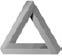
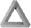
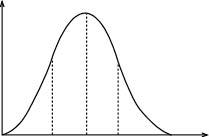
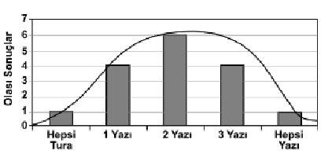

O kadar çok esrarengiz olgunun nedenini buluyoruz ki, bir şeyin bilinemeyeceğine inanmakta zorlanıyoruz.
Ama yine de bilinemeyen, bilinemeyecek diye bir şey var. O da karşımıza geçmiş sakin sakin işine bakıyor.
Henry Louis Menchen, yazar.
Bazen kahvaltıdan önce altı imkânsız şeye inanmışımdır.
Alice Harikalar Diyarında - Beyaz Kraliçe.
Nava sesi duyunca hemen sokağın karşısına geçti. Karanlık olduğu için neyin düştüğünü göremedi, ama bir insanın düştüğünden şüphelenip irkilmişti. Avluya girdiğinde çürük et kokusunu duydu ve olduğu yerde çakılıp kaldı. Burnunu eliyle kapadı ve çöp tenekelerinin yanında duran, ağzı açılmış torbaların arasından geçti. Önünden fırlayarak geçen fareleri de görmezden geliyordu.
Sonra cesedi gördü. Kadın çırılçıplaktı ve saçı yoktu. Bir tek kasıklarında tüyler vardı. Eli, kolu, bacağı o kadar garip açılarda duruyordu ki, sanki oyuncak bir bebek gibiydi. Bir zamanlar canlı olduğuna dair tek kanıt karnındaki derin yaradan akan kandı.
Nava, kadının başını yavaşça çevirdi. Yüzü acıyla gerilmişti, ama kim olduğuna dair bir şüphe yoktu. Bu Julia Pearlman’dı, yani Alfa deneği. Nava’nın yüreği daraldı. Koreliler başarısızlığı kabul etmezdi. Alfa deneğini teslim etmezse ya onu öldürecek ya da onu Ruslara teslim edeceklerdi.
Birden kendini çok suçlu hissetti, ölen zavallı kızı bir an bile düşünmemişti. Ne zamandan beri insanlıktan çıkmıştı? Ne zamandan beri sadece kendini düşünüyordu? Ama bunları sorgularken bile, içgüdüleri hâlâ kendini kurtarmak için planlar yapmasına neden oluyordu. Zihni bir çıkış yolu arıyordu.
Cebinden bir mendil çıkardı ve bununla Julia Pearlman’ın yarasını sildi. Sonra da çöp torbasından bir parça koparıp mendili buna sardı. Aklına başka bir şey gelene kadar belki de bir kan örneği vermek Korelileri avuturdu.
Sonra büyük bir korkuyla irkildi.
Ölü kız konuşuyordu.
Julia söylemesi gerekeni söyledi.
Şimdi dinlenme zamanı gelmişti.
Şimdi. Bu kelimeyi düşündü, ne kadar da saçmaydı. Ne kadar da önemli gelmişti ona, ama zaman olmayınca... 3.652 saniye sonra Şimdi olmayacaktı. Şimdi olmayacaktı, HerAn olacaktı; o saf, muhteşem HerAn. Orada koku da olmayacaktı. En azından bunun için şükredebilirdi.
Julia son bir kez nefes aldı ve gözlerini açtı.

Caine dört saat içinde 360 dolar kazandı. Başta hedeflediği 267’den 100 dolar kadar fazlasını yani. Kalkıp gitmesi gerektiğini bilse de yapamıyordu. Kendine hep aynı şeyleri söyledi: Şansı açılmıştı. Kârdaydı zaten. Tüm kumarbazların söylediği en önemli cümleyi tekrarladı: Kötü eller gelmeye başladığında masadan kalkacağım.
Ama sonra aptalca oynayıp 80 dolar kaybetti. Rakibi, üç onlusunu ufak bir kentle alt etti. Sonra da kendini yapmayacağına inandırdığı şeyi yaptı: Oyunda kaldı. 80 doları kaybettiğine o kadar sinirlendi ki, kartlar çok kötü gelmesine rağmen sonraki beş eli oynamakta ısrar etti. Çok kötü oynadığının farkındaydı, ama duramıyordu. Saatler boyunca dikkatlice oynayarak biriktirdiği fişler yok oldu otuz dakika içinde.
Son parasını da kaybedince sessizce ayağa kalkıp gitti. Soğuk sokağa çıkıp ellerini sıcak tutmak için ceplerine sokunca, dalga geçermiş gibi, son kalan yirmiliği eline değdi. Bunu harcamaya mecali kalmamıştı, sarhoş olmak bile istemiyordu.
Bunun yerine eve giden yolu uzattı. İki saat boyunca yürürken soğuğun tadını çıkardı ve sürekli kendisini eleştirip, kızıp durdu. Nasıl bu kadar aptal olabilirdi ki? Nikolaev’e 12.000 borcu olması yetmiyormuş gibi, son 400 dolarını da kumarda kaybetmişti.
Peter’in başka deneylerine de katılarak, para kazanıp kazanamayacağını düşünüyordu şimdi.

Kardeşinin oturduğu apartmanın önünde duran Jasper, bir dakika içinde beşinci kez saatine baktı: 12:19:37. David poker oynamaya gideli yedi saat olmuştu. Ses yakında geleceklerini söylemişti. Jasper tabancasını da getirmek istemişti, ama Ses getirmemesini söylemişti; o yüzden silahını evde masanın üstünde bırakmıştı.
Saatine yine baktı: Tam 12:20:00. Zamanı geliyordu. Hava soğuk olmasına rağmen çok terliyordu. Yiyeceği dayaktan çekiniyordu. Daha önce de dayak yemişti; Mercy’deki görevliler dövmüştü onu ve sonunda da Thorazine enjekte etmişlerdi. Hiçbir sokak kavgasına karışmamıştı ve ayrıca bu akşam kimsenin ona ilaç vereceği de yoktu.
Ama Ses ona David’i korumak için bunu yapması gerektiğini söylemişti, o da buraya gelmişti.
Geliyorlar, şimdi rahatla. Hemen olup bitecek.
Tam o anda büyük bir araba döndü köşeyi, farları parlıyordu. Sürücü, motoru durdurmadan arabadan atladı. Bir saniye sonra da Jasper’in karşısında durmuş ona bakıyordu ters ters. Jasper, midesine yumruk yerken, dev Rus’un adının Kozlov olduğunu hatırladı. Ciğerlerindeki hava sanki bir anda boşaldı ve iki büklüm oldu. Kozlov saçına yapışıp başını kaldırdı ve çenesine bir yumruk attı. Jasper’in dünyası karardı.
Kendine geldiğinde bir yanağı kaldırımdaydı, bir yanağında da Kozlov’un çizmesinin tabanını hissediyordu. Rus onun yüzünü eziyordu.
“Vitaly sana bir mesaj iletmemi istedi Caine: Parayla kumar oynama, borcunu öde. Eğer paran varsa, Vitaly’ye borcunu öde. Çinlilere kaptırma. Anladın mı?”
Kozlov yüzüne tüm gücüyle basınca, Jasper bir cevap vermesi gerektiğini anladı.
“Tamam, tamam anladım.”
“İyi.”
Kozlov ayağını çekince kafatasının genişlediğini hissettiğine yemin edebilirdi. Adam, Jasper’in ceplerini karıştırarak bir cüzdan buldu. Cüzdanda 1 dolar bulunca iğrenirmiş gibi bir edayla yüzüne attı. Ses, Jasper’e, buraya gelmeden cüzdanını boşaltmasını söylemişti.
Kozlov, Jasper’in yüzüne doğru eğildi. “Beş gün sonra görüşeceğiz,” dedi ve ağzına bir yumruk attı. Kafası kaldırıma çarpınca, bayıldı.

Tversky kapının sürgüsünü çekene kadar nefesini tuttu. Başarmıştı. Çantasını yere, kendini de bir sandalyeye attı. Gözlerini kapayarak son otuz dakikada olanları düşünmeye çalıştı. Aklı hızlı işliyordu. Bazen durup bir şeyler düşünüyor, sonra hızla hatırlamaya devam ediyordu.
Kendine gelmeye çalıştı. Her şey o kadar çabuk olup bitmişti ki. Bir içkiye ihtiyacı vardı. İçki dolabına gidip kendine dört parmak viski koydu, sonra da büyük bir yudum içti ve içki boğazını yakarken bunun tadını çıkarmaya çalıştı. İçkinin geri kalanını da içip bardağını yine doldurdu. Sandalyesine döndüğünde dünya daha hoş göründü gözüne.
“Daha iyi,” dedi yüksek sesle. “Çok daha iyi.”
İkinci içkisini de bitirince Tversky kaseti videoya taktı. Sandalyesine geri dönerken bir içki daha aldı. Şişeyi yarıladıktan sonra, eline aldığı siyah kumandadaki tuşlara titreyen parmaklarla bastı.
Ekranda kendini seyretti, bu parlak görüntü sanki onu büyülemişti. Zamanı ve tarihi söyleyip, Alfa deneğini tanıttı. Onu bir insan olarak değil de, deneyin bir parçası olarak göstermek daha kolayına geliyordu. O, öldürdüğü biri değildi. Denek masada bilinçsizce yatıyordu zaten. Sonra ona son doz ilacı da verdi.
Ekranın bir köşesinde EEG’si görülüyordu, dört çizgi yavaşça yükselip alçalıyordu. Başta Teta dalgaları yükseldi hızla, diğerleri çok az dalgalandı. Sonra EKG birden hareketlendi, tüm dalgalar tırmandı, tsunami gibi ekranı kapladılar. Kaseti yavaşlattı, gözlerini ekrandan ayırmadı. Nerede hata yaptığını ya da neyi doğru yaptığını anlamaya çalışıyordu. Ama görülecek bir şey yoktu. Olası olmayan sonuçlar gösteren bir EEG çıktısı ve deneğin göz kapaklarının altında sanki fırlayacakmışçasına hızla hareket eden gözlerini gördü bir tek. Sonra kız kusup masadan düştü. Kamerada görünmüyordu artık. Boş metal masa görünüyordu bir tek.
Bir düğmeye basarak videoyu normal hızında çalıştırdı. Son sözlerini bir daha duymak istiyordu. Sesi açtı. Kaydın hışırtısı ile birleşen kızın fısıltısı korkutucuydu. Üç dakika on iki saniye boyunca konuştu. Konuşması sanki bir dönme dolaptaymış gibi kimi yerde hızlanıyor, kimi yerde yavaşlıyordu.
Bazı söyledikleri anlaşılmasa da bazı kısımları çok açıktı ve her olası durum için ayrıntılı komutlar içeriyordu. Altı kere dinledikten sonra televizyonu kapattı. Oda birden sessizliğe gömüldü; Alfa deneğinin ilk sözleri çınlıyordu bu sessizliğin içinde:
Öldür onu. David Caine’yi öldür.
Yanlış duyduğunu düşünmek istemişti. Ama fısıltılarını altı kez dinledikten sonra bunu inkâr edemiyordu artık. Eğer bilgiyi edinmek istiyorsa, söylediğini yapmak zorundaydı.
Yalpalayarak masasına gidip, internete girdi. Sayfa önüne çıkınca Google’ın renkli logosunun altına soruyu yazdı. 0.62 saniye sonra 175.000 dosyadan ilk onu çıktı ekranına. Aynen Julia’nın söylediği gibi yedinci dosyayı açtı. Sitenin ana sayfasında şöyle yazıyordu:
Bu sitede yer alan bazı bilgiler birçok federal, yerel ve devlet yasasına aykırı olan faaliyetlerle ve araçlarla ilgili olabilir. Bu siteyi tasarlayanlar hiçbir yasanın çiğnenmesini desteklememektedirler ve sorumlu tutulamazlar. Bu dosyalar sadece bilgi vermek için tasarlanmıştır.
Eğer belgeyi okuduysanız ve şart ve koşulları kabul ediyorsanız ENTER’ı tıklayın.
Tversky hemen sayfayı açtı ve ekran değişince okumaya başladı.

Nava, oturunca biraz yaylanan, siyah, Aeron marka sandalyesine gömüldü. Masasının üstünde duran lambayı yaktı ve çalışma mekânı yumuşak bir beyaz ışıkla aydınlanırken, karanlık ofisin geri kalanı gölgelerle doldu.
Başparmağını kare cam panele bastırdı. Bir ışık gördü; pembe başparmağı parlıyordu. Düz ekranda iki kelime vardı:
PARMAK İZİ ONAYLANDI
Sisteme girebilmişti. Tversky’nin dizüstü bilgisayarından indirilen son verileri okuyarak zaman kaybetmedi. Bunun yerine sistemde biraz dolaşıp genelde ‘rehber’ olarak bilinen kısma geldi.
Bu programla tüm veri tabanlarına giriliyordu; CIA, FBI Vatandaşlık ve Göçmen Bürosu, Vergi Dairesi. Eğer Julia Pearlman’ın söylediği gibi bir adam varsa bu ‘rehber’de çıkacaktı.
Nava, soyadının nasıl yazıldığını bilmiyordu, o yüzden birkaç giriş yaptı:
Soyadı : cane, cain, caine, kane, kain, kaine
Adı : david
Şehir : new york
Eyalet : ny
Enter tuşuna basıp programın veri tabanlarını taramasını bekledi. Zaten fazla beklemesi de gerekmedi.
ALTI UYGUN YANIT BULUNDU:
Caine, David L.- 14 Middaugh Sokağı, Brooklyn, NY.
Cain David. P.- 300 Batı 107. Sokak, Manhattan, NY
Caine David M.- 28 Batı 10. Sokak, Manhattan, NY.
Caine, David T. 945 Amsterdam Caddesi, Manhattan, NY.
Kane, David S.- 24 Forest Park Sokağı, Woodhaven, NY.
Kain, David- 1775 York Caddesi, Manhattan, NY.
Başka bir arama için tıklayınız.
Nava ikinci ve dördüncü kişilere odaklandı, ikisinin de adresi Columbia Üniversitesi’nin altı blok civarındaydı. Cain David P.’yi tıkladı. Biraz bekleyince ekran bilgiyle doldu. Dosyaya hemen bir göz attı. Özellikle aradığı şeyler vardı, ama bunlardan hiçbirini bulamadı. Adam sıradan bir New York’luydu; büyük bir dairesi ve bolca borcu vardı.
Üçüncü kişiyi atladı ve Caine, David T.’yi tıkladı. Onun Columbia’dan mezun olduğunu görünce gözleri büyüdü. Julia’nın sözünü ettiği kişi bu olmalıydı. Pasaport fotoğrafına baktı. David Caine de sanki ona bakıyordu. Gözlerinde katı bir ifade vardı ve sanki onu seyrediyormuş gibi gülümsüyordu.
Dosyanın geri kalanına da baktı. Okurken bilgileri ezberliyordu. İşi bitince fotoğrafa döndü yine. “Neden bu kadar önemlisin Bay Caine?” diye sordu kendi kendine. Julia ona daha fazla bilgi verebilseydi daha iyi olacaktı.
Birden, birinin usulca yaklaştığını duydu. Biri geliyordu. Grimes karanlığın içinden çıkageldiğinde, Nava ekranını daha yeni kapatabilmişti. Grimes, elindeki koca kırmızı elmayı ısırıp karşısına oturdu. Çiğnerken de, sararmış dişlerini göstererek sırıttı kadına.
“Bir ısırık?” dedi elmayı uzatarak.
“Hayır, sağ ol,” diye cevap verdi iğrendiğini belli etmemeye çalışarak. “Tokum.”
Yanaklarını şişiren adam sesli bir şekilde yuttu elmayı. “Sen bilirsin.” Daha da büyük bir ısırık alıp yemeye devam etti. Sırtını koltuğa yaslayıp çıplak ayaklarını Nava’nın masasına koydu.
“Bir şey mi istiyorsun?” diye sordu Nava.
“Belki. Kim bilir?” diye cevap verdi çiğnerken Grimes.
Bu adam gerçekten iğrençti. “Peki, şöyle sorayım o zaman. Ne istiyorsun?”
“Hiç. Ben de gece mesaisindeydim, gelip bir merhaba diyeyim dedim.”
“Merhaba,” dedi Nava.
Grimes bir ısırık daha aldı ve tavana bakıp ağzı açıkken çiğnemeye başladı. Belli ki Nava’yı yalnız bırakmayacaktı.
“Peki, o zaman ben işime döneyim,” dedi Nava.
“Tabii olur,” dedi Grimes, ama yerinden kıpırdamadı. Nava ona ters ters baktı. “Peki canım, gidiyorum. Biraz sosyalleşelim demiştim.” Ayağa kalktı, yürümeye başladı, ama yarı yolda durdu. “Bu arada,” dedi dönerek, “David Caine’yi nereden bildin?”
Nava’nın ifadesi hiç değişmedi. “Ne demek istiyorsun?” diye sordu sakince.
“Biraz önce dosyasına bakıyordun, değil mi?”
“Öyle mi sandın... Niye?”
“Sanmadım. Biliyorum bebek,” dedi Grimes bir ısırık daha alırken. “Üzerinde çalıştığım tüm dosyaları şifrelerim. Biri girince, ne zaman girdi, kim girdi bilirim.”
“Sen neden David Caine’yle ilgileniyorsun?” diye sordu Nava.
“Dr. Jimmy yani Forsythe yarın sen onu yakalayıp getirmeden önce hakkında her şeyi öğrenmek istedi de.”
Nava’nın aklı karışmıştı. Elini bacağına koyup ayak bileğindeki tabancayı yokladı. Bunu alıp, Grimes’in kafasını dağıtmamak için kendini zor tutuyordu. “Yarın birini yakalayacağımdan haberim yoktu. Özellikle de David Caine’yi.”
“Henüz resmi olarak bir şey söylenmedi, ama ben Dr. Jimmy’nin aklı nasıl işler bilirim. Caine’nin hemen getirilmesini isteyecektir.”
“Neden?”
Grimes ona karşısında bir salak varmış gibi baktı. “Çünkü o Beta deneği.”
Elmasından son bir ısırık alıp kalanını çöpe attı. Çöpü tutturamadığı için elma çöpün kenarına çarpıp yere düştü. Grimes elmayı yerden almadı.
“Dün Tversky’nin bilgisayarına bir solucan yerleştirdim,” dedi kendini beğenmiş bir edayla. “Yani bir dosyayı tamamen sildiğinde ve bunu başka bir yerde yedeklediğinde, elektronik postayla hemen bana ulaştırılıyor. Bu gece şansım yaver gitti. Tversky gece yarısı tüm dosyalarını sildi. Bilgilerin birçoğu zaten elimdeydi, ama yeni dosyalardan David Caine’nin tüm tıbbi kayıtları çıktı. Onun Beta deneği olduğunu anladık. Bu bilgileri daha kimseye göstermedim, o yüzden senin nereden bildiğini merak ettim.”
“İz peşindeydim,” dedi Nava sanki bu her şeyi açıklıyormuş gibi.
“Demek sen de Tversky’yle buluşmasını gördün, öyle mi?” dedi. Grimes etkilenmişti. “Bu casusluk işlerinden hoşlanırım. Dr. Jimmy Alfa deneğinin kim olduğunu bilmediği için feci kızgın zaten. Beta deneğini de elinden kaçırmaz, hemen yakalar.”
Nava başını salladı.
“Neyse, ben bilgisayarımın başına döneyim. Beş dakika içinde bir turnuvaya katılacağım. Görüşürüz.” Grimes bir cevap beklemeden koridor boyunca odasının ışığının geldiği yöne doğru yürüdü.
Nava saçlarını düzeltti. Eğer, Grimes’in Forsythe konusunda söyledikleri doğruysa, o zaman durum iyice sarpa sarmıştı. Keşke ne yapacağını kestirmek için vakti olsaydı, ama zaman akıp gidiyordu.
New York eyaleti bina kayıtlarından Caine’nin dairesinin planını indirdi. Ceketini kaptı, sırt çantasını yüklendi, mavi büyük çantayı da alıp kapıya doğru ilerledi.
Sokağa çıkınca bir taksi çağırdı. “945 Amsterdam,” dedi şoföre. Taksi hızla yol alınca Nava arka koltuğa yapıştı. İlk önce tabancasına baktı, sonra da gözlerini kapadı. Caine’nin dairesinden yüz blok kadar ötedeydi. Yani karar vermek için on beş dakikası vardı.

Caine evine yaklaşırken girişteki merdivenlerde evsiz bir adam gördü. Adam için üzüldü, çünkü yakında kendisi de sokaklarda yaşamak zorunda kalabilirdi. Merdivenlere varınca eğilip, adamı yüzüstü çevirdi.
“Ahbap, iyi mi...” Adamın kan revan içindeki yüzünü görünce birden durdu. Bu kendi yüzüydü. Caine bir an için aklını kaçırdığını düşündü, ama sonra kendini toparladı. Kendine değil, Jasper’e bakıyordu.
“Tanrım, Jasper ne oldu sana?”
“Rus dostlarından biriyle rastlaştık da,” dedi öksürerek Jasper. Bir yandan da burnundaki kanı siliyordu. “Vitaly’nin selamı var sana.”
“Tanrım! Beni affet Jasper.”
Caine, Jasper’in kolunu boynuna doladı ve onu kapıya kadar götürdü. Cebinden anahtarı çıkarıp kilidi açtı ve Jasper’i merdivenlerden çıkarttı. Evde bir sürprizle karşılaşmak istemiyordu.

Sokağın karşısındaki apartmanın damına çıkmış olan Nava, Caine yabancıya yardım ederken gece görüş dürbününü taktı. Bu adam tanıdıktı, ama kim olduğunu bir türlü hatırlayamıyordu. Yüzü kan içinde olan adam pek de tanınacak halde değildi zaten. Ufak bir dijital kamera çıkardı; bunu da gece görüş dürbünü yerine kullanılabilirdi. Yabancı adamın yüzünün birkaç fotoğrafını çekti. Bunu sonra inceleyecekti.
Sonra, daha önce kurduğu tripoda döndü. Beşinci kattaki daireye bakarken ışıkların yanmasını bekledi. Bir dakika boyunca karanlığı seyredip, yanlış daireyi gözetlediğinden şüphelenmeye başlamışken küçük bir ışık gördü.
Koridorun ışığıydı bu. Caine kapıyı açmıştı herhalde. Şimdi görüş alanına girecekti. Nava gerildi.

Caine ışığı yakıp da kapıyı açınca, iki kardeş düşe kalka eve girdiler. Birlikte yere kapaklanmamak için Caine kapının koluna yapıştı.
“Haydi Jasper, dayan. Geldik.”
Jasper inledi, sağ gözünü açtı. Sol gözünü de açmaya çalıştı, ama şişen gözü kapanmıştı. Bir an için kendine geldi, birkaç adım attı, sonra da kanepeye yığıldı. Caine kapıya yaslanıp, zar zor nefes alan kardeşini izledi.
Nefesi normalleşince Jasper’in yanına gitti, gömleğini açtı ve yaralarına baktı. Kardeşinin göğsünde mor bir iz vardı ama kaburgaları kırık değildi. Yüzü dağılmıştı. Sol gözü mosmordu ve yanağı yırtılmıştı. Yüzü kan revan içindeydi. Burnu kanamıştı ve şişmişti, ama galiba kırık yoktu. Ayrıca, kafasının arkasında da koca bir şişlik vardı.
Caine mutfağa gitti. Bir tasa sıcak su doldurdu, rulo kâğıt havlu aldı ve dönüp kardeşini temizlemeye çalıştı. Kanı temizleyince Jasper’in halinin pek de fena olmadığı anlaşıldı. Hâlâ Mike Tyson’la bir raund boks yapmış gibiydi, ama her an ölecekmiş gibi bir hali yoktu artık.
Caine onu hastaneye götürmeyi düşündü, ama doktorlar Jasper için ne yapacaksa bunu o da yapabilirdi. Gerçi doktor belki birkaç ağrı kesici yazabilirdi. Ama kardeşinin deliksiz bir uyku çekmesi gerekiyordu; beş saat boyunca acil serviste dikilmek onu iyileştirmeyecekti.
Jasper “N’aber,” deyince, Caine yerinde sıçradı.
“Nasılsın?”
“Pek parlak sayılmam, ama göründüğümden daha iyiyim herhalde,” dedi Jasper, oturup kanepenin yanından bacaklarını aşağıya sarkıtarak.
“Dur biraz. Nereye gidiyorsun?” diye sordu Caine, Jasper’in omzuna yapışıp.
“Tuvalete. Gelmek ister misin?”
Jasper, onun elini iterek, ayağa kalkınca neredeyse yere kapaklanıyordu. Düşmemek için Caine’nin koluna yapıştı.
“Sana tuvalete kadar eşlik etmeme ne dersin?”
“İyi fikir.”
Caine, kardeşi tuvalette işini görürken, kapının dibinde bekledi. Jasper kapıyı açtığında berbat görünse de, en azından sırıtıyordu. Daha doğrusu sırıtmaya çalışıyordu.
“Aynaya bakınca fikrimi değiştirdim. Aynen göründüğüm gibi hissediyorum kendimi.” Başının arkasını yavaşça yokladı. “İlaç var mı evde?”
Caine başını salladı. “Advil’den başka bir şey yok. İstersen nöbetleri önlemek için verdikleri deneysel ilaçlardan vereyim.”
“Advil alayım ben.”
“Akıllıca bir seçim,” dedi Caine kardeşinin yanından geçip tuvalete girerken. “Kaç tane istersin?” dedi ilacı göstererek.
“Kaç tane var?”
Caine şişeyi boşaltarak dört hap aldı ve Jasper’e uzattı. Jasper hiç zorlanmadan dördünü de yuttu. Caine kanepeye kadar ona yardım etti ve ikisi de oturdular. “Bu akşam ne dertler açtın başına?” diye sordu Jasper.
“Başa çıkamayacağım bir dert açmadım,” dedi Caine bu sözleriyle kardeşini avutabileceğini umarak.
“Herhalde bu yüzden Ruslar, yüzümü kum torbası olarak kullandılar.”
“Seni ben mi sandılar?”
“Ya. Öyle oldu.”
Caine parmaklarına baktı. Bir sonraki soruyu nasıl soracağını bilemiyordu. “Peki... Beni neden eşek sudan gelene kadar dövmek istediklerini de söyledi mi Kozlov?”
“Çinlilerle ilgili bir şeyler zırvaladı.”
“Boku yedim.” Nikolaev’in nasıl hemen haberi olmuştu ki Billy Wong’un yerinde oynadığından? Diğer oyunculardan biri gammazlamıştı herhalde. “Nasıl özür dileyeceğimi bilemiyorum.”
Jasper elini salladı. “Bunun olacağını bilemezdin ki.”
“Evet, ama yine de... Belki de birkaç günlüğüne şehirden ayrılsan iyi olur. New York bu aralar benim için pek de güvenli bir yer değil... Ya da bana tıpatıp benzeyenler için.”
“Ben de aynı şeyi düşünüyordum. Yarın Philadelphia’ya giderim,” dedi Jasper yavaşça burnunu kaşıyarak. “Sen de benimle gelsene.”
“Keşke gelebilsem, ama Dr. Kummar’ın testlerini tamamlamak için burada kalmam gerek. Bu nöbetleri durdurmak için verdiği ilaç işe yarıyor gibi.”
Jasper başını salladı. “Şehirden çekip gitmen gerek.”
“Yapamam.” Caine ayağa kalkıp parmaklarıyla saçını düzeltti. “Eğer nöbetlerimi kontrol altında tutamazsam bir hayatım olamaz. Bu benim son şansım.”
“O herif seni öldürürse de bir hayatın olmayacak.”
“Yaa? Ben bunu nasıl akıl edemedim acaba?” diye diklendi Caine.
“Bana baksana sen, yardımcı olmaya çalışıyorum.”
Bir an için iki kardeş de bir şey demedi. Sessizliği bozan Caine oldu.
“Özür dilerim Jasper, artık uçurumun kenarına geldim. Her şey yolunda gitseydi, para sorununu halledecek bir iş bulurdum. Sağlığım, derken şu garip...” Caine cümlesini bitirmedi. Lokantada olanlardan söz etmek istemiyordu. “Neyse, yani anlayacağın keçileri kaçırıyorum galiba.”
Caine bir sandalyeye attı kendini. Her şey üstüne üstüne geliyormuş gibiydi. İkizinin dağılan yüzüne bakınca, hayat tüm gerçekliğiyle çok fazlaydı onun için.
“Hadi yatalım,” dedi Jasper kanepeye uzanıp gözlerini kapatırken. “Kim bilir? Belki de uykunda rüya görürsün, vahiy gelir. Böyle garip şeyler oluyor insanlara.”
“Tabii,” dedi Caine lokantada olanları düşünerek. “Oluyor.”
Nava, adamların derin bir uykuya daldıklarına emin olduktan sonra, kulaklıklarını çıkarttı ve ne yapacağını düşünürken dinleme mikrofonunu kapadı. Adamlar daireden çıkana kadar bekleyebilirdi, ama daha gün batımına birkaç saat vardı.
Biraz kestirip, gözetleme işine sabah devam etmeyi düşündü, ama onu rahatsız eden, adını koyamadığı bir şey vardı. Caine’nin arkadaşının kim olduğunu bilmenin önemli olduğuna dair bir his vardı içinde. Bu yüzden de, evine dönmek yerine, yine UGA laboratuvarına gitti.
Çalışma mekânına geldiğinde Caine’nin garip konuğunu daha yakından görmek için dijital fotoğrafları bilgisayara yükledi. Toplamda dokuz kare fotoğraf vardı. Nava fotoğrafları çekerken adam hareket ettiği için, birbirinden biraz farklı açılardan görünüyordu her biri. Her fotoğrafta adamın yüzünü büyüttü, ama görüntü yine de karanlık, bulanık ve bozuktu.
Birkaç düğmeye basınca, kimlik belirleme sistemi sihirli bir değnek gibi işlemeye başladı; dokuz farklı fotoğraftaki veriler birleşti ve adamın yüzünün üç boyutlu bir çıktısı oluştu. Yavaşça adamın burnu, gözleri ve kemik yapısı belirginleşti. Bir gözü şişmişti, yüzü ise kanla kaplıydı. Birkaç düğmeye basarak kanları silip, yüzünün geri kalanının cilt rengini kopyaladı. Birden resim tanıdık gelmeye başladı.
Şişmiş olan gözün yerine sağ gözünün ayna yansımasını yerleştirdi. Sonra da şişmiş olan burnu küçülttü. İşi bitince de yüzü kendine doğru çevirdi. İlk başta bir hata yaptığını düşündü. Hızlıca hata olup olmadığını kontrol etti ve haklı olduğunu gördü. Kapı eşiğinde yığılmış yatan adam David Caine’nin kopyasıydı.
Sonra her şeyi anladı. Caine’nin dosyasını açınca aradığı bilgiyi buldu. Caine’nin ikiziydi bu. Bu beklenmedik bilgiyi nasıl lehine kullanabileceğini düşünürken, aklı hızla işliyordu. Grimes’in, David Caine’nin bir ikizi olduğunu kestirecek kadar ayrıntılı bir şekilde dosyayı taramadığından emindi. Eğer bu konuda yanılıyorsa, Nava’nın ne yapmaya çalıştığı hemen anlaşılırdı. Ama eğer doğru tahmin ettiyse....
Bir seçim yapmak zorundaydı: Ya bekleyecek ve fırsatı elinden kaçıracaktı, ya da harekete geçecek ve kendini ele verme riskini göze alacaktı. Böyle zamanlarda hep içgüdülerine güvenirdi. Her şeyi apaçık görüyordu, her seçimin olumsuz sonuçları olabilirdi. Asıl yapılması gereken riski değerlendirmek ve en aza indirgemekti. Hiçbir zaman risk faktörü yok edilemezdi; tamamen yok edilemezdi.
Nava harekete geçmeye karar verdi.
UGA’nın ana dosyalarını değiştirecek yetkiye sahip olmadığını biliyordu, ama bunu yapmanın başka bir yolu daha vardı. Birkaç ay önce Sosyal Güvenlik’teki sistem yetkililerinden birine para vererek kendisine bir kimlik ve şifre yaptırmıştı, yani sahte isimlerle girişler yapabiliyordu. Bu yasadışı şifreyi kullanmayalı altı hafta kadar olmuştu, ama herhalde hâlâ geçerliydi.
Sosyal Güvenlik veri tabanına girdi ve Enter tuşuna bastı. Ekran karardı. Nava sistemin tarandığını ve şifresinin devre dışı bırakıldığını düşündü bir an için. Birden sessiz alarmların çaldığını, güvenlik kapılarının kırıldığını ve silahlı askerlerin ona doğru yaklaştığını canlandırdı gözünde. Ama o anda önüne bir ana menü çıktı.
F10 tuşuna basarak Sosyal Güvenlik ana dosyasına bilgileri girmeye başladı. Bu sadece beş dakikasını aldı. İşi bittiğinde UGA’nın veri tabanına döndü, Caine’nin dosyasını açtı ve bilgisayara kayıtları güncelleme komutu verdi. Program, dosyaları oluşturmak için kullandığı kaynak veri tabanlarını gözden geçirirken ekranda ‘işlem tamamlanıyor’ yazıyordu. Otuz saniye içinde ekran normale döndü.
Tüm veriler tek bir değişiklik dışında aynıydı. İşi bitmişti. Eğer Grimes dün akşamki veri boşaltımı sırasında bilgileri yedeklediyse, Nava’nın yaptıklarının farkına varacaktı, ama bu da önemli değildi. Eğer iş bu noktaya gelirse, Nava zaten çoktan arayı açmış olacaktı. Binadan çıkıp, o gece ikinci kez Caine’nin dairesine gitmek için yola koyuldu.
Şunu iyi biliyordu: Bu oraya son gidişi olacaktı.

James Forsythe’nin öfkesi kelimelerle ifade edilemezdi.
Kendinden geçmişti. Grimes’i elleriyle boğmamasının tek nedeni ona ihtiyacı olmasıydı. Kendini zorlayıp, gözlerini kapayarak duygularına hâkim olmaya çalıştı. Nefes alıp vermeye çalıştı. Nefes al, ver, al, ver.
“İyi misin Dr. Jimmy?” diye sordu Grimes farkında olmadan kulağını karıştırarak.
“Dr. Forsythe. FORSYTHE,” dedi dişlerini sıkan doktor gözlerini açarak.
“Tamam canım, biraz dalga geçiyoruz işte,” dedi gülümseyen Grimes. “Özür dilerim, sizi dün gece uyandırmadım, ama bilmiyordum.”
“İzlediğimiz bilim adamı ortadan kaybolunca, bunu bilmek istemeyeceğimi mi düşündün?”
“Teknik olarak ortadan kaybolmadı. Sadece, bir süredir bulamıyorlar.”
“Üç saat önce aramaya başladılar. Ayrıca, senin vardiyanda oluyor tüm bunlar.”
Grimes olduğu yerde kıpırdandı. “Ne dememi bekliyorsunuz anlayamıyorum. Olan oldu işte.”
Forsythe, tam ağzını açıp bir cevap verecekti ki, salağın haklı olduğunu düşündü. Grimes’den öcünü almak için bekleyecekti.
“Peki,” diyerek iç geçirdi ve arkasına yaslandı. “Bana bildiğin her şeyi anlat. Baştan başla.”
Grimes elindeki mini bilgisayarı açıp, okumaya başladı. “Polis raporuna bakılırsa gece saat 11 ile 12 arasında Julia Pearlman adında bir doktora öğrencisi ölmüş. Kız altıncı kattaki bir pencereden atmış kendini. Saat ikiye doğru, evsiz pisliğin teki onu çöplerin arasında çıplak yatar halde bulmuş. Adli tabip ölüm nedenini araştırıyor hâlâ, ilk bulgulara göre omuriliği kırılmış galiba. Bunun bir intihar olduğunu düşünüyorlar, ama cinayet olmadığına da emin değiller.”
“Tversky’le bir bağlantısı olabilir mi?”
Grimes başını salladı. “Adamla konuşmak istiyorlar, çünkü kız onun laboratuvarının penceresinden atlamış. Diğer öğrenciler de arada Tversky’le kızın gece geç saatlere kadar, baş başa verip çalıştıklarını söylemişler.”
Forsythe birden donup kaldı, bulmacayı çözmüş gibiydi. “O Alfa deneğiydi.”
“Evet, öyle görünüyor. Veri tabanını temizlemeye çalışırken bilgisayarından bazı bilgileri indirebildim. Kız ölmeden önce Tversky onun üstünde yeni bir kimyasal bileşimi deniyormuş. Bunu aynı tür yetenekler sergileyen ve dün laboratuvara getirilen bir heriften edinmiş. Ona Beta deneği diyor.”
“Kahrolası herif,” dedi Forsythe, “Adı sanı belli olmayan bir denek daha çıktı başımıza.”
“Aslında kim olduğunu bulduk. Adı David Caine.”
Forsythe birden ümitlendi. “Kim olduğunu nasıl buldunuz?”
Grimes gülümsedi. “Tversky’nin bu yeni test sonuçlarını incelediğini gördüğümde, evrakın üzerindeki kimlik numarasını muhasebeye bildirilenlerle karşılaştırdım. Aynı gün, aynı kimlik numarasıyla David Caine’ye bir çek yazmışlar.”
“Başka kim biliyor bunları?”
Grimes’in yüzü ciddileşti. “Ajan Vaner. Gerçi tam olarak açıklamadı nasıl bilgi edindiğini ama... Ajan işi herhalde. Her ne boksa.”
“Şimdi nerede Vaner?”
“Son gördüğümde Caine’nin dairesinin dışında adamı gözetliyordu.”
Forsythe en azından bu iyi habere sevinebildi. “Oldu. Bırak o Caine’yi yakından izlesin, sen de bu arada Tversky’yi bul.”
“Olur efendim. Baş üstüne Kaptan Jimmy,” Grimes askermiş gibi topuklarını birbirine vurup, tek bir hamlede arkasını dönüp çıktı odadan.
Yalnız kaldığına memnun olan Forsythe, Tversky’nin son laboratuvar notlarına baktı. Tamamlanmamış olmalarına rağmen yine de inanılmazdı sonuçlar. Caine’nin yeteneklerini sınamamıştı daha, ama yine de kimyasal veriler bunu doğruluyordu. Teorisini de destekliyordu veriler. Ayrıca, Pearlman’ın EEG çıktıları daha önce gördüğü hiçbir çıktıya benzemiyordu. Serum enjekte edildikten bir dakika sonra, Alfa deneğinin beyin dalgaları aynı hızda ve hizada yükselmişti. Tversky deneyi yaparken kızı öldürmüştü, ama çalışmaları bilimde bir devrim niteliğindeydi.
Tversky yanında çalışsa Forsythe’nin işi kolaylaşırdı, ama bu gerekli değildi. Aslında David Caine’ye başka testler yapması gerekiyordu. Ama eğer Tversky’nin teorileri doğruysa, o zaman Caine’yi yakalamak tehlikeli bir işti. Forsythe telefon kayıtlarına baktı ve telefonu eline alıp bir numara tuşladı. Beş dakika kadar bekledikten sonra bir adam çıktı karşısına. “Günaydın General,” dedi olduğu yerde doğularak oturan Forsythe. “Sizden bir iyilik isteyecektim.”

Caine elindeki iki kahveyi ve çöreklerin içinde durduğu torbayı düşürmeden sokakta ilerlemeye çalışırken, birden sanki bir şeyler olacakmış gibi hissetti. Bu duyguya kulak asmayarak kulaklığından duyduğu müziğe odaklanmaya çalıştı. Stresli olduğu anlarda walkmanini kulağına takar ve kendi dünyasına dalmaya çalışırdı. Radyodaki farklı kanallara da bakardı, ama her seferinde klasik rock kanalına gelip takılırdı sonunda. Pink Floyd çalıyordu kanalını bulduğunda, sonra araya saçma sapan bir reklam girdi.
Sonra kokuyu duymaya başladı.
Hayır!
Olduğu yerde aniden durunca arkasından gelen ve cep telefonuyla konuşan uzun boylu adam Caine’ye çarptı. Caine öne doğru sendeledi ve elindeki kahveyi düşürdü. Devanası kılıklı zenci bir kadına çarpınca, onun mavi bir elbise giydiğinin ve elinde iki alışveriş torbası olduğunun farkına vardı. Kadın sola doğru kaçmaya çalıştı, ama dengesini kaybedince torbaları yere düştü. Elma ve portakallar kaldırımda yuvarlanmaya başladı.
Dökülen meyveler daha da fazla zarara yol açtı. Beyaz, dar, kısa bir ceket giymiş olan kel bir adam elindeki frapuçinoyu istemeden parlak, sarı bir bluz giyen yaşlıca kadının üstüne döktü. Mor etekli esmer bir kadın da düşüp iki tırnağını kırdı. İri yarı bir inşaat işçisi, şık giyimli bir iş adamının ayağına alet kutusunu düşürünce adamın Gucci marka ayakkabılarını berbat etmekle kalmayıp, bir de ayak başparmağını kırdı.
Caine bir anda bütün bu insanların gününü değiştirmişti. Kel adam gidip bir frapuçino daha alacaktı. Yaşlı kadın eve gidip üstünü değiştirmek zorunda kalacaktı. Esmer kadının yine manikür yaptırması gerekecekti. İnşaat işçisi, iş adamının kendisine açacağı tazminat davasından kurtulmak için bir avukat tutmak zorunda kalacaktı. İş adamı ise o günkü toplantıların hepsini kaçıracaktı, çünkü bir hastanenin acil servisinde birilerinin gelip parmağına bakmasını bekleyecekti.
Bu değişiklikler başka değişiklikleri de getirecekti. Caine bunları gözünde canlandırdı, sanki bir göle bir taş atmıştı ve genişleyen daireleri izliyordu. Tam olarak ne olduğunu bilmiyorsa da bir şeylerin yanlış olduğunun farkındaydı. Sonra birden farkına vardı. Aslında bunların hiçbirinin olmaması gerekiyordu.
Kel adamın aslında spor yapmaya gidip, ilk başta arkadaşı sonra da sevgilisi olacak biriyle tanışması gerekiyordu. İnşaat işçisinin ikinci bir oğlu olmalıydı, ama tazminat davası açılınca strese girecek ve evliliği de bitecekti. İş adamının iki ay içinde ölmesi gerekiyordu, ama hastaneye gittiğinde doktor kalp ritmindeki bir bozukluğu tespit edecekti. Kalbinden rahatsızlanmasını önlemek için onu hemen bir ameliyata alacaklardı ve ölümcül bir kalp krizi geçirmeyecekti. Yaşlı kadının metroya giderken düşüp kalçasını kırması gerekiyordu, ama şimdi hiçbir şey olmayacaktı. Esmer kadın da terfi etmesine yarayacak iş yemeğine katılamayacaktı.
Caine bir anda tüm bunları gördü, sonra da birden zihninden silindiler. Kalbi yerinden fırlayacakmış gibi oldu. Yüzünden oluk oluk ter akmaya başladı. Gözlerinin kapalı olduğunu fark edince açmaya zorladı. Yumruklarını da sıkmamaya çalıştı. Derin derin nefes al, derin derin, sonra da ne olduğunu anlamaya çalış. Bu önsezi miydi? Daha önceden olacakları mı görmüştü? Hayır, hayır. Bu sadece gündüz gözüyle görülmüş bir rüyaydı. Jasper’le küçükken oynadıkları oyunu hatırlatan bir rüya. Küçükken sokaktan geçen insanları seçip onlara gün içinde ne olacağını tahmin etmeye çalışırlardı.
Derin derin nefes al, derin derin. Evet, işte aradığı cevabı bulmuştu. Gün içinde rüya âlemine dalmıştı, hepsi bu. Zaten şimdi her şey bulanıklaşıyordu. İş adamı, işçiye bağırırken döndü... Sonra da dünyası karardı. Serin bir karanlık kapladı Caine’nin her yanını.
...
Zonkluyordu. Sanki kalbinin her atışında, beyni de ritme uygun bir şekilde büyüyüp küçülüyordu. Gözlerini açtı. Sırtüstü yerde yatıyordu ve çevresine doluşan insanların yüzlerine bakıyordu.
“Galiba kendine geliyor,” dedi dolgun bir sarışın.
“İyi misin adamım?” diye sordu zenci bir adam.
Caine ayağa kalkmaya çalıştı, ama biri onu geri itti.
“Kalkmasına izin vermeyin. Sırtını incitmiş olabilir,” dedi kalabalığın arkasından bir adam.
“Sen olduğun yerde yat ahbap.” Yine zenci adam konuşuyordu, galiba onu yerde tutan da aynı adamdı. “Acil yardım ekibi yolda.”
Caine gözlerini kapadı. Tüm bu konuşan insanların yüzlerini görmek midesini bulandırıyordu. Karanlık daha iyiydi, o da tanıdık karanlığa gömüldü.
Git Alice’ye sor. Neden 5 metre boyundaymış?

“Eee?” Forsythe’nin sesi cızırtılı geliyordu kulaklığından.
“İnceliyoruz. Ama durumuna bakılırsa kaldırımda yığılıp kalmış hepsi bu,” dedi Grimes önündeki monitörlere bakmak için dönerek. Sağ alt köşedeki ekranlardan birinde olay tekrar tekrar oynuyordu ve Grimes bunu en az on kere seyretmişti, ama bir daha seyretmekten kendini alıkoyamıyordu.
“Bana tam olarak ne olduğunu anlat.”
“Hedef bir anda durdu, sonra da bir adam ona çarpınca dengesini kaybedip dev bir karıya bindirdi; o da, torbasındaki meyveleri düşürdü. Karının meyveleri insanların ayaklarına takıldı. Hedef de çevresindekilere bakıp başını tuttu, sonra da düştü.”
“İyi mi?”
“Gayet iyi, gerçi başı feci zonkluyordur herhalde. Biri ambulans çağırmış, ama herifin ambulansa binmeye niyeti yok. Radyolarını dinledim, pratisyen doktor adamın iyi olduğunu söyledi, başını çarpmış hepsi bu.”
“Birkaç defa daha seyret görüntüleri ve başka bir şey gözüne çarparsa bana haber ver. Bu arada peşinden ayrılma sakın.”
“Tamam efendim, baş üstüne efendim.” Grimes askerlerle dalga geçmekten büyük zevk alırdı hele bir de bunu kullanıp Dr. Jimmy’yi sinir edebildiğinde keyfine diyecek yoktu. Grimes, Dr. Jimmy on saniye kadar hiçbir şey demeyince onu sinir ettiğini anladı. Grimes bu görüşmeyi kayıttan bulsa ve arka plandaki sesleri kısıp, Dr. Jimmy’nin sesini yükseltse onun içinden küfrettiğini duyabileceğine iddiaya girerdi. Buna bir bakacaktı zamanı olduğunda.
“Şimdi nerede peki?”
“Evine doğru yürüyor. Onu kamyonetle takip ediyoruz, Vaner ise yaya takipte. Birkaç uydudan izliyoruz. Dairesine de mikrofon yönlendirdik. Kafana takma Dr. Jimmy, bu iş çantada keklik.”
“Vaner’e söyle, hedefi yakalamaya yardım etmeleri için bir saldırı ekibi yolluyorum.”
Grimes ıslık çaldı. Ekip geliyordu demek. İşte şimdi seyret eğlenceyi.

Caine folyoya sarılmış bir çöreği kardeşine doğru fırlatıp, New York Post gazetesini de sehpanın üstüne bıraktı. “Çörek peynirli ve soğanlı. Hâlâ sıcaktır umarım.”
“Kahve yok mu yani?” diye sordu Jasper.
Caine birden, bir şeyler gördüm, bayıldım ve kahveni kaldırıma döktüm, demeyi düşündü. Ama bunun yerine, “Özür dilerim, unutmuşum,” dedi.
“Dert değil,” dedi ağzı çörek dolu olan Jasper. Yerken bir şeyler düşünüyor gibiydi. Ağzındakini yutunca konuştu. “Eee, uykunda vahiy geldi mi bari?”
“Ne yazık ki hayır. Nikolaev’e para vereceğim gün daha da yaklaştı bir tek. Elimde olmayan 2.000 doları...”
“Keşke sana da piyangodan para çıksa,” dedi Jasper gazeteyi kaparak.
Ön sayfada POWERBALL MİLYONERİ yazıyordu kocaman harflerle. Üstünde de elinde 247.3 milyon dolarlık bir çek tutan bir adamın resmi vardı. Caine neden bu gazeteyi aldığını bilemiyordu. Genelde Times’ı okurdu, ama başlığı görünce alıvermişti işte.
“Hay anasını... Bu Tommy DaSouza,” dedi Jasper resmi kaldırıp Caine’ye göstererek. “Hatırlasana, eski mahalleden.”
“Tanıyamadım,” dedi Caine resme bakarak. Onu son gördüğünden bu yana Tommy en az yirmi kilo almıştı. “Emin misin o olduğuna?”
Jasper makaleyi okuyunca başını salladı. “Thomas DaSouza, yaş yirmi sekiz, hâlâ Park Slope’de yaşıyormuş; eski evinden beş blok öteye gidebilmiş ancak.”
“Ne diyeyim, aferin ona. Ama bunun bana bir yararı yok.”
“Ne demek yararı yok? Bu herif küçükken sana tapardı. Hani sen onun kıçını kollamıştın bir keresinde de o günden sonra bir yıl kadar peşimizden ayrılmamıştı. Sülük gibi yapışırdı bize her dışarı çıktığımızda.”
Caine omuz silkti. Tommy’yi bir kabadayının elinden kurtarmak için araya girdiği günü hatırladı. “Bu yıllar önceydi Jasper.”
“Ama sen Tommy’nin hep iyi bir dostuydun. Hatta sen ona cebir dersi vermesen, liseyi bile bitiremeyecekti.”
Lise yılları... Caine o zamanlar okulu bitirmek için sabırsızlanıyordu. Şimdiyse her şeyin daha basit olduğu o yıllara dönmek için varını yoğunu verirdi. O zamanlar Tommy’le az eğlenmemişlerdi. Ama mezuniyetten sonra fazla görüşmemişlerdi. Tommy bir işe girmişti, Caine ise üniversiteye gitmişti. Birkaç yıl sonra ise Caine, eski dostuyla artık fazla ortak yönleri kalmadığının farkına varmıştı.
“Beş yıl oldu onunla görüşmeyeli.”
Jasper telsiz telefonu kaptığı gibi Caine’ye attı. “Bence şimdi aramanın tam zamanı. Ara şu eski dostunu.”
“Ne yapmamı istiyorsun ki? Arayıp ‘Tommy piyangoyu kazanmışsın, tebrikler. Bana 12.000 dolar borç versen olur mu?’ diye mi sorayım. Yapmam öyle bir şey.” Telefonu Jasper’e geri fırlattı.
“Peki,” dedi Jasper. Telefonu açtı ve bir numara tuşladı. İki saniye sonra karşıdakine, “Thomas DaSouza, Brooklyn,” dedi. Numarayı bir kâğıda yazıp, masanın üstünden kâğıdı ve telefonu kardeşine doğru kaydırdı. Caine, kardeşi ona ölü bir fare uzatmış gibi bakıyordu.
“Bana baksana sen,” dedi Jasper, “Sen yapmazsan ben yapacağım. Ne kaybedersin ki yapsan? Herif bir ömür boyu harcayamayacağı kadar para kazandı dün, seni de 12.000 dolar uğruna öldürmek üzereler. Eğer sana para vermezse hiçbir şey değişmeyecek, ama eğer olur da kabul ederse, o zaman paçayı kurtarırsın. Denemekle kaybedecek hiçbir şeyin yok.”
“Ya gururum?” diye sordu Caine.
“İlk önce Rus mafyasına olan borcunu öde, sonra gururunu düşünürsün,” dedi Jasper. “Şimdi şu herifi ara, kara, para, yara.”
Jasper’in kafiyeli konuşması Caine’yi fena etmişti, ama kardeşinin bu konuda haklı olduğunu da biliyordu. İstemeyerek de olsa telefonu alıp numarayı çevirdi. İlk çalışta sabırsız biri açtı telefonu. “Ne var?”
“Tommy DaSouza’yı arıyordum,” dedi Caine.
“Bana bak, her ne satıyorsan istemiyorum, tamam mı? Telefon kaydımdan adresimi de öğrenirsin, çok istiyorsan bana bir katalog yolla postayla. Eğer ilgilenirsem ararım. Hadi hoşça kal!”
“Bekle, satıcı değilim!” dedi çaresizce Caine bunun son şansı olabileceğini bir anda anlayarak. “Ben... David. David Caine.”
Bir an sessizlik oldu ve Caine, Tommy’nin telefonu suratına kapadığını düşündü. Sonra, “Hadi ya. Dave? Gerçekten sen misin dostum? Nasılsın?” dediğini duydu Tommy’nin.
“Pek iyi değilim,” dedi Caine telefonu bir kulağından diğerine geçirirken kardeşine bakıp kaşlarını kaldırdı. “Seni de bu yüzden aradım aslında...”

“Parayı getirdin mi?”
Tversky neredeyse sıçradı korkudan. Arkasını döndü ama çıkmaz sokaktaki tek insan zayıf bir çocuktu. Oğlan taş çatlasa on iki yaşındaydı, ama başına eğreti biçimde taktığı beyzbol şapkasıyla daha da küçük gösteriyordu.
“Para yanında mı moruk?”
“Boz sen misin?” dedi Tversky şaşkınlık içinde.
Çocuk güldü. “Dalga mı geçiyorsun? Boz daha önceden tanımadığı çatlağın tekiyle yüz yüze görüşecek değil herhalde. Ben Trike’yim.”
“Ama, bana Boz’la bulaşacağımı söylediler.”
“Öyle mi? Kaderine küs bence. Randevunuzu iptal etti. Şimdi benimle görüşeceksin.” Çocuk ellerini kocaman ceplerine soktu. “Parayı görelim, yoksa anca ense tıraşımı görürsün.”
Tversky cebinden beyaz bir zarf çıkartırken ellerinin titremesini engellemeye çalışıyordu. Trike parayı kapmaya çalışınca, Tversky onun ulaşamayacağı bir yerde tuttu zarfı. “İlk önce bana vereceğini görelim.”
Trike gülümseyince iki altın dişi göründü. “Tamamdır babalık,” dedi ceplerinin birinden kahverengi bir kese kâğıdı çıkartarak. Tversky gözetleyen biri olup olmadığını görmek için etrafına bakındı, ama sokak boştu. Kese kâğıdını aldı Trike’den. Sandığından ağırdı paket.
“Şimdi ver şu lanet olası parayı.”
Tversky zarfı uzattı. Çocuk parmağını yalayıp, parayı hızlıca saydı ve tomarı pantolonunun önüne tıktı.
“Hadi bana eyvallah,” diyen çocuk birden ortadan kaydoldu. Tek başına kalan Tversky, kese kâğıdını çantasına sokuşturup, hızlıca Broadway’e doğru yol aldı.
Üç kuruşluk otel odasına gelene kadar kese kâğıdının içine bakmaya cesaret edemedi. Videoyu seyreder seyretmez hemen dairesinden ayrılmıştı. Julia ona buraya gelmesini söylemişti, o da aynen öyle yapmıştı.
Kepenkleri indirince kese kâğıdını yatağın ortasına koydu. Zar zor yutkunarak, elini kese kâğıdının içine uzatıp, plastik silindirlere yavaşça dokundu. Terli parmaklarının altındaki pürüzsüz yüzeyi hissetti. Derin derin nefes alarak, tüfeğin mermilerini kese kâğıdından teker teker çıkardı. Onları düzgün bir şekilde yan yana dizdi. Toplam on mermi vardı. Mermilere bakarken, tam olarak bu noktaya nasıl geldiğini hatırlamaya çalışıyordu.
Artık geri dönmek için çok geçti. Julia’ya olanlardan -Julia’ya yaptıklarından- sonra artık çok geçti. Bu işi sonuna kadar götürmek zorundaydı. Saatine baktı, altıya daha birkaç saat vardı. Eğer David gelmezse Julia’nın yanıldığını anlayacaktı. Ama kızın yanıldığını hiç sanmıyordu.
Şimdiye kadar her şey aynen dediği gibi olmuştu. Lokantada nerede oturacağından tut da, cüce kılıklı silah satıcısıyla iş görmesine kadar her şeyi bilmişti. Eğer şimdiye kadar olacak her şeyi bildiyse, bundan sonrasını bilmeyeceğine dair bir şüphesi olmamalıydı. Ayrıca, başka seçeneği de yoktu.
Ama aslında bu doğru değildi, değil mi? Aslında Julia’nın dediklerini yapmak zorunda değildi. Fikrini değiştirebilir, başka bir yol seçebilirdi. Ama bir yandan başka bir seçeneği olmasını dilerken, diğer yandan da bundan başka bir yola baş koymayacağını biliyordu. İstediğini elde edebilmek için David Caine’yi öldürmeye çalışacak olması üzücüydü. Ama bunu yapacaktı. Başka bir şey yapamazdı. Boğazına kadar batmıştı bu işin içine.
Nava kimlik numarasını girdi ve ‘Bul’u tıkladı. Ekrandaki yazıların yerini New York şehrinin bir haritası aldı. Haritanın üzerinde yanıp sönen iki kırmızı ışık vardı. Biri Nava’nın şu andaki yerini gösteriyordu, diğeri de Caine’nin nerede olduğunu. Küresel izleme sistemi hiçbir aksilik olmadan devreye girmişti.
O sabah Caine’nin deri ceketine bir alıcı iliştirmişti. Şimdi yapması gereken tek şey ikizini beklemekti. Jasper Caine’yi de bulduğunda, onu Grimes’i oyalamak için yem olarak kullanıp, David Caine’yi kendi ele geçirecekti. Sonra da kayıplara karışacaktı.
Saatine baktı, on bire geliyordu. Eğer Jasper kısa bir süre sonra daireden çıkmazsa Nava hapı yutmuştu. Sokağın karşısına bakarken önünde bir Fed-Ex aracı durdu ve görüşünü engelledi. Sürücü uzanıp sağ kapıyı açtı.
Nava minibüse binip kapıyı çarparak kapadı. İçeri girince de sürücü mekânı ile arka mekân arasındaki paneli kenara çekip arkaya geçti. Grimes ve ortağı o girerken başlarını bile kaldırmadılar. İkisi de klavyelerinde hızla bir şeyler yazıyorlardı. Önlerindeki üç monitörü izliyorlardı sürekli.
Nava’nın oturabileceği bir yer yoktu, bu yüzden de Grimes işini bitirinceye kadar ayakta bekledi. Bir dakika sonra Grimes arkasına dönmeden elini Nava’ya doğru uzattı.
“Bana cep bilgisayarını ver. Bazı bilgileri güncellemem gerekiyor.”
Düşünmeden Grimes’e metalik cihazı verdi. Verdiği anda da hatasını anladı, ama artık çok geçti. Konsolundaki bir yere aleti takan Grimes bir düğmeye bastı. Monitörde New York şehrinin planı çıktı.
“Demek alıcıyı yerleştirdin bile. Ekibe yerini bildireyim.” Parmakları klavyede neredeyse ışık hızıyla hareket ediyordu. “Tamam. Şimdi herkes biliyor hedefin yerini. Elimizden kaçırsak bile, yine buluruz.”
“Artık hedef mi?” diye sordu Nava.
“Ya,” diyen Grimes döner sandalyesinde Nava’ya doğru döndü. “Dr. Jimmy bu sabah, bizzat yeşil ışık yaktı bu operasyon için. Sen taktik ekiptesin, saldırı ekibi yolda.”
“Ne?”
“İnanmıyorsan bak,” dedi ek klavyeye bağlı en sağdaki monitörü göstererek. İlk komandonun dosyası vardı ekranda. UGA’nın Nava’nın profiline uyan personeli yoktu. Bu ekip birkaç silah kullanabilen bilgisayar uzmanından oluşuyordu herhalde.
Ama Nava çok yanılmıştı.
AD: Spirn, Daniel, R.
Birim: Özel Birlikler
Rütbe: Teğmen
Silah deneyimi: Tabanca (9mm, .45kal, .38kal.), M16A2/M4A1, Tüfek (12 gauge), M24, keskin nişancı tüfeği, M203 el bombası ateşleyicisi, M249 otomatik silah, el bombası, AT-4, M240B makineli tüfek, M2 HB makineli tüfek, MK-19 makineli, bomba (60mm, 81mm, 120mm), piroteknik, M18A1/A2 mayın, mayınlar (genel) TOW füzesi, Dragon, tüfekler (RCL-84mm, 90mm, 106mm), AT-4, hafif antitank silahları.
Silahsız çarpışma: Aikido, choi-kwangdo, hapkido, judo, jujitsu, muay thai, tae kwon do.
Nava üç askerin dosyalarına baktı. Bomba imha uzmanı olan Gonzalez dışında, hepsinin de becerileri üç aşağı beş yukarı aynıydı. Hepsi eğitimli ve sahada deneyimliydi. Hatta, birkaçı gizli göreve bile çıkmıştı. Nava derin bir nefes alıp verdi. İşte bu işleri karıştırıyordu. Grimes’e baktı.
“Sence de abartmışlar, değil mi? Bir sivili yakalamak için dört eğitimli asker yolluyorlar.”
“Ne bileyim,” dedi Grimes omuz silkerek. “Dr. Jimmy iyice gerildi. Bir hata olsun istemiyor.”
“Bu ekibi nereden buldu ki?”
“Bilmem, herhalde birinden rica etti. Aynen seni buraya getirttiği gibi. Bu işte herkesten her şeyi rica ediyor.” Grimes bacaklarının arasında sıkıştırarak tuttuğu kutudan yumuşak bir şekerleme aldı ve Nava’ya uzattı. Nava başını salladı. Grimes şekeri ağzına tıktı ve çiğnerken konuşmaya devam etti. “Birkaç dakikaya kalmaz gelirler. Tanışıp anlaştıktan sonra da, Dr. Jimmy herifi yakalamanızı istiyor.”
Grimes’in cihazı ötmeye başladı. Dönüp bir düğmeye bastı. “Evet? Hemen yanımda. Veriyorum.” Kablosuz kulaklıklarını çıkartıp Nava’ya uzattı. “Forsythe arıyor.”
“Buyurun Doktor Forsythe.”
“Ajan Vaner, Grimes’in size gerekli tüm bilgileri verdiğine emin olmak istedim.”
“Verdi efendim. Anladığım kadarıyla ekiple birlikte Bay Caine’yi yakalayacağım ve onu UGA laboratuvarına getireceğim.”
“Aynen öyle. Ekip şefi sizsiniz. Bu işi gizli kapaklı yapmalısınız. Ekipteki askerlerin böyle davranmaya alışkın olduklarını sanmıyorum, ama ne yazık ki bu kadar kısa sürede anca bu ekibi toparlayabildim. Siz onları kontrol altında tutarsınız.”
“Elimden geleni yaparım efendim.”
“İyi. Bay Caine’ye çok dikkat edin. Göründüğünden daha tehlikeli bir adam.”
“Anlıyorum,” dedi Nava bir yandan da Forsythe’nin ne demeye çalıştığını düşünüyordu.
“İyi şanslar Ajan Vaner.”
“Sağ olun efendim.” Telefonu kapayınca hat kesildi. Nava kulaklıkları çıkarttı ve tam Grimes’e geri vermek üzereydi ki onun kafasında da kulaklık olduğunun farkına vardı.
“Mutlaka bir yedek getiririm,” dedi Grimes sırıtarak. “Dr. Jimmy korkağın teki, değil mi? Bay Caine’ye çok dikkat edin,” derken Forsythe’yi taklit ediyordu. Nava hangisine daha çok şaşırdığını bilemedi: Konuşmayı dinlediğine mi, yoksa bunu açıkça söyleyip de gurur duyduğuna mı?
“Bu iş çocuk oyuncağı değil mi?” diye sordu Grimes. “Kapısını indirip herifi enselersiniz.”
Nava tek kelime etmeden indi minibüsten. Sorun şu ki, Grimes haklıydı. Onun önerdiği plan akla en yatkın olandı. Doğrudan saldırmak, basit bir planla Caine’yi alt etmek, akıllıca olurdu. O zaman olanları gören olur mu olmaz mı diye dert etmek zorunda da kalmazlardı. Ekiptekilerin de bir nebze deneyimi ve aklı varsa, onlar da bunu bileceklerdi. Eğer UGA, Caine’yi ele geçirirse, o zaman Nava’nın hiçbir şansı kalmayacaktı.
Bir yolunu bulmalıydı.

Tommy’nin kim olduğunu anladıkları anda şube müdürü hemen telefonu bizzat kendi aldı ve Tommy’ye ‘beyefendi’ diye hitap etti. Tommy’ye hayatı boyunca başka kimse ‘beyefendi’ dememişti. Bay Tommy DaSouza. Bu hoşuna gitmişti.
Artık, bu kadar çok parası olduğuna göre, belki de Thomas dedirtmeliydi kendine. Yok be. Birden kendini ‘merhaba ben Thomas’ derken hayal edemedi. Tüm hayatı boyunca Tommy olmuştu, Tommy olarak da kalacaktı. Telefonu kaldırıp Dave’yi aradı iyi haberi vermek için.
“Sana ne kadar teşekkür etsem azdır,” dedi minnet duyarak Dave.
“Sana bir gün borcumu ödeyeceğimi söylememiş miydim?” dedi Tommy kendi kendine gülümseyerek. “Eğer sen olmasaydın her gün eşek sudan gelene kadar paralarlardı beni ortaokulda. Ayrıca, Castaldi’nin dersinden de çakardım. Sana büyük bir minnet borcum vardı.”
“Yok artık, abartma. Bu benim için inanılmaz bir şey. Ne diyeceğimi bile bilemiyorum.”
“Bir şey demene gerek yok ki dostum.”
“O zaman saat altıda görüşürüz.”
“Aynen öyle. Dört gözle bekliyorum.”
Tommy telefonu kapamadan, Dave ona iki kere daha teşekkür etti. Tommy kendini müthiş hissediyordu. Hatta müthişten de iyiydi, muhteşemdi. Daha önce hayatında kimseye yardım edememişti. Ama şimdi o, borçlarını unutmayıp ödeyen bir adamdı. Şu andan itibaren her şey değişecekti. Bir şeyler yapacaktı, büyük şeyler. O bu dünyada bazı şeyleri değiştirecekti. Varlığını hissettirecekti.
Çalan telefonu açmayınca telesekreter devreye girdi. Bir satıcı arıyordu. Bu kadın da Tommy’nin finansal danışmanı olmak istiyordu. Sanki alışveriş listesi çıkartıyormuş gibi Tommy’nin halletmesi gereken işleri sayıyordu; gayri menkul, hisse senetleri portföyü oluşturma, hayat sigortası, vergi muafiyetleri, vasiyeti. Makinesindeki teyp bittiği için kadının konuşması yarıda kesildi.
Tommy duvardaki saate baktı. Bankaya gidip, sonra Manhattan’a doğru yola çıkmak için birkaç saati vardı. Dave, Brooklyn’e gelmeyi teklif etmişti, ama Tommy şehre inip kutlamak istemişti.
Mutfağa girip ceketini alırken hâlâ gülümsüyordu. Dave gerçekten de yıllardır onun iyi dostuydu. Bu olaydan sonra yine görüşmeye başlayacaklarını umuyordu. Dave gibi arkadaşlara ihtiyacı vardı. David Caine akıllıydı ve düzgün bir adamdı; ondan faydalanmaya çalışacak biri değildi.
Birden Tommy’nin aklına bir fikir geldi. Bir kâğıt parçası kaptı ve uzun bir not yazdı. Bunu futbol topu şeklindeki bir mıknatısla buzdolabının üstüne tutuşturdu. Bunun garip bir şey olduğunun farkındaydı, ama artık bir multimilyoner olduğuna göre böyle şeyleri düşünmek zorundaydı. Artık sorumluluklarını ciddiye almalıydı.
O nota bakmak kendini daha da iyi hissettirdi, aynen Dave’ye yardım edeceğini söylediğinde iyi hissettiği gibi. Evet, artık her şey değişecekti. Artık hayatının geri kalanını yaşamayı sabırsızlıkla bekliyordu. Ceketini giyip dışarı çıktı. Bankaya zamanında yetişmek istiyorsa acele etmesi gerekecekti. Ama içinden bir ses ona, saat kaçta varırsa varsın, şube müdürünün o işini bitirmeden bankayı kapatmayacağını söylüyordu.
Tommy artık önemli biriydi. Büyük bir adamdı ve büyük planları vardı.

Jasper’in yüzü hâlâ biraz şişti, ama geçen akşamkine göre çok daha iyiydi.
“Gitmemi istediğine eminsin, değil mi?” diye sordu Jasper. “Diyelim Tommy gerçekten de parayı getirdi, o zaman herifler yakandan düşecek, değil mi?”
“Herhalde.”
“O zaman ben neden gidiyorum?”
“Bilmiyorum,” diye yalan söyledi Caine. Gerçekten tam olarak bilmiyorsa da, içinde işler yoluna girmeden önce çok daha kötüleşecekmiş gibi bir his vardı. “Bence gitmen iyi bir fikir.”
“Peki,” dedi Jasper eski ceketini giyerken. Üzerinde koyu kahverengi lekeler vardı. Caine, tam bir şey söyleyecekti ki, bunların kan lekesi olduğunu anladı. Sandalyenin üstünden deri ceketini aldı ve kardeşine attı.
“Ceketin berbat olmuş, bunu al.”
Jasper, kardeşinin pahalı ceketine inanmaz gözlerle baktı. “Emin misin?”
“Evet. Sende kalsın. Dün akşamki boks maçının ödülü olarak gör.”
“Sağ ol ufaklık,” dedi heyecanla ceketi giyen Jasper. “Hey, şuna bak, şıp diye oturdu üstüme.”
“Bak sen şu işe.”
Caine gülümsedi. Sanki, çok ama çok uzun süredir ilk defa gülümsüyordu. Eski bir pardösü kaptı ve arkalarından kapıyı çekti. İkizler birer siyah gözlük taktılar ve merdivenlerden inmeye başladılar. Binadan çıkarken ikisi de beyaz Fed-Ex arabasını ve yanındaki siyah minibüsü görmedi bile.

“Yerinizde kalın,” diye emir verdi Nava iki kardeşin binadan çıktığını görünce.
“Ama efendim şu anda menzi...”
“Emri duydun teğmen.”
“Anlaşıldı.”
Nava sigarasını söndürüp, ikizlerin peşine takıldı. Yürürken ne yapacağını düşünmeye çalışıyordu. Caine’yi onu tanıyanların arasında yakalamak istemediğini söyleyerek Grimes’i oyalamıştı. Özellikle de, yanında misafiri varken bu iş olmaz demişti. Ama Jasper kardeşinin yanından ayrıldığı anda adamları Caine’yi yakalamak için atılacaklardı ve o zaman elinden hiçbir şey gelmezdi.
“Vay anasını, Caine ve dostu çok benziyorlar birbirlerine,” diyen Grimes’in sesini duydu kulaklıktan. “İkiz gibiler...”
“Kes sesini,” diye tersledi Nava. Grimes’in bazı şeyleri hatırlamasını kesinlikle istemiyordu.
“Her neyse,” diye mırıldandı adam.
“Sen hedefe odaklan,” dedi Nava. “Diğeri önemsiz.”
“Hedef hangisi efendim?” diye sordu teğmen.
Nava birden bir fırsat yakaladığını anladı. İki kardeş birlikteyken adamlar hangisinin vericiyi taşıdığını bilemeyeceklerdi çünkü birbirlerine çok yakın duruyorlardı ve bir metre gibi bir ara olması gerekiyordu tam tespit için. Bir an için, Jasper’in David olduğunu söylemeyi düşündü. Hengâmede vericiyi Caine’nin üstünden alabilirdi. Jasper’i ele geçirdiklerini anlamazlardı bile. O zaman da Nava, David’i yakalar ve toz olurdu.
Ama birlikte yürüdüklerini bahane edip saldırtmamıştı adamlarını, şimdi de geri adım atamazdı. Eğer baştan ikisini de takip edebilseydi, o zaman Jasper’i pusuya düşürüp... Nava bir an duraksadı.
David Caine olduğunu sandığı adama yakından baktı. Güneş güzlüklerinin çevresinde, göz hizasında, bir morarma vardı. Emin olmak için diğer kardeşe baktı. Yüzünde iz yoktu. David nedense ceketini kardeşine vermişti yani vericiyi Jasper taşıyordu, David değil.
“Daha yakından bakacağım,” dedi Nava hemen yeni bir plan yaparken aklından. Yürümeye devam ederek kardeşlerin sokağın karşısına geçmelerini bekledi. Bir sonraki köşede geçtiler. Yeşil ışık yanınca yürüyüp ona doğru gelmeye başladılar. Aralarından geçmesine izin vermeye çalıştılar, ama Nava kasıtlı olarak David’e çarptı.
“Pardon,” dedi bir eliyle adamın dirseğini, diğeriyle de omzunu tutarak.
“Önemli değil,” dedi David.
Nava başını eğerek yürümeye devam etti. “Hedef siyah ceketli.”
“Anlaşıldı. Siyah deri ceketli.”
“Ayrıldıkları anda, emri duyar duymaz harekete geçin,” diye emir verdi Nava.
“Anlaşıldı.”
Bir sonraki yol ağzında iki kardeş durdular. Biraz konuşup, sarıldılar birbirlerine, sonra da yollarını ayırdılar. David yolun karşısına geçti, kardeşi ise köşeyi döndü. Ayrılmışlardı.
“Yaklaşın. Michaelson önüne çık. Brady sağı kolla. Gonzalez biz çevresini sararken, sen de minibüsü getir yakına. Spirn sen benimlesin.” Tüm ekip yerini aldı ve hızla yürüdüler. Sivil kıyafetler giymiş komandolar, Manhattan sokaklarındaki diğer insanların arasına karıştılar.
“Yerimi aldım,” dedi Michaelson, Jasper’in iki metre önüne çıkarak.
“Yerimdeyim,” dedi Brady, Jasper’in bir metre sağında durarak.
“Harekete geçmeyin,” dedi Gonzalez. “Trafikte sıkıştım, bekleyin.”
Ekip ilerlerken Gonzalez’in ikinci sıraya park etmiş bir taksiyi sollamasını beklediler. Ekibin önünden geçip hedefin on metre kadar önünde durdu. “Yerimdeyim.”
“Hedef minibüse bir metre yaklaşınca, Spirn ve ben gireceğiz ilk. Michaelson ve Brady, siz geride kalın, kaçmaya çalışırsa devreye girin.”
Nava, Jasper’e arkadan yaklaşırken cebinden ince bir metal silindir çıkarttı. Hızlı hareket etmesi gerekecekti. Adam, David’in ikizi olduğunu söylerse her şey oracıkta bitiverirdi. Jasper minibüse yaklaşırken Nava hızlandı. Neredeyse dokunacak kadar yaklaştı ona. Jasper’in omzunun üzerinden Michaelson’un üç metre ötede park edilmiş bir arabaya yaslandığını görebiliyordu.
Nava uzanıp Jasper’in kolunu tuttu. “Özür dilerim Bay Caine?”
Jasper şaşırarak döndü. “Evet?”
Nava hemen sahte bir kimlik gösterdi. “Lütfen benimle minibüse kadar gelir misiniz? Birkaç soru sormak istiyorum da.”
Jasper ilk önce Nava’ya sonra da Spirn’e baktı. “Tabii,” dedi ve kaldırıma çıkıp sırtını minibüse verdi.
“Teşekkür ederiz, birkaç dakikanızı alacağız sadece,” dedi Nava. Tek kelime daha etmeden silindiri baldırına enjekte etti. Jasper’in gözleri büyüdü ve “Ahhh” diye inledi. Spirn kaçmaması için onun koluna sıkıca yapıştı, ama bu gereksizdi. Benzodiazepin bedenine temas ettikten iki saniye sonra kanına işlemişti bile. İlk saniyede şoktan koskocaman açılan gözleri, şimdi uykulu ve sakindi. Nava, Michaelson’a baktı, o da başını salladı. Kimse ne olduğunu görmemiş veya anlamamıştı.
“Bay Caine bizimle gelmeniz gerekecek,” dedi Nava düşmemesi için onun koluna girerken. Konuşmak için ağzını açan Jasper sadece anlaşılmaz bir şeyler söyleyebildi. Nava ve Spirn ona minibüse kadar eşlik ettiler. Spirn kapıyı açıp Jasper’i içeri soktu, Nava da gelen geçen görmesin diye elinden geleni yapıyordu.
Nava da peşlerinden minibüse bindi, arkasından da Michaelson ve Brady geldiler. İkisi de hedef kaçmaya çalışmadığı için üzgün gibiydi. Brady kapıyı çekince Gonzalez gazladı. Nava mikrofona konuştu: “Hedefi yakaladık. Merkeze geliyoruz.”
“Anlaşıldı. Dr. Jimmy’ye iyi haberi vereyim.”
Nava öne doğru eğildi. “Gonzalez bir sonraki bloğun başında beni bırak.”
“Siz gelmiyor musunuz?” diye sordu şaşıran Michaelson.
Nava başını iki yana sallayıp, esnedi. “Bütün gece ayaktaydım. Eve gideceğim. Spirn komuta sende. Laboratuvara gidince her şeyi Grimes’le koordine et.”
Teğmen başını salladı. Minibüs durunca Nava kapıyı açıp atladı ve sırt çantasını da yerden alıp omzuna attı. Kapıyı kapayıp bir kere vurdu. Minibüs uzaklaşınca da cep bilgisayarını çıkardı.
Yeni kimlik numarasını girip uyduya bağlanana kadar bekledi. Üzerinde parlayan iki kırmızı nokta olan tanıdık harita çıktı karşısına. David Caine iki kilometre ötedeydi ve batıya doğru gidiyordu. Saat 5:37’ydi. 23 dakikası vardı.
Bir taksi çağırmayı düşündü, ama günün bu saatinde koşsa daha çabuk yetişirdi.

Tversky kamerayı paslı Chevrolet’e doğrulttu. Gece soğuktu, çevrede çok fazla insan da yoktu. Ama bir inşaat olduğundan birkaç tane kamyon vardı ve içinde bulunduğu binanın dışındaki kalasların üstünde de birkaç varil benzin duruyordu. Kaldırımı iyi görebilmek için lensini ayarladı. Mükemmel. Şimdi tek yapması gereken şey beklemekti. Kendisini, her ne olursa olsun, en iyisinin bu olacağına inandırmaya çalıştı, ama bunun doğru olmadığını biliyordu.
David Caine’nin gelmesini istiyordu. Aslında istemekten de öte David Caine’nin gelmesi gerekiyordu. Eğer gelirse, o zaman Tversky’nin başından beri haklı olduğu ortaya çıkacaktı; daha önemlisi Julia’nın başından beri söylediği her şeyin gerçekleşeceği anlamına gelecekti bu. Eğer Caine gelmezse, o zaman... Tversky iç geçirirken başını salladı. Öyle bir olasılığı düşünemiyordu. Şu anda düşünemezdi. Odaklanması gerekiyordu.
Deri çantanın kilitlerini açıp elektronik mekanizmayı kontrol etti. O öğleden sonra on defa kontrol etmiş olmasına rağmen yine de bir şeylerin yanlış gidebileceğinden korkuyordu. Bu düşünceleri aklından çıkarmaya çalıştı. Olayları düşündü. Lokantadaki o olayı. Buluşunu. Forsythe’nin reddedişini. Julia’nın gördüklerini.
Her bir olay zincirin bir halkasıydı, onu bu ana kadar getirmişti. Böyle olayların olmasının olasılığı neydi acaba? Binde bir? Milyonda bir? Milyarda bir? Böyle bir şey asla hesaplanamazdı. İşte hayatın en güzel tarafı da buydu; her şey olabilirdi, her ne kadar olasılıksız olursa olsun olabilirdi, olasılık dışı olan bir olay mutlaka olurdu.
Chevrolet’den birkaç metre uzakta park edilmiş petrol tankerinin yanında, elinde büyük metal bir çanta taşıyan bir adam belirdi videonun ekranında. Adamın yüzünü görmek için kendisine dönmesini beklerken Tversky’nin kalbi hızlandı. Titreyen ellerini pantolonuna sildi ve gözlerini ekrandaki adamdan bir an bile ayırmadı. Dikkatlice tuşlara dokundu.
Adam dönünce profilini gördü. Tversky iç geçirdi, hayal kırıklığına uğramıştı çünkü. Bu, Caine değildi. Bu şişman yüzlü adamın cildi çiçek bozuğu gibi sivilce kaplıydı. Sanki o da heyecanlıydı, birini bekliyordu. Tversky adamın kendi iyiliği için uzun süre burada kalmayacağını umdu. Eğer patlama sırasında burada olursa yazık olurdu.

“Galiba bir sorunumuz var efendim,” dedi Teğmen Spirn, Grimes’in kulaklıklarına bağlı olan mikrofona doğru eğilip.
“Anlat bakalım neymiş.”
“Yakaladığımız adam. Adı David Caine değil, Jasper Caine.”
“Ne?”
“David diye sayıklamaya başladı. Ben de neden kendi hakkında üçüncü tekil şahıs kullanarak konuşuyor diye merak ettim, cüzdanına baktım. Ehliyetine bakılırsa adı Jasper. David’in kim olduğunu sorunca, kardeşi olduğunu söyledi.”
Grimes minibüsün duvarını yumrukladı. “Sıçtığımın herifi!”
“Ne yapalım efendim?”
“Bekle bir saniye.”
Grimes, Caine’nin dosyasına erişmek için Süpermen hızıyla hareket etti. Aile hanesini buldu. Jasper Caine diye birinin kaydı yoktu. David’in bir kardeşi olduğuna dair hiçbir kayıt yoktu. Bu garipti. Sanki bu dosyaya daha önce baktığında bir takım bilgiler vardı. Bu durum aklına takıldı. Dosyanın ne zaman elden geçirildiğini kontrol etti.
Bir tek veriler yenilenmişti. Ama ne yazık ki minibüsün içindeki bilgisayarı kullanarak hangi bilgilerin değiştiğini bulamazdı. Hemen uydu telefonunu eline alıp birimindeki teknoloji manyaklarından birini aradı.
“Ne?” dedi Augy.
“Grimes ben. Caine, David T. hakkındaki son yedeklenen dosyayı bul. Kimlik numarası Cat Delta Tiger 6542.”
“Tamam be, bekle.”
Augy birkaç dakika sonra hattaydı yine. “Yolladım. Şimdiye eline geçmiştir.”
“Aldım.” Grimes ek dosyayı açtı ve baktı. Gözleri büyüdü. Biri dosyayı değiştirmişti. David Caine’nin bir kardeşi vardı, Jasper adında bir ikizi vardı. “Tamam,” dedi kalbini susturmaya çalışarak. “Tüm veri yenileme istemlerini gözden geçir. Hepsini derleyince bana yolla.”
“Tamamdır.”
Grimes telefonu kapadı. Birkaç saniye içinde mesaj aldığını gösteren bir uyarı çıktı bilgisayarında. Dosyayı açınca şaşırdı. Bilgisayar korsanı gerçek kimliğini sahte kimlik ve kullanıcı adı kullanarak gizlemişti, ama Grimes bilgisayar terminali kodlarını tanıdı. Bu Vaner’in bilgisayarıydı. Son on beş dakikayı gözden geçirdi hemen. Vaner hedefi seçmiş, belirlemiş, sonra onları uyutup herif ayılmadan toz olmuştu. Bunları neden yaptığını bilmiyordu, ama Forsythe böğürüp bileklerini kesecekti, ondan emindi.
Spirn’le konuşmak için bir düğmeye bastı. “Teğmen elinizdeki adamın hedefin kardeşi olduğunu doğruladım.”
“Anlaşıldı. Ne yapayım?”
Grimes hızlıca durumu değerlendirdi. Forsythe nasıl olsa ortalığı yıkacaktı, ama bir de bu işle alakası olmayan bir sivili yakaladıklarını ve ellerinde tuttuklarını duyunca iyice çıldıracaktı.
“İlacın etkisi ne zaman geçer?” diye sordu Grimes.
“Yirmi dakika daha etkili olur herhalde, sonra da hemen toparlanır. Aklı biraz karışık olabilir ve başı da ağrır, ama bunun dışında bir şeyi kalmaz.”
“Tamam o zaman, bırakın gitsin.”
“Efendim?”
“Dediğimi duydun!” dedi sırtından terler damlayan Grimes. “Bir sonraki parkın önünde durun, herifi bir banka oturtun ve gazlayın.”
“Anlaşıldı,” dedi Spirn sakin bir sesle, ama Grimes askerin bu emirden pek de hoşlanmadığını hissediyordu. Umrunda değildi bu. Canı cehenneme.
Beş dakika sonra Fed-Ex aracı ve siyah minibüs arka arkaya Jasper’i bıraktıkları yerden uzaklaşıyorlardı. Grimes bir düğmeye basınca patronunun sesini duydu.
“Houston,” dedi Grimes, “Bir sorunumuz var.”

Nava’nın cep telefonu titriyordu. Forsythe arıyordu. Yakayı ele vermişti anlaşılan. Telefonu kapayıp işe verdi kendini. Bir yandan da peşine düşmelerinin ve izini bulmalarının ne kadar süreceğini düşünüyordu.
Sonra birden zaten yerini tespit ettiklerini anladı.
Grimes telefona bir sinyal göndermişti herhalde ve Forsythe aramadan bunu devreye sokmuştu yani Nava’nın nerede olduğunu biliyorlardı. Hızlı hareket etmesi gerekiyordu. Caine’yi elinden kaçırırsa kötü olurdu, ama hele bir de tutuklanırsa o zaman hiçbir şey yapamazdı.
Telefonu yine açınca anında çalmaya başladı. Bunu duymazdan geldi. Sokağa çıktı ve kolunu kaldırdı. Önüne çıkacak ilk taksicinin elindeydi artık kaderi, Nava da bunu biliyordu.

“İzini buldun mu?” diye sordu Forsythe.
“Evet. Bir an için sinyali kaçırdık, ama şimdi güçlü bir sinyal alıyoruz. Güneye doğru hızla ilerliyor.”
“Sinyali, uyduya da bağlayıp takip edebilir misin?”
“Yaptım bile,” dedi Grimes. “Batı Yakası Bulvarı’ndan taksiye bindi.”
“Ekibi yolla, yakalasınlar.”
“Yola çıktılar bile. Birkaç dakikaya kalmaz ele geçirirler.”
“Vaner’i yakaladıkları anda bana bildir.”
Forsythe telefonu kapadıktan sonra ofisinde hızla volta atmaya başladı. Acaba Vaner kendisinin bilmediği bir şey mi biliyordu? Eğer öyleyse, o zaman David Caine, Tversky’nin olduğunu düşündüğü kişiydi. Şimdi, onu da ellerinden kaçırmışlardı. Ama en azından Nava’yı bulmuşlardı. Nava’yla işi bittiğinde, kadın ihanet ettiğine pişman olacaktı. Bin pişman olacaktı.
Yandaki siyah minibüsteki adam kaputun üstüne bir siren takıp da yana çekmesini söylediğinde Abdul Aziz çok da şaşırmadı. Kadın ona yüzlüğü verdiğinde zaten başının dertte olduğunu anlamıştı.
Taksi şoförü bir anda taksisine ne aldığını düşünürken gözlerini yoldan ayırmadı. Kenara çeker çekmez silahlı üç adam minibüsten atlayıp taksinin çevresini sardılar. Aziz, trafiğin yavaşladığını ve insanların bir tutuklama olayı seyredeceklerini zannederek durduklarını gördü.
“İkiniz. Arabadan çıkın ve ellerinizi başınızın üstüne koyun. Hemen!”
Aziz’e iki defa söylemeleri gerekmiyordu. En iyi durumda bile kendi ırkından insanlara polisin nasıl davrandığını biliyordu. Hele şimdiki gibi bir durumda. Yavaş yavaş hareket ederek kapısının kilidini açtı, kolu çekti. Taksiden inerken ellerini kaldırdı.
“Dizlerinin üzerine çök!”
Aziz aynen kendisine söyleneni yaptı. Sağ dizi yere değdiği anda biri onu yüzüstü yere itti, diğeri de ellerini tutup kelepçeledi. Ensesine ayağıyla bastırıyordu adamlardan biri. Yanağı yola yapışmıştı.
“Ne yapıyorsunuz?”
“Kadın nerede?”
“Kahretsin!”
Birkaç saniye sonra bir adam saçından tutup Aziz’i kaldırdı. “Kadını nerede bıraktın?”
“Hiçbir yere bırakmadım,” dedi Aziz. Midesine bir tekme yiyince nefesi kesildi.
“Dalga geçmiyoruz burada. Bir daha soruyorum. Kadın nerede?”
“Canımı yakmayın! Doğruyu söylüyorum!” dedi zar zor nefes alan Aziz. “Taksiye hiç binmedi ki. Bana sadece...”
“Efendim!” diye seslendi biri Aziz’in sözünü keserek. “Şuna bir baksanız.”
Saçından tutan adam onu bırakınca Aziz’in çenesi yere vurdu. Ağzının içine kan doldu. Daha hareket edemeden adam yine geldi ve başını kaldırdı.
“Bunu mu verdi sana?”
Aziz, adamın elinde tuttuğu gümüş renkli telefona baktı.
“Evet. Arka koltuğa koydu ve bana şehir merkezine gelip bunu Broad Sokağı’ndaki bir iş yerine bırakmamı söyledi. Yanlış bir şey mi yaptım?”

Caine, bir an için kaçmak istedi. Bir taksiye atlayıp La Guardia’ya gitmek istedi, oradan da her nereye gidiyorsa ilk uçağa binerdi ve asla dönüp geriye bakmazdı. O kadar basit olurdu ki her şeyi geride bırakmak. Yeni bir yerde, yeniden başlamak her şeye. İnsanların ismini bilmediği, hayatını nasıl mahvettiğini bilmediği bir yerde.
Ama tüm kaçış fantezileri gibi bu da imkânsızdı. Dünyanın neresine kaçarsa kaçsın, hastalığından kaçamazdı ki. Nereye giderse gitsin zihnindeki saatli bomba da onunla olacaktı. Caine, eğer Dr. Kummar’ın ilacı bir işe yararsa uzun vadede, hayatını yeniden gözden geçirip gerçekten önemli değişiklikler yapacağına söz verdi kendi kendine. Ama bunu yapmadan önce birkaç şeyin icabına bakması gerekecekti. Bunlardan ilki Nikolaev’in parasını ödemekti, ikincisi de bir daha poker kulüplerine gitmemek.
İç geçirdi ve eskiden Tommy’yle birlikte takıldıkları plakçıya doğru yürüdü. Köşeyi dönünce Tommy’nin orada olduğunu gördü.
Tommy, her zamanki gibi zamanında gelmişti. Üzerinde de eski bir New York Giants ceketi vardı. Herhalde liseden kalma ceketiydi bu. Bir Chevrolet’e yaslanmıştı ve elinde de metal bir çanta vardı. Caine kurtulmuştu. Acaba kendini bu duruma düşürmeye değer miydi? Ama bu kararı çoktan vermişti.
Tommy dönüp Caine’ye gülümseyince, o da eski dostuna gülümsemeden edemedi. El salladı ve Tommy’nin yanına varmak için adımlarını hızlandırdı. Tommy’nin yanına geldiğinde elini uzatınca bir an için el ele durdular ve sonra ellerini çektiler. Caine’ye bir anda sanki bu sahneyi önceden görmüş gibi geldi ve içini bir korku kapladı. Ama bunu hemen aklından çıkarmaya çalıştı. Tommy parayla gelmişti.
Ne ters gidebilirdi ki?

David Caine’yi gördüğü anda Tversky’nin nefesi kesildi. Julia haklı çıkmıştı. Bunu bekliyordu zaten, ama o ana kadar buna hiç bu kadar inanmamıştı. Ama şimdi, yirmi metre aşağıda kanıt duruyordu işte.
Eğer Julia’nın diğer dedikleri de olursa, ihtiyacı olan her şey olacaktı. Titreyen parmaklarıyla altı haneli kodu girdi. Alet çalışıyordu. Bir uzaktan kumandalı boru bomba yapmanın ne kadar kolay olduğunu görünce hem şaşırmış, hem de dehşete düşmüştü. İnternetteki sitede adım adım anlatılmıştı her şey. İhtiyacı olan tüm malzemeyi de bir dükkândan alabilmişti. Bir de Trike’den aldığı mermilerden barutu çıkarmıştı.
Arabanın çevresine odaklanmış üç kamerayı da kontrol etti. Her biri dizüstü bilgisayarına bağlıydı. Film seyreder gibi seyrediyordu önünde olanları, hareketli sahnelerin gelmesini bekler gibiydi.
“Özür dilerim David. Keşke başka bir yolu olsaydı.”
Birden özür dileyince kendi de şaşırdı buna. Saatine baktı. On saniye daha vardı. Nefes aldı ve en azından patlamanın hızlı olmasını diledi. David çabuk ve acısız ölecekti o zaman.

Sokağın karşısına sinmiş olan Nava, David’in spor ceketli adamdan çantayı aldığını görünce tabancasını hazır etti. Ne dediklerini duymak için kulak kabartmışken vericiden birden tiz bir ses yükseldi.
Bunu umursamamak istediyse de eğitimi ve deneyimi buna izin vermiyordu. Bu önemli bir şeydi. Bu kadar güçlü bir elektronik transmisyon birden öylesine oluşmazdı. Bu sesi düşünürken, yakındaki binalara bakmaya başlamıştı bile. İşte o anda adamı gördü.
Neredeyse tam üstündeki binada duran adamın elinde anteni olan küçük bir kutu vardı. Birden midesi düğümlendi Nava’nın. Adamın çalıştırdığı her neyse, bu, Caine’ye yakın bir yerde duruyordu. Sonra cihazı gördü. Chevrolet’in altında ufak, kara bir kutu vardı. Bu bir rastlantı olamazdı; Julia’nın mesajı, Caine’nin buluşması, elinde kumanda olan adam, paket.
Bu bir tek şey olabilirdi.

“BOMBA!!!”
Caine sokağın karşı tarafında bağıran kadına baktı ve yine sanki daha önce bu manzarayı görmüş gibi hissetti kendini. Düşünmeden hareket ederek Tommy’den biraz uzaklaşıp, elindeki çantayı kendini korumak istercesine kaldırdı. Birden bir ısı dalgası hissetti, inanılmaz bir gümbürtü yüreğini ağzına getirdiğinde tüyleri diken diken oldu.
Kaldırımdan alevler fışkırırken kendini birden havada uçar buldu. Gerçekten havada uçuyordu; bir Süpermen çizgi filmindeymiş gibi iki kolunu iki yana açmış, döne döne havalanmıştı, sanki dev bir el ona tokat atmış gibiydi. Yere sertçe çakıldı, ellerinin içi parçalandı ve sol dizi kaldırıma çarpınca da durdu.
Yerde yatarken nefes almaya çalıştı. Her yeri acıyordu. Sırtını dönüp kalkmaya çalıştı. Ellerinin acısını umursamamaya çalışıyordu. Sokak bir anda cehenneme dönmüştü. Köşedeki metal hurdadan fışkıran yoğun, siyah dumanı görmek için gözlerini kıstı. Yarım blok ötedeydi. İleride üç farklı şekil gördü, sonra da bir anda tek bir kütle oluverdiler sanki. İlk patlamanın olduğu yere yakın yerlerde daha küçük ateşler de yanıyordu, alevler ileri geri yaylanıyordu.
“Tommy!” diye bağırdı Caine. Gözleri dumandan yanıyordu. Ayağa kalkmaya çalıştığında sol bacağına ağırlığını verdiği anda parçalanan diz kapağındaki kemik parçaları birbirine değdi ve yere yığıldı yine. Dünyası karardı.
Kendine geldiğinde yan yatmıştı, kanlı elleriyle parçalanmış dizini tutuyordu.
Sesini duymadan yarım saniye önce hissetti ikinci patlamayı. Sıcak hava yüzünü kapladı ve yer yerinden oynarken, sanki kaldırım da yerinden oynadı. Başını çevirip sokağa baktı.
Bir araba daha patlayınca gökten yağıyormuş gibi metal ve cam parçaları dağılmıştı her tarafa. Parçalar çevresinde yere düşerken yüzünü korudu. Başını kaldırınca bir plakanın başından biraz ileride kaldırıma saplandığını gördü. Buradan çıkmak zorundaydı. Şansı sürekli yaver gidemezdi. Bir sonraki patlamada bir şey ona saplanırsa ölecekti.
Ayağa kalkmaya çalışırken ağırlığını sağ bacağına vererek yakındaki bir sokak musluğuna tutunmaya çalıştı. Sol ayağı kaldırıma takılıp da dizi yerinden oynayana kadar gayet iyi kalkıyordu.
Sancı daha önce bildiği hiçbir acıya benzemiyordu, sanki bacağı çevrile çevrile sökülüyormuş gibiydi. Kan ter içinde kalmıştı. Dilini ısırdı, kanattı ve dizine baktı.
İlk başta aklı karıştı; ilk önce sağ ayağına baktı, sonra sol ayağına. Neredeyse bayılacaktı, bilincini yitirmek üzere olduğunu hissetti. Ama buna izin vermedi, dilini sertçe ısırdı ve tuzlu kanın tadını aldı.
Ayağı yüz seksen derece dönmüştü, arkaya bakıyordu. Bu haldeyken buradan uzaklaşamazdı. Bu ayağı düzeltmesi gerekiyordu. Bunu düşününce midesine bir sancı saplandı, midesi ağzına gelince de asit tadı aldı ve yaralı dili yandı. Kaldırıma tükürdü. Kusmuk ve kan tükürmüştü.
Caine hoplayarak binanın duvarına kadar gelirken, dönen bacağı kaldırıma her çarptığında acıdan inledi. Tam midesi bulanıp da başı dönerken binanın dibine çöktü. Ayağına baktığında bu sefer bu onu etkilemedi, çünkü şoka giriyordu.
İnanılmaz bir gümbürtüyle bir araba daha patladı. Caine başını korurken yine gökten metal parçaları yağdı. Gözlerini açtığında üzerine yaslanarak kalktığı musluğun çevresinde duran bir tampon gördü. Sırtını duvara yasladı ve acısını düşünmemeye çalıştı. İki eliyle uzanıp, bacağını normal haline getirmek için tuttu ve çevirdi.
İnanılmaz acı.
Saf, katıksız, acı. Teri gözlerine girdi, sanki bir akvaryumun arkasından bakıyordu sokağa. Önündeki araba yanmaya başladı. Caine yalnızca baktı, hipnotize olmuş gibiydi. Deri koltuklara doğru yayılan ateş, esneyen tembel bir kedi gibiydi. Sanki alevlerin de bir canı vardı; direksiyonu, arabanın önünü, tavanını kapladılar. Direksiyon erimeye başladı, gözlerinin önünde koltuklar da eridi, şekilsizleşti, sanki farklı bir şey oldu.
Birden
....
Önündeki araba patlar. Yavaşça parçalara ayrılır. Pencerelerden fırlayan cam parçacıkları bedenini kırk yedi yerinden keser.... Yüzünü, kollarını, bacaklarını. Kapı patlayarak arabadan ayrılır.... Minyatür metal füzeler gibi her tarafa sıçrar dumanın arasında. Bir parça havada döner, yere paralel bir halde uçar ve Caine’nin midesine saplanır.
Sivri ucu derisini keser, tereyağı keser gibi karnını deşer. Yavaş çekimde bile bu o kadar hızlıdır ki sancı yoktur. Ta ki omuriliğine gelene kadar. Sırtı bir anda elektrik yemiş gibi acır.
Gözleri yerlerinden fırlayacakmışcasına büyür. Kemiklerin ezildiğini duyar metal omuriliğe saplanırken. Ve sonunda arkasındaki tuğla duvara kadar deler geçer. İç organları da artık paramparçadır. Metal, yolunun üzerindeki her şeyi yok etmiştir.
Caine ölür.

İlk patlamayla, Nava’nın daha önce hiç şahit olmadığı şiddette bir zincirleme tepki başladı; ateş bir fırtına hızıyla yayıldı ve sokağın karşısındaki tankere gelince iyice alevlendi. Nava, Caine’yi son gördüğü yere baktı, ama dumandan artık onu göremiyordu.
Ona ulaşmaya çalıştı, ama ne olduğunu kestiremediği üç araç vardı önünde. Biri güneşte bırakılmış bir parça çikolata gibi şekilsiz bir şeydi. İkincisi alevlerden bembeyaz parlasa da bunun bir araba olduğu belliydi. Sonuncusu bir ateş sütunuydu, kıvrılmış metallerden oluşmuş ne olduğu anlaşılmayan bir şey.
Tüm bunların arasından bir geçiş bulmak için uğraştıkça her yerde önüne bir ateş duvarı çıkıyordu. Kapana kısılmış bir dişi aslan gibi volta atıyor, Caine’ye ulaşmanın bir yolunu arıyordu, ama şu anda gökten bir köprü düşmedikçe bunu yapmanın bir yolu yoktu.
Caine gözlerini açtı ve dumanlı havayı soludu. Hemen öksürdü ardından. Ölmüştü ama şimdi hayattaydı. Neler olmuştu? Bedenine baktı; her şey yerli yerindeydi, ama dizi hâlâ paramparçaydı. Önündeki araba hâlâ tek parça halindeydi, ancak alevlerin arabaya doğru yaklaşığını, yolun öteki tarafından bu tarafa geldiğini görebiliyordu.
Herhalde bayılmıştı ya da yine bir şeyler görmüştü. Çok gerçekçiydi gördükleri. Midesini delen metali, omuriliğini paramparça ederken hissettiği acıyı hatırladı. Tanrım, delirmişti. Belki...
Önündeki araba alev aldı. Seyrederken dondu kaldı. Aynı şeyleri görmüştü. Gözlerini kapadı, bu duygudan kurtulmaya çalıştı. Görmüş olması veya olmaması bir şeyi değiştirmezdi, eğer o araba patlarsa ölecekti. Uzaklaşmaya çalıştıysa da dizinden dolayı hiçbir yere kıpırdayamıyordu. Eğer buradan çıkacaksa bir mucize olmalıydı ve hemen olmalıydı.
Caine hiçbir zaman öyle dindar bir adam olmamıştı yine de hiçbir şey için çok geç değildi. Dua etmek için gözlerini kapayınca hiç beklemediği bir şeyi keşfetti: Hâlâ görebiliyordu.
...
Ateş, sokak... Caine bunların ortasında, kırık ve kanlar içinde. Gümüşi bir şeyi atarken kendisini...
....
Sokak patlamayla sarsılırken kendine geldi. Birden ne yapması gerektiğini anladı. Düşünmeden metal çantanın sapına yapıştı. Tüm gücüyle kolunu çekti ve bu gümüşi şeyi fırlattı.
......
Bu dikdörtgen cisim.
Çanta, tam önündeki arabanın yanına park edilmiş olan aracın tavanına düşer. Caine duvara yaslanır, araba patlayınca olacakları, kaderini kabullenir. Tavan yandıkça metal çanta bir füze gibi sokağın öteki tarafına uçar. Bir binanın yanına çarpıp başka bir arabanın altına girer ve alevleri canlandırır. Yine bir patlama olur ve petrol alev alır. Ateşin etkisiyle araç yerden yükselir ve binaya çarpar.
Zincirleme bir tepki başlar.

Gümüş renkli bir cisim uçtu havada ve sonra araç patladı. Araç inanılmaz bir gürültüyle binaya çarptı ve tuğlalar kaldırıma döküldü. Eğer Nava işi bilmeseydi, birinin roket güdümlü bir bomba attığına yemin edebilirdi. Metal bir şeyin düştüğünü duyunca yüzünü buruşturdu. Yukarıya baktı, bir tek binanın yangın merdivenini görüyordu.
O kadar çok duman vardı ki, sanki merdiven sağa sola sallanıyordu. Bir ses daha duydu. Daha dikkatli bakınca nefesini tuttu. Merdiven sallanıyor gibi görünüyordu, çünkü sallanıyordu gerçekten.
Patlamada inşaat için kurulan bazı kalaslar yerinden çıkınca yangın merdivenini yerinde tutan parçalar da sökülmüştü. Bu ve ısı, merdiveni tutan çivileri gevşetmişti. Bir ses daha duydu. Merdiven sanki her an yıkılacakmış gibi duruyordu...
Son bir tiz gümbürtüyle yangın merdiveni koptu ve yere düştü.

Zaman bir döngüdür.
Aynı yangın merdiveni yere düşer. Ateşin ortasına düşer ve erimeye başlar.
(döngü)
Caine çantayı atar. Araba patlar. Çanta binaya çarpar. Alevler aracın altındaki petrolü alevlendirir. Bir patlama daha olur. İnşaat kalasları yıkılır. Yangın merdiveni düşer ve düştüğü yerde ikiye ayrılır.
(döngü)
Caine çantayı atar. Araba patlar. Çanta binaya çarpar. Alevler aracın altındaki petrolü alevlendirir. Bir patlama daha olur. İnşaat kalasları yıkılır. Yangın merdiveni koparak düşerken havada asılı kalır çünkü binaya hâlâ belli bir yerinden bağlıdır. Kırk beş derecelik bir açıyla durur.
(döngü)
Görüntüler hızlanınca beyni artık döngülerde ne gördüğünü algılamamaktadır. Bir daha, bir daha, başından başlar Caine’nin çantayı atarak başlattığı olaylar zinciri. Ateş başlar, yangın merdiveni devrilir ve sonunda doğru yere düşer.

Kulaklarını sağır edecek bir çatırdamayla sokağa yığılan yangın merdiveninin altında ezilmekten kıl payı kurtuldu Nava. Bu metal yığını mucizevi bir şekilde tek parça halinde kaldı, bir tek kamyonetin üstüne düştüğü yerden eğilmişti. Nava, bir anda neler olduğuna inanamayarak, önündeki merdivene baktı. Sonra birden farkına vardı. İşte köprüsü önünde duruyordu.
İnce ceketini çıkarıp, bıçağıyla hemen üç parça kumaş kesti. Birini ağzına ve burnuna, diğerlerini ellerine bağladı. Altındaki ateşi umursamadan yangın merdivenine çıkarak kırık metalin üstünde ilerledi.
Isınmaya başlamıştı bile metal, ama ceketi ellerini koruyordu. Hemen ilerledi ve birden Ural Dağları’nın eteklerine tırmanarak edindiği deneyime şükretti. Yüzünden akan terden neredeyse önünü göremediği halde yürümeye devam etti kırık merdiven boyunca. Durdu ve sarılı elleriyle sıcak metali tuttu önüne bakarak. Yangın merdiveninin en uç noktasına birkaç metre kalmıştı. Ulaşmak istediği yer ise ateş duvarının diğer tarafındaydı.
Atlayacak güvenli bir yer aradı, ama göremedi. İki tarafta da ateş vardı, bir tek ileri gidebilirdi. Bir daha baktı, bir yol aradı. Emin değildi ama, sanki bu ateş duvarının ardında köprünün diğer yarısını görüyordu. Köprü parlamaya başladı. Daha yanmamıştı. Tek bir çaresi vardı.
Derin bir nefes almak istediyse de bunu yapmadı, çünkü hava dumanlı ve isliydi. Çömeldi, tüm gücünü baldırlarına verdi ve kollarını açarak öne doğru atladı.

Atlıyor.
Bu çok güzel bir jimnastikçi.
Yangın merdivenine tırmanıyor, metrelerce yükselen alevlerin arasından atlıyor ve ısıdan bembeyaz kesmiş metali yakalamak için uzanıyor, ıskalıyıp yanan bir kamyonete doğru düşüyor avaz avaz bağırarak.
(döngü)
Çantayı atıyor. Zincirleme tepki başlıyor. Yangın merdiveni düşüyor ve bir köprü oluşturuyor. Kadın yangın merdivenine çıkıyor, atlayamadan ayağı kayınca dengesini kaybedip metal köprüden petrolün yandığı yere düşüyor.
(döngü)
Çantayı atıyor. Zincirleme tepki başlıyor. Yangın merdiveni düşüyor ve bir köprü oluşturuyor. Kadın yangın merdivenine çıkıyor, alevlerin içinden atlıyor ve tam o sırada kamyonlardan biri parçalanınca havada bir salto atarken, bedeni metal parçalarından paramparça oluyor.
(döngü)
Caine bu kadını yüzlerce kez seyrediyor. Binlerce. Milyonlarca kez. Sonra...

Nava birden itince metal yerinden oynadı, ama yine de sıçrayabildi. Havalanınca bedenini dümdüz tuttu, kaskatı kesilmiş gibi. Alevler kollarını, göbeğini, bacaklarını ısıttı... Sonra bir anda geçti. Ellerini açtı diğer taraftaki beyaz metal parçayı yakalamak için ve...
Bir ateş çubuğu kadar sıcak bir şeyi tutunca sıkıca yapıştı. Elini hafifçe gevşeterek bedeninin ağırlığını dengeleyip geriye doğru bükülerek elini bıraktı. İlk önce öne, sonra aşağıya düştü. Yalnızca üç metre düştü. Sivri bir metal parçanın üstüne düşmedikçe korkacak bir şeyi yoktu.
Ayaklarının altında yeri hissettiği anda yine çömeldi. Nava daha nefesini toparlayamadan, metal yığılmak üzereyken çıkan sesi duydu. Yanan metallerin arasından bir yol çizerek hemen koşmaya başladı. Açıklığa çıkınca omzunun üzerinden geriye doğru baktı ve yangın merdivenin alevler içinde yandığını gördü. Merdiven dağılmıştı.
Nava koşmaya devam etti.

Jimnastikçi ona doğru koşuyordu, ateşten kurtulmuştu. Caine bir an için öldüğünü ve kadının da bir melek olduğunu düşündü.
“Yürüyebilir misin?” diye sordu melek önünde durup.
Caine ona baktı. İnsan bir meleğe ne der ki? Ama zaten cevabını beklemedi. Eğilip adamı omzuna yükledi. Caine mahvolan dizinin sancısından böğürünce, melek bunu hiç umursamayarak koşmaya başladı.
Caine arkalarındaki arabanın patlayışını seyretti. Aynen gördüğü gibi gerçekleşti her şey. Bu sefer yavaş çekimde değil, gerçekte olduğu hızda olmuştu. Cam parçalandı, arabadan kopan metal parçalar fırlayıp duvara gömüldü. Ama bu sefer önünde Caine yoktu.
Eğer melek onu kurtarmasaydı ölecekti. Dizi büküldü yine ve bedeni elektrik verilmiş gibi bir sancıyla kasıldı. Artık bir meleğin kollarında olduğuna göre, bilincinin yerinde olması gerekmiyordu.
Caine kendini bıraktı.
Caine kendinden geçince daha da ağırlaştı, ama Nava yine de koşmaya devam etti. Şu anda adrenalin salgıladığı için koşabildiğini biliyordu, dursa bayılacaktı. Hem adam hem de kendisi için güvenli bir yer bulmalıydı.
Nava yavaşlamadan Caine’nin omzuna bir saat önce iliştirdiği vericiyi hemen söktü ve ateşe attı. Artık Grimes’in onları bulması imkânsızdı. Bir tek sorun vardı: Nereye gideceklerdi saklanmak için?
Kendi dairesine dönemezdi. Caine’ninki de olmazdı. Adamın yaraları oluk oluk kanarken Nava bir arabayı çalıştırmayı deneyemezdi. Adamın yaralarına bakabileceği bir yere gitmeliydi. Yeşil sokak levhasına bakınca aklına bir şey geldi.
Yi Tae-Woo ile buluştuğu daire yalnızca birkaç blok ötedeydi. Koreliler burayı sık sık kullanıyorlar mıydı, yoksa bir kere mi kullanmışlardı? Eğer oraya girdiğinde iki ajan varsa o zaman Nava’yı öldürürlerdi. Omzunda asılı duran Caine inledi. Başka bir çaresi yoktu. Bu riski göze alacaktı.
Yoluna devam etti. Üç blok kalmıştı. Sokakta birkaç kişi yürüyordu, ama yanlarından geçerken, insanların tam New Yorklulara özgü bir biçimde başkasının işine hiç mi hiç bulaşmadıklarını gördü. Kimse omzunda kanlar içinde bir adamı taşıyan göz alıcı, esmer kızı durdurmadı. Ya bunun çok basit bir açıklaması vardı ya da kesinlikle bulaşmak istemiyorlardı.
Binaya vardığında Nava ölmek üzereydi. Beş katı çıkarken Caine’yi taşımaktan omuzları ve beli uyuşmuştu. Son katı tüm iradesini kullanarak ve artık kendini de sürükleyerek çıktı.
Apartman aralığında Caine’yi yere bırakıp daireye sessizce yaklaştı. 9 milimetrelik Sig Sauer’ini iki eliyle tutup kapıyı tekmeleyerek açtı. Aynen birkaç gece önce yaptığı gibi odaya göz attığında karanlık odanın boş olduğunu gördü. Rahatlayarak derin bir nefes aldı ve Caine’yi çekiştirerek içeri soktu.
Kapıyı kapadığında ışığı bulmak için eliyle duvarı yokladı. Tavanda asılı duran tek bir ampul yanınca odayı aynen bıraktığı gibi buldu. Boş duvarlar, kirli zemin, ufak mutfak, sarı buzdolabı, hiçbir şey değişmemişti. Bir nefes aldı ve sırt çantasındakileri yere boşalttı.
İlk önce güvenliği sağlamalıydı. Kapının hem üstüne, hem de altına hamur gibi bir şey yerleştirdi. Buradan çıkarken bunu sökmek zor olacaktı, ama en azından içerideyken kimse kapıyı tekmeleyerek açamayacaktı. Sonra Caine’ye baktı. Berbat durumdaydı. Yüzü bembeyazdı, gömleği terli bedenine yapışmıştı. İki eli kıpkırmızıydı ve eti sıyrılmış gibiydi. Yakından bakınca öyle olmadığını, sadece derin olmayan kesikler olduğunu gördü ellerinde. Asıl sorun sol bacağıydı, kanlı bir et yığını gibiydi. Dikiş yeri boyunca kotunu kesmek için bıçağını kullandı.
Baldırında kan olmasına rağmen birkaç çizik ve yara dışında çok da zarar görmemişti sanki. Dizinden kan akıyordu asıl. Eliyle hafifçe yoklayarak şüphelerini doğruladı. Tüm diz kapağı paramparça olmuştu. Yırtılan derisinin altından beyaz kıkırdağı görebiliyordu.
Ellerindeki bezleri açtı ve ceketinin geri kalanını yere serdi. Steril bir ortam değildi. Ama yapabileceği bir şey yoktu. Çantasından birkaç şırınga ve neşter çıkardı. Caine’ye tam 100 miligram Demerol vermek üzereydi ki Forsythe’nin sözlerini hatırladı… Bu görevde her şeyin olabileceğini ve olasılık dahilinde olduğunu düşün.
Böyle bir şeyin olma olasılığı çok azdı ama... İçinden okkalı bir küfür etti. Bu riski göze alamayacaktı. Şırıngayı bir kenara bıraktı ve bir kapsülü kırıp Caine’nin burnunun altına tuttu. Caine bilinçsiz bir şekilde bu kapsülü uzaklaştırmaya çalıştı önce, sonra da gözleri açıldı. İlk defa göz göze geldiler.
Bu zayıf haliyle bile zümrüt yeşili gözleri vahşi ve asi bakıyordu. Sağına, soluna baktı ve sonra da Nava’ya döndü.
“Kimsin sen?” dedi öksürerek.
“Adım Nava. Sana yardım edeceğim, ama ilk önce bir soru sormalıyım... ”
“Nasıl yardım edeceksin?” dedi Caine doğrulmaya çalışarak, ama Nava onu omuzlarından yere itti. Bacağı yere değince bir an için irkildi. “Dizim...”
Nava başını salladı. “Demerol’a alerjin var mı?”
“Alamam,” dedi nefesi kesilerek.
“Ya...”
“Hayır,” dedi derin derin nefes alarak. “Hiçbir şey alamam. Ben..” Gözleri devrilir gibi olunca dişlerini sıktı, “Deneysel ilaçlar alıyorum. Başka ilaç alamam çünkü.. Çünkü etkileşim...”
“Sıçtık,” dedi Nava sessizce. “Kanamayı durdurup, bacağını yerine oturtmam gerek. Canın yanacak.”
Caine başını salladı. “Ne gerekiyorsa yap, ama ilaç verme.”
“Tamam,” dedi Nava. Başlamak üzereydi ki birden ne kadar yorgun olduğunu fark etti. Çantasından bir şırınga daha çıkarıp, kendi baldırına batırdı. Metaamfetaminler kanına karışınca kalbi sanki duracak gibi oldu. Birden, çok zinde hissetti kendini, yerdeki bezin üzerinden bir neşter aldı ve ilk kesiği attı.

“Nerede o?” dedi kızgınlıktan köpüren Forsythe.
“Her yere bakıyoruz, ama dedim ya, yer yarıldı içine girdi sanki,” dedi Grimes belki ellinci defa.
“Bana olanları bir daha anlat.”
“Ajan Vaner’in ekibi atlattığını anladığımda onun tüm vericilerini kontrol ettim çünkü gerçek hedefi de bu şekilde bulmayı planladığını tahmin ettim. Sonra da verileri indirdim.”
Grimes, UGA’nın dünyanın yüz elli mil ötesindeki uydusundan 18:01:03’de çekilen görüntüleri indirdi bir daha.
“İşte bak David Caine şurada,” dedi ekranda bir adamın başını göstererek. “Yanındaki adamın ona çantayı nasıl uzattığını görüyor musun?”
“Bu ikinci adamın kim olduğunu ya da neden buluştuklarını biliyor muyuz?” diye sordu Forsythe.
“Ne bileyim, pizzacı bile olabilir. Nasıl bilebilirim ki, tüm bunlar olalı daha bir saat oldu.”
Grimes konuşurken Forsythe nefretle bakıyordu ona. “Neyse, çanta el değiştirdikten yirmi saniye sonra araba patladı. Ama kızılötesiyle baktığımızda...” Grimes ekranı dondurdu, birkaç kare geri gidip Caine’nin ayağının yanındaki bir kareye odaklandı, “Aslında patlayan araba değil, bu kutu.”
“Bunu görünce görüş alanını genişlettim.” Ekrandaki görüntü küçüldü. Grimes binadaki bir karaltıya odaklandı. “Gerçi yüzde yüz emin değilim ama, bu adamın elinde bir uzaktan kumanda var gibi.”
“Ne yani...?”
“Yani biri David Caine’yi havaya uçurmaya çalıştı. Bence öyle.”
“Kahretsin,” dedi Forsythe birden kendini kaybederek. “Vaner miydi?”
“Hayır, ama belki o da oradaydı.” Grimes yavaş çekimde ilerleyen görüntülere döndü. “İlk patlamada bir zincirleme tepkime oldu. İnşaat malzemesi falan vardı sokakta. İş makineleri için birkaç varil de benzin vardı herhalde. Ateşi körükledi bu.”
Monitörde birbiri ardına patlayan kamyonları seyrettiler.
“İşte şimdi geliyor,” dedi Grimes bir kadının kafasının tepesi görününce. “Ne yazık ki yüzünü hiç göremiyoruz. Vaner de olabilir, anan da olabilir. Bunu kestirmenin imkânı yok.” Bir düğmeye basınca görüntüler gerçek hızında devam etti.
“Bak gördün mü? Köşeyi dönüyor. Cehennemden kaçan bir yarasa gibi.”
“Belki de ateşten kaçıyordur?” diye araya girdi Forsythe.
Grimes başını salladı. “Var mısın iddiaya? Ateşe doğru koşuyor. Bu karı eğer bir psikopat değilse bence bizim herife doğru gidiyor.” Grimes parmağıyla ekranda kadınla yarım blok ötede duvara yaslanan hedef arasında bir çizgi çizdi.
“Sonra ne oldu?”
Grimes omuz silkti. “Bilmiyorum. Son görüntüde kadının yanan kamyonlara doğru gittiğini görüyoruz. Ondan sonra dumandan bir şey seçilmiyor.”
“Peki, kızılötesi kullansak?”
Grimes sandalyesinde dönüp Dr. Jimmy’ye öyle bir baktı ki sanki ona ‘bana işimi öğretmeye kalkma’ der gibiydi. “Ben bunu nasıl da akıl edemedim? Ay pardon, şimdi hatırladım, etmiştim. Ama ateşin ısısından dolayı kızılötesi işe yaramaz. Duman dağıldığındaysa, ikisi de ortada yoktu.”
“Vaner’in kullandığı verici ne oldu?”
“Patlamadan birkaç dakika sonra sinyal kesildi.”
Forsythe önce sustu, ardından da bunun Grimes’in suçu olduğuna karar verdi. “Kimse, ama hiç kimse hedef bulunana kadar evine gidemez. Anladın mı?”
“Neyse,” dedi iç geçirerek Grimes.
Forsythe hızla odadan çıkarken arkasından kapıyı çarptı.
Grimes onu gözleriyle takip etti. “Orospu çocuğu.”

“Tommy,” diye inledi Caine. “Öldü, değil mi?”
“Bilmiyorum,” derken yalan söylüyordu Nava. Göz göze gelmemeye özen göstererek adamın diziyle ilgilendi. Aslında Caine bir şekilde rahatlıyordu, hissettiği sancı sayesinde Tommy’nin ölümünün acısını bastırabiliyordu. İnanılmaz bir suçluluk duygusu hissetti. Eğer onu aramasaydı, Tommy orada olmayacaktı. Hayatını yaşamaya devam edecekti, ama şimdi... O ölmüştü.
“Senin ters istikametine fırladı patlamada. Belki de kurtuldu. Sen kurtuldun.” Kadın gözlerinin içine baktı. “Arkadaşın için üzgünüm. Ama bunu atlatmak istiyorsan, onu aklından çıkarman lazım. Şimdilik en azından.”
Caine sinirlenerek ters ters baktı ona. Kimdi bu kadın da, cüret edip yas tutmaması gerektiğini söylüyordu? Birden duygularına yenik düştü. Suçluluk, karmaşa, minnet, acı, korku, kızgınlık. Her biri bir dalga gibi onu kaplayıp üstünden geçti. Derin bir nefes alıp burnunu sildi.
Bu garip kadın Caine’nin gururunu incitmemek için, o göz yaşlarına hâkim olmaya çalışırken, pencereden gecenin karanlığına bakarmış gibi yaptı. Caine kendine gelince de, dizinin başına dönüp işine devam etti. Artık her ne hikmetse o kadar acımıyordu canı.
“Ne yaptın?” diye sordu.
“Bölgesel olarak sinirini kıstırdım. Sancıyı azaltacak bu, en azından ben kıkırdağını düzletene kadar.”
İlk defa kadına baktı. Daha önce bu kadar formda bir kadın görmemişti. Siyah dar tişörtü kollarındaki ve omuzlarındaki kaslarla gerilmişti. Karnı bir tahta kadar düz, bacakları uzun ve güçlüydü, üzerinde bir gram fazla yağ yoktu sanki.
Cildi pürüzsüzdü, koyu tenliydi. Hatları belirgindi ve esmerdi. Saçını at kuyruğu yapmıştı. Eğer gülümseseydi kahverengi saçlarının çevrelediği bu yüz çok güzel görünecekti, ama dudakları dümdüz bir çizgi, kahverengi gözleri ise soğuk ve ifadesizdi.
“Kimsin sen?” diye sordu Caine sonunda.
“Adım Nava Vaner.”
“Hayır, onu sormadım, kimsin sen? Neden beni kurtardın? Ne istiyorsun?”
“Bunun cevabı çok karmaşık.”
Nava iç geçirerek elinin tersiyle alnını sildi. “Bu sorunun cevabını ben bile tam olarak bilemiyorum ki anlatayım.”
Caine bir an için sustu. Sonra tek bir kelime söyledi. “Denesene.”

Nava, David’e bakınca birden ona her şeyi anlatmak istedi. O kadar uzun süredir yalnızdı ve bir yalanı yaşıyordu ki, gerçeği unutmuştu. Ona her şeyi anlatmak büyük bir riske girmek demekti, ama sanki bu daha güvenliymiş gibi hissetti. Bu kadar yıldır onu ayakta tutan zihninin içindeki o ses ona yalan söylemesini haykırıyordu. Ama içgüdüleri ona, gerçeği anlatırsa her şeyin yoluna gireceğini söylüyordu. Julia’nın söylediklerini düşündü. Şu ana kadar söylediği her şey olmuştu. Nava’ya, Caine’nin güvenebileceği tek insan olduğunu söylemişti. Bunları düşünürken bir yandan da yarayı temizliyordu.
Caine anlıyordu sanki onu. Kadını konuşturmaya ya da boş laflarla sessizliği bozmaya çalışmadı. Bekledi. Kadın derisinden metal parçaları ya da camları tek tek sökerken acıdan dişlerini sıktı. Sonunda başını kaldırıp Caine’ye baktı Nava. Hazırdı.
“Sana yalan söyledim,” dedi kendinden emin bir sesle. “Gerçek adım Nava Vaner değil, ama on yıldır bu ismi kullanıyorum. Doğduğumda annemle babam...” Birden duraksadı ve onları düşününce hissettiği duyguların farkına varıp şaşırdı, “Annem bana Tanja Kristina adını verdi.” Nava derin bir nefes alıp, hikayesini anlatmaya hazırlandı.
“O öldüğünde on iki yaşındaydım.”
“Uçak düştü,” dedi Nava. Sanki dünmüş gibi hatırlıyordu o günü. “Ailecek bir tatile gidecektik. İlk defa uçağa binecektik. Ama bir hafta önce kötü bir rüya gördüm... Gitmek istemedim. Babam benimle kaldı, annemle kız kardeşim bindiler uçağa.” Nava duraksadı. “Bir daha da geri dönmediler.”
“Üzgünüm,” dedi Caine. Nava başını sallayıp sessizce, Caine’nin sözlerini kabul ettiğini belli etti. Bunca sene sonra bile bu konu açıldığında hâlâ bu kadar üzülebildiğine şaşırıyordu. Ama bir yabancıya bile olsa, içini dökebilmek rahatlatıcıydı. Dürüst davranıyordu; bunca yıldır ilk defa, yalan değil de gerçeği söyleyebilmişti.
“İlk ay sanki kötü bir rüyadan uyanıyormuşum gibime geliyordu. Sürekli, eve geldiğimde annemi mutfakta bulacağımı umuyordum, ama...” Durdu, sesi titremişti. “Ama her gün bir öncekinin aynıydı. O hâlâ yoktu... Ben de yalnızdım.”
“Baban...?”
“Babam da öldü o gün sanki, belki bir şekilde gerçekten de öldü,” dedi kızarak. “Kazadan sonra asla eskisi gibi olmadı. Bir hayaletle yaşamak gibiydi onunla yaşamak.”
Nava, Tanja olduğu o bir yıl boyunca babasıyla evde tek başına olduğunu hatırladı. Babası, karısını ve kızını evde tutmadığı için kendini hiç affetmemişti. Ancak, kendisini suçlayacağına, Tanja’yı suçlamıştı. Bu yüzden de o teröristler uçağı bombayla havaya uçurduğu gün Tanja sadece annesini değil, babasını da kaybetmişti.
Her gece Tanrı’ya aynı soruyu sordu: Neden onları almıştı? Sonra da ağlamıştı. Gittikleri ve dönmeyecekleri için ağlardı, babası ona hiç sarılmadığı için, annesi öcülerden korumak için onu bir daha öpmeyeceği için ağlardı. Ama en çok, kendisi değil de onlar öldüğü için şükrettiğine ağlardı. İşte bundan dolayı da kendini asla affetmedi.
“Ah!” dedi Caine dişlerini sıkarak.
“Pardon,” dedi Nava. Düşüncelere dalınca farkına varmadan adamın dizini oynatmıştı. Gözlerini sildi. “Emin misin anlatacaklarımı duymak istediğine?”
“Evet,” dedi Caine, ne düşündüğünü belli etmeden bakıyordu kadına. “Bence bu önemli.”
Nava öyle olduğunu anladı ve hikayesini anlatmaya devam etti.
“Kızmıştım. On iki yaşındaydım ve suçlayacak birini arıyordum. Sonra bir gece babamın parti liderlerinden biriyle telefonda konuştuğunu duydum. İşte o gün Afgan teröristlerin uçağı havaya uçurduğunu öğrendim. Bir sonraki gün bir otobüse bindim ve Moskova’ya gittim. Lubyanka Meydanı’ndan KGB’ye gittim.”
Tüm kızgınlığına rağmen Tanja olduğu o zamanları, teröristleri öldürmek isteyen, korkuları olan o küçük kız olduğu günleri hatırladığında gülümser gibi oldu. Eğer babasının konuşmasını duymasaydı neler olabileceğini merak etti. Herhalde ikinci babası olacak adamla asla tanışmazdı. Manevi babasının adı Dmitry Zaitsev’di ve birkaç yıl boyunca ona çok şey öğretti; adam öldürmek de dahil.

Lubyanka’da reddedilmesinden sonra bir gün, Tanja eve doğru yürürken biri güçlü kollarıyla kızı göğsünden ve boynundan yakaladı. Kız çıldırdı, tekme attı, tırmaladı; köşeye sıkışmış vahşi bir hayvan gibiydi. Kollar daha da sıkıca tuttu kızı.
Dmitry’nin ilk andan itibaren onu sınadığını, korkunca, ölümle yüzleşince kaçmayacağına emin olmaya çalıştığını bilmiyordu. Kız saldırgana pek de pabuç bırakmadı. Her zamankinden hızlı vurdu, göremediği adamın göğsüne kafa atıp durdu... Ta ki dünyası kararana kadar.
Kendine geldiğinde, Kremlin’in gölgesinde kalan minik bir stüdyo dairede, tahta bir yatağın bacağına sol bileğinden kelepçelenmişti. Nerede olduğunu gördüğü anda yataktan atladığında neredeyse kolunu çıkaracaktı. Hemen kelepçeleri açmaya çalıştıysa da bu bir işe yaramadı. Adam birkaç dakika boyunca kızın debelenmesine ve kaçamayacağını anlamasına izin verdi konuşmadan.
“Sakinleş.”
Tanja onunla yüzleşmek için adama doğru döndüğünde, yüzü nefret doluydu. Derin bir nefes alıp adamın yüzüne tükürdü. Ama ancak omzuna isabet ettirebildi.
Adam ilk önce omzuna, sonra da Tanja’ya baktı. “Aferin, iyi atıştı.”
Tanja hiçbir şey demedi, ama biraz rahatlamıştı.
“Adım Dmitry. Seninki ne?”
Tanja kollarını minik göğsünde kavuşturdu.
“Peki, senin adına ben cevap vereyim. Adın Tanja Aleksandrova. Annen ve kız kardeşin üç ay önce Afgan teröristlerin havaya uçurduğu bir uçaktaydılar ve öldüler.” Tanja’nın kanı çekildi. “Ben KGB’denim. O teröristlerle savaşırım. Bir dost bana senin de savaşmak istediğini söyledi. Doğru mu?”
Tanja adama bakarak o soğuk gözlerden bir şeyler anlamaya çalıştı. Sonra yavaşça başını salladı.
“İyi. Eğer bana yardım etmek istiyorsan sana ne dersem onu yapacağına söz vermelisin.”
“Benden ne istediğine bağlı.”
“Peki, haklısın,” dedi Dmitry. “Eğer istediğim her şeyi yapacağını söyleseydin zaten ya salak olduğunu ya da yalancı olduğunu düşünürdüm. İkisi de değilmişsin, memnun oldum.”
“Ben de beni bırakırsan memnun olacağım,” dedi Nava kelepçeleri şangırdatarak.
“Eğer kelepçeleri açarsam en azından söyleyeceklerimi dinleyeceğine söz verir misin?”
Nava başını salladı.
Dmitry yatağa yaklaşınca kızın kendini tekmeleyemeyeceği bir yerde durmaya özen gösterdi. Kelepçeleri açıp kızı bıraktı. Tanja kolunu çekip kıpkırmızı olan şişmiş bileğini ovuşturdu.
“İşte sana ilk ders: Kelepçelerin sıkı olduğuna emin ol, yoksa yakaladığın kişi kaçabilir.”
Tanja yine hiçbir şey demedi. Ama kaçmaya da çalışmadı, çünkü merak ediyordu.
“Şimdi ikinci ders.” Dmitry öne doğru eğilip, bir eliyle kızın saçından bir toka alırken, diğeriyle kelepçeyi tekrar bileğine taktı.
“Ama,” dedi Tanja, “Beni bırakacağına söz vermiştin.”
“Sen de dinleyeceğine söz verdin,” dedi Dmitry tokayı kızın gözlerinin önünde tutarak. “Şimdi. Ne diyordum..? İkinci ders kilit açma.” On dakika boyunca Dmitry bir kilit mekanizmasının mantığını anlattı ona ve basit bir tokanın bile nasıl anahtar olarak kullanılabileceğini gösterdi.
Söyleyecekleri ve gösterecekleri bittiğinde tokayı geri verdi. Kız birkaç sefer denemek zorunda kaldı, ama sonunda klik diye bir ses duyuldu ve kelepçeler açılıp yere düştü. Gülümseyerek başını kaldırdı. Aylardır ilk defa gülümsemişti.
“Aferin Tanja. Şimdi bana babanı anlat,” diye emir verdi Dmitry.
“Adı Yegor...”
Dmitry avcunun içiyle kızın yanağına öyle bir tokat attı ki, kız yataktan düştü.
“Üçüncü ders: Kimseye hiçbir şey söyleme.” Dmitry bir kaşını kaldırdı. “Daha doğrusu asla doğruyu söyleme.”
Tanja ayağa kalkarken yanağını ovuşturdu. Şimdiden kıpkırmızı olup şişmişti.
“Bugünlük bu kadar ders yeter. Eğer daha fazlasını öğrenmek istiyorsan, yarın okul çıkışında avluda buluş benimle. Eğer istemiyorsan, olanları unut. Kararın her ne olursa olsun, burada bugün olanları asla kimseye anlatma. Özellikle de Yegor’a.” Dmitry kızla dalga geçer gibi bakıyordu. “Yoksa iş bir tokatla bitmez.”

“Şunu tut,” dedi Nava, Caine’nin baldırına bir turnike bağlarken. Caine yüzünü buruşturduysa da isteneni yaptı. Canının ne kadar acıdığını tahmin edebiliyordu Nava ve bu kadar acıya bu kadar iyi katlanabilmesini takdir etmişti.
“Anlatsana,” dedi alnı ter içinde kalmış olan Caine. “Sancı dışında bir şey düşünmek istiyorum...”
“Tamam,” dedi Nava ve Dmitry ile ilk karşılaşmasından sonraki birkaç ayı hatırladı. “Her gün okul çıkışında o avluda buluşurduk. Kitai Gorod’un sokaklarında dolaşırdık ve Dmitry bana Rus tarihi anlatırdı. Bana Kuzey Savaşı’nda Deli Petro’nun Estonya’yı nasıl fethettiğini, Lenin’in sosyalist devrimini ya da çağdaş Marksist felsefeyi anlattığında hevesle dinlerdim. Şimdi geri dönüp baktığımda aslında parti propagandası yaptığını, beynimi yıkadığını anlıyorum. Ama o zamanlar, anlattığı her şeye inanıyordum. O benim hem babam, hem de öğretmenimdi; ben de en hevesli öğrencisiydim.”
“Sonra da bana casusluğu öğretti. Kolaydan başladı işe; yürürken yanımızdan geçen insanlar hakkında sorular sorarak. Şişman kadının elbisesi ne renkti? Kaç çocuğu vardı? Bıyıklı sokak satıcısı ne satıyordu? Bu işe çok yatkındım ve çevremdeki dünyayı algılamayı hemen öğrendim. Dmitry etkilenmişti ve altı aya kalmaz KGB’nin ihanet ettiğinden şüphelendiği parti üyelerini gözetlemek için beni tavernalara yollamaya başladı. Bende yetenek olduğunu görünce başkalarından da eğitim almamı sağladı. İşte o zaman da çalmayı öğrendim.”
Nava turnikeyi bir daha bağlayacakken Caine’nin acıdan inlediğini ama dişlerini sıkarak kendini tutmaya çalıştığını fark etti. “Susma,” dedi bembeyaz olmuş ellerini yumruk yaparak Caine. “Duymak istiyorum.”
Nava başını salladı ve hikayesine devam ederken bir yandan da adamın diziyle ilgilendi.
“Bana bu işi öğreten adamın adı Fyodor’du,” dedi kalın kaşlı, kara kuru, ufak tefek adamı hatırlayan Nava. Çok konuşmazdı ve ilk bakışta insanlar onu adam yerine bile koymazdı. Hatta odaya girdiği bile fark edilmeyecek türden biriydi. İşte bu niteliği yüzünden diğer insanlardan farklıydı, girdiği her ortama uyum sağlayabiliyordu. Fyodor’un yanında yürümek, bir duvarın yanında yürümekten farksızdı. Ama bir duvar insanın cüzdanını veya malını çalmaz yanından geçerken.”
Öğleden sonraları Moskovalılar işten eve dönerken Fyodor ve Tanja aralarına karışırdı. Günün sonunda da karanlık bir çıkmaz sokağa girerlerdi ve Fyodor çantasını açıp mallarını gösterirdi: Cüzdanlar, yüzükler, saatler, paralar ve en sevdiği öğrencisiyle dolaşırken aşırdığı daha birçok şey. Zaman içinde Tanja’ya da öğretti bu işi.
“Ama neden sana hırsızlık yapmayı öğretti ki?”
“Fyodor derdi ki, bir ajanın en önemli becerisi, olmaması gereken yerlerden, almaması gereken şeyleri alabilmesidir. Aslında casus olmakla hırsız olmak arasında fazla bir fark yoktur. Amaç çalmak. Hırsız mücevher çalar, ajan ise sırları.”
“Fyodor bana birinci sınıf bir hırsız olmayı öğretti. İlk önce insanların üstünden bir şeyler arakladık. Sonra da kilitleri açtık. Asma kilitler, şifreli kilitler, araba kilitleri ve geri kalan her şeyi açmayı öğrendim. Fyodor’un yirmi saniye içinde açamadığı hiçbir kilit olmamıştı. Başta ben o kadar yetenekli değildim, ama birkaç hafta sonra bir-iki dakika içinde açamayacağım kilit kalmadı.”
“On dördüme bastığımda Dmitry KGB’de eğitilmem gerektiğine karar verdi. O zaman zaten babamla artık pek konuşmuyorduk, ben de ona ‘gidiyorum’ dedim. Bence o... O rahatladı. Evde olduğum sürece ona geçmişi hatırlatıyordum. Ben de gidince, sanki hiçbir zaman ailesi olmamış gibi davranabilirdi.”
Nava durdu. Onun ne kadar üzgün olduğunu sezen Caine devam etmesi için teşvik etti. “Demek casus okuluna gittin?”
“Aynen öyle,” dedi Nava gülerek. “Casus okuluna gittim. Adı da Spetsinstitute’ydi. On yetenekli öğrenciydik. Haftada yedi gün, günde sekiz saat ders aldım. İlk başta dilleri öğrendik. Herkese İngilizce öğretiyorlardı zaten, ama esmer olduğumdan beni Orta Doğu’da kullanabilmek için İbranice ve Farsça da öğrettiler. Sonra teknoloji, politika, tarih, komünizm, sosyoloji ve antropoloji öğrendim. Derslerden sonra saldırı ve savunma dersleri aldım. Bana Systema öğretildi; Rus dövüş sanatı.”
Tanja her gece yemeğini yiyip, ağır aksak ilerleyerek odasına gidip, yara bere içindeki bedenini unutmaya çalışarak üç saat kadar çalışıp, sabah aynı şeyleri yapmak için kalkmadan önce yedi saat uyurdu sadece. İlk birkaç hafta boyunca, her sabah zihinsel ve fiziksel olarak bitkin kalksa da dinlenecek zaman yoktu. Her gün devam etmek zorundaydı. Dersler zordu, ama dövüş dersleriyle kıyaslandığında bunlar devede kulak kalıyordu.
Bembeyaz tenli, uzun siyah saçlı, dünya güzeli Raisa’yı hatırlayınca gülümsedi. Elli beş kiloluk Raisa kendisinin iki misli adamlarla başa çıkardı ve bunu büyük bir beceriyle yapardı.
Raisa Rus özel birliklerinin bir üyesiydi. Bu birimin adı Spetznaz’dı. Aylar boyunca yumruk atmayı, tekme atmayı, adam boğmayı ve yakalamayı öğrendi. Her bir beceriyi edindiğinde Raisa ona daha sert bir şekilde saldırırdı. Tanja tek bir saldırganla başa çıkmayı öğrendiğinde de, Raisa karşısına iki veya üç kişi çıkarmaya başladı.
Eğitim acımazsızca devam ettikçe, Tanja kendi tarzını geliştirmek zorunda kaldı. Kendini her yerden gelebilecek saldırılara karşı korumayı öğrendi. Göğüs göğüse dövüşmeyi çözdükten sonra da Raisa ona silahla dövüşmeyi öğretti.
Tanja işte burada en çok sevdiği silahı ilk defa eline aldı. Dağıstan yöresinden ufak, kavisli, uzunca bir hançerdi bu. Raisa bir insanın aşil tendonunu kesip yürümesini nasıl engelleyeceğini, omuriliğini kesmek için neresini hedefleyeceğini ya da skrotumuna hançeri sokup, çevirip, onu nasıl tamamen çaresiz bırakabileceğini öğretti.
“Systemadan sonra da beni atış poligonuna yolladılar.”

Silah hocası Mikhail tek bir el bile ateş ettirmeden önce, her tabanca veya tüfek parçasının ne işe yaradığını öğrenmesi ve her bir hareketi bilmesi konusunda ısrar etti. Ona şarjörle mermi yüklenen otomatik silahla tek tek mermi yüklenmesi gereken toplu silah arasındaki farkı öğretti. Bazı tabancaları kullanırken horozu kurmak gerekiyordu, o zaman tetik tek bir hamleyle çalışıyordu. Bazılarında ise horozu tetik çekiyor ve düşürüyordu ateşlerken. Bir tabancanın kalibresinin, mermilerinin büyüklüğü ile ilgisi olduğunu anladı. 38 kalibrelik bir tabancanın mermilerinin çapı .38 inçti mesela. Dahası, daha büyük kalibrelerin hedefi daha yavaş vurduğu halde daha fazla hasara neden olduğunu gördü.
9 milimetrelik bir yarı otomatiğin ne işe yaradığını öğrendi. Bunun namlu çıkış hızı yüksekti, göreceli olarak sessiz ateşlemesi vardı ve neredeyse istisnasız olarak hedefi tuttururdu, ayrıca geri tepmesi az ve mermi haznesi genişti. Hangi işlere yaramadığını da gördü. Çok kan revan içinde bırakmayan, fazla derin olmayan yaralar açıyordu ve takılabiliyordu.
Tanja tek bir mermiyle bir adam nasıl alaşağı edilir öğrenmişti. Hedef, kan kaybından ölebilirdi, kafası dağılabilirdi veya kalp ya da ciğer gibi hayati bir organı parçalanabilirdi. Bu da başka bir dersten edindiği bilgiydi. Mesela, 22 kalibrelikle birini öldürmek istiyorsa kafasını hedeflemeliydi, çünkü düşük kalibreli bir silahla kafa tası delinirdi ve çıkış yarası olmazdı yani beyne saplanan mermi içeride hasara neden olacak şekilde hareket ederdi. 45 kalibrelik kullanınca da bedeni hedeflemek gerekirdi, çünkü böyle bir tabancayla adamın organlarını delip geçebilirdin.
Domdom kurşunlarının neden içbükey olduğunu, bedene giren kurşunun organları nasıl parçaladığını gördü. Bir Glaser güvenli mermisinin, içi sıvı teflon dolu bir bakır kovanla ve kurşun saçmalarla dolu bir plastik kapakla kapandığını öğrendi. Çarpma anında kapak anında eriyor ve böylece merminin içindeki maddeler enerjiyle yükleniyordu. Bunun üzerine teflon ve saçmalar genişliyor ve dağılarak bir damara isabet etme olasılığı artıyordu. Ayrıca bu, merminin sekmeyeceği ve bedeni delip geçmeyeceği anlamına geldiğinden, hedefin çevresindekiler için bir tehlike arz etmiyordu.
Sonunda da Michael ona farklı modelleri öğretti. Avusturya yapımı Glock, Alman yapımı Heckler&Koch, İsviçre yapımı SIG Sauer, Amerikan tabancaları-Smith&Wesson, Colt ve Browning ve İtalyan Beretta’ları ve tabii ki Rus yapımı Gyurza ve Tokarev’ler.
Silahlar hakkında öğrenebileceği her şeyi öğrendiğinden emin olduktan sonra Mikhail ona eski moda Rus Nagant marka bir tabanca verdi. Tanja 7.62 milimetrelik mermileri yedi mermilik hazneye doldurduğunda dengeli bir şekilde durdu, nişan aldı, horozu kurdu ve tetiği çekti. Tabanca o kadar sert geri tepti ki Tanja’nın ayakları yerden kesildi, düştü ve kıç üstü yere yapıştı.
Mikhail’i bir tek o gün gülerken görmüştü. “İşte bu,” dedi hocası, “Teoriyle pratik arasındaki farktır.”
Tanja kızıp ayağa kalktı ve bir el daha ateş etti. O günden sonra da hiç düşmedi.
Diğer dersler gibi, silahları da çabuk öğrendi. Tabanca ve tüfekleri çözdükten sonra da diğer ateşli silahlara geçti. İlk önce makineliler: Uzi, Browning MHB ve M60. Bunları kullandıktan sonra kolları jöle gibi titrerdi. Sonra da Baikal MP -131 K ve Heckler&Koch CAWS gibi çiftelerle omuzları mosmor oldu. Sonunda Mikhail ona mesafe, hız gibi faktörleri nasıl hesaplayacağını öğretti ki Dragunov’undan çıkan her kurşun hedefini bulsun.
Nava duraksadı. Bacağının iki tarafına destek iliştirdiğinde Caine kendi terinin içinde yüzüyordu neredeyse.
“Herhalde oldu,” dedi sardığı bacağa bakarak.
“Sağ ol,” dedi Caine.
Nava başını salladı, birden neredeyse hiç tanımadığı bu adamla neden bu kadar rahat ettiğini düşünüp utandı.
“Sonra ne oldu? Spetsinstitute’de öğrenciler nasıl bir final sınavına giriyor?”
“Adam öldürüyorlar,” dedi Nava ifadesizce. “Teröristti; Khalid Myasi adında Afgan bir gerilla.”
“Yaptın mı?”
“Evet,” dedi Nava. “Göğsüne iki, beynine bir kurşun sıktım. Aynen bana öğrettikleri gibi.”
O anı dün gibi hatırlıyordu. Tabancanın namlusundan çıkan üç mermi, Myasi’nin ölüm feryadı ve boğazına dolan kandan nefesinin kesilişi. Adamın cansız bedenine bakarken göğsünün uyuştuğunu hatırlıyordu.
Hayal ettiği gibi değildi. Büyük bir şey başarmış gibi hissetmedi kendini, ayrıca öç alma isteği de dinmemişti. Ama KGB’nin umrunda değildi bu. Onu başarılı bir katile çevirmişlerdi ve bu yeni silahlarını kullanmaya niyetliydiler.
Bazen ona bir okul çocuğu olmasını, bazen genç bir hayat kadını kılığına girmesini emrediyorlardı. Aslında onu daha çok gözetleme işlerinde kullanıyorlardı, ama gerektiğinde on yedisindeki Tanja’dan adam öldürmesini de istiyorlardı. O da yapıyordu.

Tanja, İbraniceyi, Farsçayı ve İngilizceyi ana dili gibi bildiği için on sekizine bastığında onu Tel Aviv’e yollamaya karar verdiler. Orada bir sene kadar kalmıştı ki, Zaitsev ondan Moishe Drizen’i öldürmesini istedi. Tanja’nın öldürüp de bunun gerekli olup olmadığını sorguladığı ilk infazı bu yumuşak huylu Mossad ajanıydı.
Ötekileri niye öldürdüğü belliydi. Hepsi partinin muhalifiydi ve katildi. Ama Drizen farklıydı. Adamı takip edip gözetledikten sonra da, Tanja onun Rus düşmanı olmadığını, teröristleri de desteklemediğini anladı. Aslında teröristlere karşı çalışıyordu. Zaitsev’e, Drizen’in ölümü hak etmek için ne yaptığını sorduğunda, ‘Parti’yi asla sorgulama’ yanıtını aldı.
Tanja da, onu ne yapması için eğittilerse aynen onu yaptı: Bir çıkmaz sokakta Drizen’in boğazını kesti. Bunu o zaman bilmiyordu, ama bu geçmesi gereken son testti aslında. Bir sonraki gün Zaitsev ona ABD’de gizli göreve hazır olduğunu söyledi.
Tanja, Rusların yirmi yıl kadar önce Amerika’ya yolladıkları bir ailenin yanına gönderildi. Çocuklarını büyütebilmek için İsrail’den göç etmiş bir aile olarak tanıtmışlardı kendilerini Amerika’da. Geldikten kısa bir süre sonra da küçük bir kızları oldu, ona da Nava adını verdiler.
Nava, 7 Mayıs 1987’ye kadar çok normal bir hayat sürdü. O gün esrarengiz bir şekilde ortadan kaydoldu. Denis ve Tatiana Gromov ya da Amerika’da kullandıkları kimliklerindeki isimleriyle Reuben ve Leah Vaner yasa boğuldular. Haklarında bir soruşturma yapılabileceği korkusuyla polise gitmekten çekindikleri için, Denis Gromov KGB’deki bağlantısından yardım istedi. Zaitsev on yedi yaşındaki kızı bulabilmek için elinden geleni yapacağını söyledi. Ama bu arada onlar da kendisine bir iyilik yapabilirler miydi?
Kızlarının güvenliğinden endişe eden çift Zaitsev’in istediklerini yaptı. Ohio’daki küçük camialarından ayrılıp Boston’un banliyölerine taşındılar. Kurguladıkları hayatı geride bıraktılar. Bir ay sonra kızlarının Rusya’da güvende olduğunu öğrendiler; Tanja’yı evlat edinirlerse güvende olmaya da devam edecekti. Tanja bir sonraki gün Vaner’lere gitti. O günden itibaren de Tanja Kristina Aleksandrova yok oldu ve yeni Nava Vaner doğdu.
Vaner’ler üstlerine düşen her şeyi yaptılar, yeni evlatlarının onlarla yaşamasına izin verip ona Amerika’da nasıl yaşanacağını öğrettiler. Yaz sonunda yeni Nava okula başladı. Üniversite yaşına gelince de çok başarılı oldu ve altı üniversiteden birden kabul mektubu aldı. Zaitsev ona California Eyalet Üniversitesi’ne gitmesini söyledi, çünkü bu en Amerikanvari üniversiteydi. Dört yıl sonra da dereceyle mezun olurken Rus dilini bitirmekle kalmayıp, bir de Arapça kürsüsünde yüksek lisans yapmıştı.
CIA’ya başvurduğunda çok memnun oldular. Tüm geçmişini araştırdıktan sonra, liseden ve üniversiteden arkadaşlarıyla, ailesi ve komşularıyla görüştükten sonra, ona elit bir eğitim programında çalışmasını önerdiler.
Nava mükemmel bir adaydı.

Bundan sonraki iki yıl boyunca Nava acımasızca eğitime tabi tutuldu. Diğer adaylar çatışma, silah, yabancı kültürler gibi derslerde zorlanırken Nava’ya bunlar çok kolay geldi. Langley’deki eğitmeni hayatında hiç bu kadar yetenekli birini görmemişti ve sonuç olarak Nava’yı ikinci kez ülkesi için adam öldürmeye yolladılar.
Ama Nava artık ülkesinin neresi olduğunu bilmiyordu.
Gerçi ana vatanı Rusya’ydı, ama son altı yıldır Amerika’da yaşadığı için batı kültürünü Spetzinstitute’de hiçbir zaman öğrenemediği kadar iyi öğrenmiş ve edinmişti. Nava sadakatinin hangi tarafa olduğu konusunda o kadar emin değildi artık. Rusya için casusluk yapma isteğini kaybetmişti, ama öte yandan Amerika için de casusluk yapmak istemiyordu.
Ancak, daha CIA’nın Orta Doğu antiterörist operasyonları biriminde bir ay çalışmıştı ki, akla hayale gelmeyecek bir şey oldu: Sekiz üst düzey parti yetkilisi Rusya’nın kontrolünü ellerine geçirmeye çalıştılar. Her gün Herald Tribune’den, Gorbachev’in yardımcısı Gennady Yanayev’in SSCB’yi nasıl kontrolü altına aldığını okudu. Yanında da KGB’nin direktörü Vladimir Kryuchkov, Sovyet Başbakanı Valentin Pavlov ve Savunma Bakanı Dmitry Yazov vardı.
Ama halk ayaklandı. Başlarındaki Boris Yeltsin’in önderliğinde Kremlin’i yine ele geçirdiler ve Kryuchkov dahil tüm ‘Sekizler Çetesi’ tutuklandı. Nava, KGB’nin merkezinin önündeki, kurumun kurucusu olan Felix Dzerzhinsky’nin heykelinin devrildiğinin resmini gördüğünde dünyasının değiştiğini anladı. Ne yapması gerektiğini öğrenmek için Zaitsev’e bir mesaj yolladı.
Dört ay sonra Nava, CIA sayesinde, hocası ve babası olan Dmitry Zaitsev’in öldüğünü, daha doğrusu kendini öldürdüğünü haber aldı. Sevgili KGB’si olmadan yaşamak için bir nedeni kalmadığını düşünmüştü Zaitsev. Nava da, yıkılmasına rağmen, her zaman yaptığı gibi hayatına devam etti.
Ama bekledi. Sovyetlerin yeni casus birimi olan SVR’den kimse onunla bir sene boyunca bağlantı kurmayınca, Nava ‘kayıplara karıştığını’ anladı. Zaten KGB’deki pek az insan onun gerçek kimliğini biliyordu, onlar da ölmüştü. Ayrıca, ona dair hiçbir resmi kayıt da olmamıştı hiçbir zaman.
Hayatında ilk defa özgürdü, istediğini yapabilirdi. Ama yapmayı bildiği tek şey adam öldürmekti. O yüzden de CIA’da kaldı. Bundan sonraki beş yıl boyunca da o kadar çok terörist öldürdü ki hesabını tutamıyordu artık. Ama kaç kişi öldürürse öldürsün, annesi ve kardeşi öldükleri halde hayatta kalmış olmanın suçluluğundan kurtulamadı. Her cinayetinde aslında sayısız insanın hayatını da kurtardığını bilmesine rağmen, bu geride kalan boşluğu asla dolduramadı.
Yine de kişisel öcünü almaya devam etti. Kan davasını devam ettirdi. 1999’da, çok sıcak bir yaz gününde, CIA Nava’yı peşine taktığı teröristlerden birini öldürtmeye karar verdiğinde emirlere uymamayı tercih etti. Mossad’dan yardım alarak adamı kendi öldürdü. Bu iş bitip de İsrail hükümeti ona ödeme yaptığında, bedavaya seve seve yapacağı bir iş için para aldığına çok şaşırdı.
İşte bu aşamada kariyerinde yeni bir sayfa açıldı. Amerika’nın öldürmek istemediği teröristleri öldürmek için görevler almaya ve sırları satmaya başladı. İlk başta yalnızca Mossad adına çalıştı, ama bir süre sonra belli bir camiada adı duyuldu ve İngiliz MI6, Alman Bundesnachrichtendienst de kurtulmak istedikleri insanları öldürtmek için onu kiraladılar.
Nava yaptığı işte çok iyiydi ve bunun maddi karşılığını da fazlasıyla aldı. Ama beş yıl içinde tükenmişti artık, o yüzden son bir görevi kabul edip hem CIA’nın, hem de SVR’nin kendisini bulamayacağı bir yere kaçmak istiyordu. Kuzey Kore İstihbarat Örgütü’nün yok etmek istediği kökten dinci bir terör örgütünün hücresini bulması gerekiyordu bu görevinde.
Ne yazık ki, işler pek de planladığı gibi gitmedi.
Nava hikayesini anlatmayı bitirdiğinde sakin bir tavırla bir sigara yakıp, dumanını üfledi. Caine ne diyeceğini bilemedi. Hikayesi o kadar inanılmazdı ki neredeyse inanacaktı. Kimse gerçek olmadığı taktirde böyle bir şeyi anlatmazdı. Ama yangında yaşadıklarından mıdır -yoksa buna rağmen mi- kadına yakınlık hissediyordu.
Sonra birden gerçeği gördü. Spetsinstitute. Teröristler. Kaçak ajanlar. Daha önce gerçeği göremediğine inanamadı.
“Tanrım,” dedi Caine sessizce. “İşte oldu.”
“Pardon?”
Caine gözlerini sıkıca kapadı kadının yok olması için, ama açtığında hâlâ yanında oturuyordu.
“İyi misin?” diye sordu yanılsama.
“Sen gerçek değilsin.”
“Ne?”
“Gerçek değilsin. Bunların hiçbiri gerçek değil, olamaz. Şizofren nöbeti geçiriyorum. Tek mantıklı açıklama bu.”
“David seni temin ederim ki...”
“Hayır!” dedi Caine sesini yükselterek. “Bu gerçek değil. Sen bir yanılsamanın parçasısın.”
“Neden söz ediyorsun sen?”
Caine ne yapacağını bilemeden ona baktı. Jasper ne demişti? Yüzünü buruşturdu ve hatırlamaya çalışırken gözlerini kırpıştırdı.
Yarattığın dünyanın içinde mantıklı kararlar vermeye çalış. Sonunda gerçeği bulursun.
Tamam. Aynen böyle yapacaktı. İşleri oluruna bırakacaktı. Eğer istediğinde gerçek dünyaya dönemiyorsa, o zaman bununla başa çıkmaya çalışacaktı. Jasper’in tavsiyesi iyiydi. Aptalca bir şey yapmaktan kaçınmanın en iyi yoluydu bu; yarattığı dünyada mantıklı davranacaktı. Eğer bu bir şekilde gerçekse de -gerçi olamazdı ve bunu çok iyi biliyordu- o zaman da en azından mantıklı kararlar vermiş olacaktı.
Bu mantıklı sonuca vardıktan sonra rahatlayarak yine Nava’ya baktı ve ne diyeceğini kestirmeye çalıştı. Hemen anladı ne demesi gerektiğini. Bu gerçek olsa ne derdi? Caine ağzını açtı ve bir anda bu durumun ne kadar garip olduğunun fakına vardı, ama aklına yapacak başka bir şey gelmiyordu.
“Özür dilerim, bir an için kendimi kaybettim.”
“İyi misin?”diye sordu yanılsama; Nava, onun adı Nava.
“Evet, iyiyim,” dedi Caine. Hâlâ kendini garip hissetse de yeni durumuna alışmaya başlamıştı bile. Gerçek dünyaya dönebilmenin yolunu bulmak için kendini toparladı. “Bu inanılmaz bir hikaye, ama bana hâlâ ismimi nasıl bildiğini anlatmadın. Beni neden kurtardığını da.”
Nava’nın ifadesi değişti, üzüldü sanki. “Bir kadın vardı. O bana seni anlattı. Kim olduğunu, nerede olacağını, her şeyi söyledi. Ayrıca, tam olarak nerede öleceğini... Tabi eğer seni kurtarmazsam.”
Cevabı aydınlatıcı değil aksine akıl karıştırıcıydı. “Peki bu kadın nereden biliyormuş bunları? Ayrıca, sen neden beni kurtarmaya karar verdin?”
“Dürüst olmak gerekirse,” dedi Nava, “Aslında ilk başında planım seni kurtarmak değil, kaçırmaktı.”
“Beni Korelilere mi teslim edecektin?” diye sordu Caine.
“Evet.”
“Neden fikrini değiştirdin?”
“Kız yüzünden. Biliyordu... Adımı biliyordu. Gerçek adımı. Ayrıca, profesörün teorileri doğru olmasa asla bilemeyeceği şeyleri biliyordu.”
Caine bir anda dondu kaldı. “Ne profesörü? Ne teorisi?”
“Senin üzerinde iki gün önce testleri yapan profesör var ya, o.”
Caine’nin bir anda kanı dondu. Nava başını salladı. “UGA onu bir süredir gözetim altında tutuyor. Adamın hedefine ulaşmaya yaklaştığına dair bazı bilgiler ele geçirdiler.”
“Hedefi ne?” diye sordu Caine. Gerçi cevabı biliyordu zaten.
“O, geleceği tahmin etmenin bir yolunu bulduğunu iddia ediyor.”
Caine bir anda fenalaştı. Bu yanılsama fazla gerçekçi olmaya başlamıştı. Yine Jasper’in sözleri geldi aklına.
Hiçbir şey oluyormuş gibine gelmiyor... Bu yüzden bu kadar korkutucu.
İkizi haklı çıkmıştı. Caine hayatında hiç bu kadar korkmamıştı. Jasper’e çok saygı duydu birden.
“İyi misin?” diye sordu Nava.
Caine bu soruyu umursamayıp, kendisi bir soru sordu. “Bu teorinin bir adı var mı?”
“Evet,” dedi Nava. “Laplace’nin Şeytanı. Bu sana bir şey ifade ediyor mu?”
Caine başını salladı, ama aklı başka yerdeydi; tüm parçaları birleştirmeye çalışıyordu.
“UGA laboratuvarında tüm özetlere baktım,” dedi Nava. “Çoğu fizik, biyoloji ve istatistikle ilgiliydi ama sonunda Laplace’nin Şeytanı ile ilgili uzunca bir bölüm vardı. Tüm ayrıntılarıyla okuyacak zamanım olmadı, ama sanki esrarengiz bir şeyden söz ediyordu.”
“Esrarengiz falan değil,” dedi Caine. “Olasılık teorisi.”
Nava boş gözlerle baktı ona. “Anlayamadım.”
Caine iç geçirdi nereden başlayacağını bilemediğinden. Kendi bilincinin bir uzantısı olan bu yanılsamaya açıklama yapması gerekir mi, gerekmez mi bilemedi. Belki de açıklaması gerekiyordu. Nava’nın başının üzerinden ileriye doğru baktı nasıl açıklayacağını düşünürken. Laplace’nin çalışmalarını yıllarca incelemiş olmasına rağmen nereden başlayacağını bir türlü kestiremediği için söze, aklına ilk gelen yerden başladı.
“1700’lerin başında, Londra’da, Abraham De Moivre adında Fransız bir istatistikçi vardı. İstatistik dediğimiz bilim dalı daha tam olarak doğmadığından De Moivre geçimini sağlamak için yerel kumarbazlar adına olasılıkları hesaplayarak para kazanıyordu. On yıl kadar bunu yaptıktan sonra da teorilerini bir kitapta topladı, adı Şansın Doktrinleri’ydi. Bu elli iki sayfalık çalışma çok kısa olmasına rağmen zamanının en önemli matematik metinlerinden biriydi, çünkü olasılık teorisinin temellerini atıyordu. Bunu da zarlar ve oyunlarla açıklıyordu. Aslında kitabın başlığının aksine De Moivre şans diye bir şeyin olmadığına inanıyordu.”
“Ne demek bu?” diye sordu Nava.
“De Moivre şansın bir yanılsama olduğuna inanıyordu. Hiçbir şeyin şans eseri olmadığını ileri sürdü. Yani, sözde rastgele, gelişigüzel olan her şeyin aslında bir fiziksel nedeni olduğunu savundu.”
Nava’nın aklı karışmış gibiydi. Caine de anlatırken en kolay yolu kullandı: Anlamayan varsa metal parayla örnekleyerek anlat denklemi.
“Peki,” dedi ve yavaşça cebine doğru uzanıp metal bir çeyreklik çıkartırken inledi. “Eğer bu parayı havaya atarsam bunun yazı ya da tura gelmesi şansa bağlı değil mi?”
Nava başını salladı.
“İşte burada yanılıyorsun. Eğer bir parayı fırlattığımda bunu etkileyen tüm fiziksel faktörleri hesaplayabilseydik, örneğin elimin açısı, yerden yüksekliği, parayı fırlatmak için ne kadar güç kullandığım, rüzgar veya hava akımı, paranın alaşımı falan gibi, o zaman yazı mı tura mı geleceğini yüzde yüz bilebilirdik. Çünkü bu para da diğer her şey gibi Newton’un mutlak olan fizik kurallarından etkileniyor.”
Nava bu sözleri düşünürken bir sigara daha yakmak için durdu. “Belki anlattıkların beni aşıyordur, ama tüm bunları doğru hesaplamak olanaksız değil mi David?”
“İnsanlar için öyle,” dedi Caine. “Ama sırf biz faktörleri hesaplayamıyoruz diye bu parayı attığımda ne geleceğinin şansa bağlı olduğunu söyleyemeyiz. Bunun anlamı şu: Biz insanlar evrenin belli gerçeklerini ölçebilecek becerilere sahip değiliz. Yani, olaylar her ne kadar rastgele görünse de tamamen fiziksel gerçeklerle koşullandırılmışlardır ve böyle belirlenirler. Böyle düşünenlerin akımına Determinizm denir. Deterministler hiçbir şeyin belirsiz olmadığına inanırlar; her şey önceki bir sebebin sonucu olarak ortaya çıkar, ama biz bu sebebin ne olduğunu bilemeyiz.”
“Yani kalabalık bir sokakta yürürken bir dostuna çarpmak şans eseri olan bir şey değil, öyle mi?” diye sordu Nava.
“Hayır,” dedi Caine. “Bunu bir düşünsene. Hiçbir yere boşuna gitmezsin, değil mi? Gittiğin yer ya fiziksel ya duygusal ya da psikolojik etkenlerin bir sonucudur. Aynı şey herkes için geçerlidir. Bu yüzden de bir arkadaşa şans eseri çarpmak, her ne kadar şans eseri olmuş gibi görünse de öyle değildir, değil mi?”
Yanıt gelmeyince devam etti. “Diyelim ki hem senin aklından geçenleri ve beynini, hem de arkadaşınınkileri okuyabilen bir bilgisayar olsun. Eğer o bilgisayar aynı zamanda tüm dünyadaki tüm çevresel koşulları da bilse, o zaman nerede ve nasıl karşılaşacağınızı da bilirdi. Yani şans eseri karşılaşma aslında şans eseri olan bir şey değil, bu tahmin edilebilir bir gerçek.”
“Ama gerçek dünyada,” dedi Nava yavaş yavaş konuşarak, “Şans eseri karşılaşma hesaplanamaz, bilinemez.”
Caine başını salladı. “Aynen öyle. Böyle bir bilgisayar olmadığı için böyle bir olayı önceden göremeyiz ya da bilemeyiz ama bu olayı bilinemez kılmaz; bu bizim bilemediğimizi gösterir sadece. Aradaki farkı anlayabiliyor musun?”
Nava anlamaya başlamıştı. Yavaşça başını salladı.
“Bu teorik olarak hoş bir şey ama,” dedi Nava, “ Ama gerçek dünyada işe yaramıyor.”
“De Moivre seninle aynı fikirde değildi. O, fiziksel verileri kullanarak sözde tahmin edilemez olan şeyleri tahmin ediyordu hep. Öleceği günü de öngördü.”
“Bunu nasıl yaptı?”
“Hayatının son birkaç ayında De Moivre her gece on beş dakika fazladan uyuduğunu fark etti. Bir determinist olduğu için o veriyi doğal sonucuna kadar hesapladı. Eğer uykusu her gece on beş dakika uzarsa o zaman yirmi dört saat uyuyacağı gece ölecekti. Bu günü de 27 Kasım 1754 olarak belirledi. Ve o gün, aynen hesapladığı gibi öldü.”
“Bu teorisini pek de kanıtlamıyor.”
“Hayır, kanıtlamıyor. Ama yine de doğru ölçümleri yaparsak her şeyi tahmin edebileceğimizi söyleyen bir adamın kendi ölümünü tahmin etmek için bir ölçü bulmasının ilginç olduğunu da kabul etmek gerekir.”
İkisi de bir süre konuşmadı, sonra Caine devam etti. “Neyse, De Moivre’nin eseri yine çok ünlü bir Fransız matematikçi olan Simon Pierre Laplace’nin çalışmalarının temelini oluşturdu.”
Caine bu ismi söyleyince seminer verdiği Columbia Üniversitesi’ndeki o havasız, lambrili odayı hatırladı. Gerçi 18. Yüzyıl’da yaşamış olan bu istatistikçi hakkında konuşmayalı bir yıl olmuştu ama dersi dün gibi hatırlıyordu.

“Bu odadaki çoğu kişi gibi Laplace’nin de annesi ve babası onu anlamamıştı,” dedi Caine tahtanın önünde bir ileri bir geri yürürken.
“Babası, bir asker ya da bir rahip olmasını istediyse de Laplace akademik hayatı seçti. Bu yüzden de on sekiz yaşındayken Fransa’nın akademik merkezine, Paris’e gitti. Orada askeri okula giden birkaç öğrenciye geometri dersi verdi. Öğrencilerinin arasında Napolyon Bonaparte adında bir adam da vardı ve galiba bu adam önemli işlere imza attı.”
Caine masanın çevresine üşüşen on iki öğrencinin güldüğünü gördü.
“Sonra 1770’de, Laplace Paris’in prestijli Academie des Sciences kurumuna ilk çalışmasını sundu. O andan itibaren herkes onun bir matematik dahisi olduğunu anladı. Ve bu yüzden de hayatının geri kalanını iki alana adadı: Olasılık ve astronomi. Bundan yaklaşık otuz yıl sonra da 1799’da, bu iki alanı da bir araya getirerek o zamanlarda yayınlanmış en önemli astronomi kitabını yazdı: Mechanique Celeste veya Celestial Mechanics. Bu kitapta güneş sistemi araştırılıyordu ve gezegenlerin yörüngelerini hesaplamak için yeni yöntemler ortaya konuluyordu.”
“Ancak, eserin günümüzde hâlâ önemli olmasının nedeni Laplace’nin müthiş bulguları değildir, bunun nedeni Laplace’nin olasılık teorisini astronomide kullanan ilk insan olmasıdır. O bize De Moivre’nin eserinde betimlediği çan şeklindeki eğriyle, kendi çalışmaları süresince yıldızların birçok konumunu izleyerek elde ettiği verilerin örtüştüğünü gösterdi. Kısacası, Laplace olasılık teorisini kullanarak gezegenlerin yerlerini tahmin edebildiği gibi, evreni de daha iyi anlayabiliyordu.”
“Ne demek ‘bir yıldızın birçok konumu’?” diye sordu siyah uzun saçlı, solgun yüzlü bir öğrenci.
“Bu iyi bir soru,” dedi Caine tahtaya giderek. “O zamanlar, astronomideki en önemli sorunlardan biri herkesin ölçümlerini elle yapmasıymış. İnsanlar hata yaptığı için de veriler doğru değilmiş. Yirmi farklı astronom aynı yıldızın konumunu hesaplayıp yirmi farklı cevap bulabilirmiş. Ancak, Laplace bu yirmi farklı ölçümü alıp bir tablo yaptı. Sonuçları bu şekilde çizince de bunun bir çan eğrisi şeklinde olduğunu gördü.”
Caine duvardaki bir tabloya işaret etti.

“Bunu keşfettiğinde ‘eğer gözlemler normal dağılımdaysa, o zaman çan eğrisinin ucu örneğin olası gerçek değerini gösterir. O zaman da bu yıldızın olası gerçek konumudur’ dedi. Şimdi artık bu bilindik bir şey, ancak o zamanlar yeni bir devir açmıştı bu bulgu. Bu birinin olasılık teorisini ilk defa başka bir alana uygulayışına örnekti. Laplace, her ne kadar bir yıldızın tam konumunu belirlemek imkânsızsa da konumunun büyük bir olasılıkla doğru belirlenebileceğini söyledi.”
Caine herkesin söylediğini anladığından emin olmak için durdu.
“Ama Laplace bununla da kalmadı. 1805’de eserinin dördüncü cildini yayımladı, bunda da fiziğe yeni felsefi bir yaklaşım getirdi. O doğadaki tüm fenomenlerin, moleküller arası güçleri inceleyerek ortaya konabileceğini iddia etti. Bu yeni teorisini kullanarak hava basıncından tutun, astronomik refraksiyonlara kadar her şeyi incelemeye başladı ve yine çan eğrileri gibi olasılık teorileriyle farklı fenomenleri ölçmeye çalıştı. Laplace’nin en büyük buluşu 1812’deydi, bu yıl theroie analytique de probabilities, Olasılığın Analitik Teorisi’ni yayımladı. Orada hata minimalizasyonu hakkında bilgi verdi...”
Steve adında şişmanca bir öğrenci parmağını kaldırdı. “Bunu anlayamadım.”
Caine, dersi aynı zamanda tarih dersi olarak da geçtiği için, öğrencilerin istatistik bilmeleri gerekmediğini hatırladı birden. Sınıfta üç tane daha tarih bölümü öğrencisi olduğu için de hata minimalizasyonunun ne olduğunu anlatmak zorunda kaldı. Kafasını kaşırken nereden başlayacağını düşündü.
“İstatistik ve olasılık arasındaki farkı biliyor musunuz?”
Steve ve diğer tarih öğrencileri başlarını salladılar.
“Tamam. Olasılık teorisi sözde ‘şansa’ bağlı olguları inceler; yani zarlar, yazı tura gibi. İstatistikte ise ‘gerçek’ olaylar hesaplanır; doğum oranları, ölüm oranları gibi. Diğer bir deyişle olasılık teorisi denklemler oluşturmak içindir, bunlar da istatistikleri elde etmekte kullanılır.”
Steve anlamış gibi bakıyordu, ama diğer iki öğrenciden pek emin değildi. O yüzden de hemen eski yönteme döndü.
“Kısa bir örnek vereyim. Diyelim bir parayı dört defa havaya atsam kaç defa yazı gelir?”
“İki,” dedi Steve.
“Neden?”
“Çünkü iki defa yazı gelir, iki defa da tura.”
Caine başını salladı. “Aslında sen şu anda olasılık teorisini kullanarak kaç defa yazı geleceği gibi istatistiki bir tahminde bulundun. Bunun farkında olup olmadığını bilemiyorum, ama bir denklem oluşturdun bu sorunu çözmek için.” Caine yazmaya başladı:
Y= Yazı geldi
P= Paranın kaç kere atıldığı
Olasılık (Y) parayı attığımızda kaç kere yazı geleceği.
Dört atışta kaç defa yazı gelir?
Y= olasılık (Y)*P
Y= 0.5*4
Y= 2
“Parayı dört defa havaya atarsak, bunun en olası sonucunun iki yazı ve iki tura olduğunu bilsek de, her seferinde iki kere yazı iki kere de tura geleceğini düşünüyor musunuz?”
“Hayır.”
“Aynen öyle. Aslında çoğu kez iki defa yazı gelmeyecektir.”
Steve’nin aklı karışmış gibiydi. “Ama biraz önce bunun en büyük olasılıklı sonuç olduğunu söylemediniz mi?”
“Evet, aynen öyle dedim.”
“O zaman anlayamadım. En azından yarısı yazı gelmeyecek mi?” diye sordu.
“Hayır. Bir parayı dört defa havaya atarsak 16 farklı sonuç elde edebiliriz. Size göstereyim.”
Y= Kaç defa yazı geldiği
T= Kaç defa tura geldiği
S= Parayı dört defa havaya atarsak olası sonuçlar.
Y= O ® TTTT (S=1)
Y= 1 ® YTTT, TYTT, TTYT, TTTY (S=4)
Y=2 ® YYTT, YTYT, YTTY, TYYT, TYTY, TTYY (S=6)
Y= 3 ® YYYT, YYTY, YTYY, TYYY (S=4)
Y= 4 ® YYYY (S=1)
Bu yüzden
S= 1+4+6+4+1
S= 16
“Anladınız mı? O zaman 16 olası sonucun sadece 6’sında iki yazı iki tura gelir. Bu yüzden de 16 sonuçtan onunda ya da %62.5’inde, iki yazı gelmez. O zaman bir daha sorayım: Diyelim bir parayı dört defa havaya attım, kaç defa yazı gelir?”
Steve, Caine’nin tahtaya yazdıklarına baktı ve yüzünü buruşturdu. “Bence hâlâ 2.”
“Sana bunun %62.5’lik bir hata payı olduğunu kanıtladığım halde neden hâlâ 2 diyorsun?” diye sordu Caine.
“Çünkü diğer bütün seçeneklerde hata payı %62.5’den yüksek olacak.”
“Aynen öyle,” dedi Caine parmaklarını şıklatarak. “Eğer üç defa veya bir defa yazı gelecek desen, %75’lik bir yanılma payı olacaktı. Eğer bir defa ya da dört defa yazı gelir deseydin, o zaman da hata payı %93.75 olacaktı.”
Caine gülümsedi. “İki diyerek yanlış olma olasılığını en aza indirgeyen cevabı seçtin. İşte olasılık teorisinin de temeli budur: Hatayı en aza indirgemek.”
“Eğer iki defa yazı gelmese bile başta kurguladığın formül,
Y= 0.5*P
hâlâ geçerli. Çünkü fenomeni en iyi açıklayan seçenek o. Bunu kontrol etmenin bir başka yolu da verileri tabloya dökmektir. Yine bakın, doğal çan eğrisi ve eğrinin en yüksek noktası da bu fenomenin doğal tandansını gösterir.

“Laplace’nin yaptığı da üç aşağı beş yukarı aynı şeydi; ama o yazı tura sayısını değil de astronomi ile ilgili binlerce ölçümü ele aldı ve gezegenlerin yörüngelerini belirlemek için denklemler oluşturdu.”
“Şimdi anladım,” dedi Steve. “Ama bunun neden önemli olduğunu hâlâ anlayamadım.”
“Bunun önemli olmasının nedeni, olasılık teorisinin nasıl işlediğini göstermesi. Laplace gerçeği tahmin etmenin en iyi yolunun doğru cevabı hesaplamak değil de, en az yanlış olan cevabı hesaplamak olduğunu kanıtladı. Para örneğinde dört defada iki defa yazı denk getirme olasılığı %37.5, ama diğer olasılıklar daha da düşük. Bu yüzden, iki yazı geleceği tahmini en az yanlış olan, o yüzden de en doğru olan oluyor. Bu yüzden diğerleri gezegenlerin yörüngelerini hesaplayamazken, Laplace hesaplayabildi. Denklemler sayesinde tüm astronomların verilerindeki farkları kapadı ve en az yanlış olabilecek yörüngeleri saptadı.”
“Böylece de en doğruyu buldu,” dedi Steve.
“Aynen öyle,” dedi Caine, Steve’nin anladığını görünce sevinerek. “Önemli olan şudur: Söyleyeceklerim diğer olasılık metodolojisi için de geçerlidir, hiçbir şeyden tamamen emin olamazsın; o zaman tahmin yürütmek için kullanılan denklemler hataları en aza indirgemek içindir, hata payını ortadan kaldırmak için değil.”
“Neden hataları ortadan kaldırmak istemeyelim ki?” diye sordu siyah saçlı Colleen adlı öğrenci.
“İstersin. Ama hataları tamamen ortadan kaldırmak mümkün değildir, çünkü hatasız bir tahmin denklemini oluşturmak için gerekli olan tüm bilgileri asla edinmezsin.”
“Neden olmasın?”
“Seçimlerden önce gazetelerde okuduğunuz kamuoyu yoklamalarını hatırlayın, hiçbir zaman kesin değildir bu sonuçlar. Çünkü her seçmene ulaşmak mümkün değildir. Ancak belirli bir sosyoekonomik kesimden gelen insanlardan örneklem gruplar oluşturarak bu tahminleri yürütenler, belli olasılıklar dahilinde, hangi adayın kazanacağını ortaya koyacak denklemler oluşturabilmektedirler. Bu yüzden de bu yoklamalar hep yüzde bir-iki oranında şaşar. Çünkü bunlar olasılıklarla hesaplanmıştır, kesin verilerle değil.”
“Olasılık teorisi, bilim adamlarının bir cevaptan yüzde yüz emin olmasalar da doğru olduğunu söyleyebilmelerini sağlar. Çünkü olasılık teorisine göre yanılma payı çok ama çok az olduğu zaman gerçeği buldunuz demektir.”
Caine bir an için sustu ve her şeyi anlamaları için bekledi. Sonra sözlerine devam etti.
“Bu da bizi Laplace’nin en tartışmalı teorisine getirir. Buna sıklıkla ‘Şeytan’ adı da verilir. İlk eserinden iki yıl sonra Essai Philosophique sur les Probabilities adlı bir eser yazdı Laplace: Olasılık Hakkında Felsefi Denemeler. Bu eserden bir alıntı yapmak istiyorum.” Caine notlarına dönüp okumaya başladı:
Bir an için doğanın tüm güçlerini ve bunu oluşturan tüm varlıkların konumlarını anlayabilen bir canlı olduğunu düşünürsek -ve bunun bu verileri inceleyebileceğini de düşünürsek- aynı anda evrendeki en büyük varlıkları ve en küçük atomları da hesaba katarak bir hesap yaparsa, hiçbir şey belirsiz değildir ve gelecek de, aynen geçmiş gibi, gözlerinin önündedir.
“Yani başka bir deyişle,” diye devam etti Caine, “Laplace evrenin deterministik olduğunu varsaydığı için, biri eğer fizik kurallarını ve bir an için evrendeki her şeyin konumunu bilirse, o kişi olan her şeyi bilebilir ve gelecek tüm tarihi de bilebilir diyor.”
“Ama her şeyi bilmek imkânsız,” dedi Colleen.
“Hiçbir şey imkânsız değildir,” dedi Caine, “Ama belirli şeyler olasılık dışıdır ya da olasılıksızdır.” Herkesin bu dediklerini düşünmesine fırsat vermek için durup kolasından bir yudum içti. “Bilim adamları bu teoriye Laplace’nin Şeytanı diyor.”
“Neden şeytan diyorlar?” diye sordu Steve. “Onu rahatsız eden bir şey mi bu?”
“Hayır, bu bir yanlış anlama,” dedi Caine. “Bu onu rahatsız etmedi çünkü o haklı olduğuna emindi. O öldükten sonra bilim adamları ‘Laplace’nin Şeytanı’ deyişini her şeyi bilebilen, geçmişi ve gelecekte olabilecekleri bilebilecek bir varlığı tanımlamak için kullandılar.”
“Bu Tanrı gibi bir şey,” dedi Colleen.
“Evet,” dedi Caine düşünceli bir şekilde. “Onun gibi bir şey.”

Caine tüm bunları kısaca anlatırken Nava da bacağını kıpırdatmamasını sağlayacak önlemler alıyordu. Caine konuşmayı kesince bir süre ikisi de sessizliği bozmadı.
“UGA’daki bilim adamları,” dedi Nava, “Senin Laplace’nin Şeytanı olduğunu düşünüyorlar.”
Caine başını salladı. “Bu saçmalık. Laplace’nin Şeytanı gerçek bir şey değil ki. Bir varlık değil yani, bir teori sadece. Laplace’nin Şeytanı deyimi geleceği tahmin edebilecek, her şeyi bilen bir varlığı tanımlamak için kullanılan bir sözcük.”
Durdu, başı dönüyordu sanki. “Ayrıca, bunun imkânsız olduğu 1990’larda kanıtlandı.”
“Nasıl?” diye sordu Nava.
“Werner Heisenberg adında bir fizikçi subatomik partiküllerin gözlemleninceye kadar tek bir pozisyonları olmadığını kanıtladı.”
Nava kaşlarını kaldırınca Caine devam etmek zorunda kaldı. “Sorma, kuantum fiziği işte, zaten mantıklı olması gerekmiyor.”
“Tamam. Ama neden Laplace’nin Şeytanı imkânsız o zaman?”
“Çünkü eğer subatomik partiküllerin birkaç konumu varsa, o zaman, herhangi bir varlığın aynı anda tüm pozisyonlarını bilemeyeceği için, her şeyi bilen bu varlığın var olması mümkün değil. Ve geleceği tahmin edebilmek için bu verilere gerek olduğundan, gelecek tahmin edilemez. İşte Laplace’nin Şeytanı bu yüzden imkânsız bir teori.”
Caine duraksayıp bakışlarını onun gözüne dikti. “Yani ben her şeyi bilmiyorum, geleceği de tahmin edemem.”
“Ya lokantada olanlar?” diye karşı çıktı Nava.
Caine’nin bir anda başından aşağıya kaynar sular boşandı. “Bunu nereden biliyorsun?”
“UGA seni izliyordu.” Nava öne doğru eğildi. “Olanları gördüm David. O kamyonet camdan içeri girmeden saniyeler önce insanları oradan uzaklaştırdığını gördüm. Eğer sen geleceği tahmin etmiyorsan, ne ediyor?”
“O lokantada neler olduğunu bilmiyorum. Önsezi, hatta öngörü de buna. Ama ben her şeyi bilen bir varlık falan değilim.” Caine dağınık saçlarını düzeltti. “Eğer her şeyi bilseydim Rus mafyasına 12.000 dolar borcum olur muydu sence Nava? Bir sonraki kartı bile bilemiyorum, gelecekte neler olacağını nasıl bileyim?”
Caine sözcükler ağzından çıkarken bile bunun tamamen doğru olmadığını biliyordu. Patlamada öleceğini bilmemiş miydi? Atacağı çantayla Nava’nın kendisine ulaşmasını sağlayacak zincirleme etkiyi yaratacağını da bilmemiş miydi? Caine’nin imkânsıza inanmak dışında bir seçeneği kalmamış gibiydi.
Birden bunların hepsinin bir nöbet olduğuna inandı. Belki de bu zihinsel alıştırma işe yarıyordu... Belki de gerçeğe dönmenin yolunu bulmak üzereydi. Sanki daha odaklanmış gibiydi, daha uyanıktı. Devam etmeye karar verdi.
“Diyelim ki ben...” dedi ve duraksadı, “Diyelim ki senin söylediğin şeyim. Şimdi ne yapacağız?”
“Olsan da olmasan da gitmemiz lazım,” dedi Nava yere yansıyan gün ışığına işaret ederek. “Saat neredeyse dokuz. Eğer uzun süre burada kalırsak bizi bulurlar.”
“Kim bulur?” diye sordu Caine.
“FBI, UGS, Koreliler... Ne bileyim her hangi biri olabilir,” dedi ciddiyetle Nava.
Caine başını salladı. Zaten ne fark ederdi ki? Hepsi bir rüyadan ibaretti. Nava’nın içgüdülerine inanıp gidebilirdi.
Nava yanına çömelip adamın kolunu omuzlarına doladı. “Ağırlığını bana verip kalkmaya çalış.”
Nava’nın dediğini yaptı, sağ ayağını da kullanınca tek bir hamlede ayağa kalkabildi. Kadın göründüğünden de güçlüydü. Ama sol ayağına basmaya çalışınca, oda birden kararıp bulanıklaştı.
“Dur!” dedi Nava diğer koluna da yapışarak onu bedenine sıkıca yaslarken.
Dünya birden yine normale döndü. “Ne oldu?” diye sordu Caine.
“Neredeyse bayılıyordun,” dedi Nava. “Seni bırakırsam ayakta durabilecek misin?”
Caine ağırlığının birazını sol ayağına verip başını salladı. Nava onu yavaşça bırakıp uzaklaştı. Caine bir an dengesini kaybettiyse de ayakta durabildi. Birden yine başı dönmeye başladığında gözlerini kapayıp bununla başa çıkmaya çalışırken buzdolabına tutundu.
“Yine bayılacak gibi misin?”
“Sanmam.” Birkaç adım gitti hoplayarak. “Ama, eğer bir bastonum ya da kol değneğim olsaydı daha hızlı gidebilirdim. Bu halimle ilerleyebileceğimi pek sanmıyorum.”
Nava başını salladı. “Anlaşıldı. Hemen dönerim.” Kapıyı açıp daireden çıktı. Caine kırılan bir tahtanın sesini duydu.
“Al şunu dene,” dedi Nava elinde baston benzeri bir tahta parçasıyla odaya dönerek. Caine tahtayı dikkatlice elinden alırken keskin taraflarını tutmaktan kaçındı.
“Tamam,” dedi. “İşimi görür.”
“Haaaa,” dedi Caine merdivenlerden inerken tırabzandaki kırıkları işaret ederek. Nava’nın ayağına bağladığı sopaları ve bastonu nereden bulduğunu anlamıştı. Nava sadece başını salladı ve dar merdivenden inmesine yardım etti. Giriş katına geldiklerinde dışarıda onları bekleyen biri olabileceğini düşünerek ön kapıyı dikkatlice açtı. Bir an için nefesini tuttu. Eğer UGA bir şekilde burada olduklarını öğrendiyse, kaçınılmaz son yakın demekti. Acaba beynine kurşun sıkıldığında bunu hisseder miydi?
Hiçbir şey olmadı. Üstüne yağan yağmuru hissediyordu sadece. Yağmurun şiddetinden kıyafetleri vücuduna yapışıyordu. Donuyordu. Hemen gökyüzüne baktı; karanlık gökyüzünde yoğun siyah bulutlar vardı. Hâlâ hayattaydı... Bu da bir şeydi. Şimdi ilk engeli aştıklarına göre bir durum değerlendirmesi yapabilirdi.
UGA bu operasyonu gizli kapaklı yürütecekti çünkü en az bir kişi ölmüştü. Ancak, eğer Caine’nin ‘her şeyi bilen bir varlık’ falan olduğunu düşünüyorlarsa, o zaman onu ellerinden kaçırmamak için çatışmaya girmekten kaçınmazlardı. Saatine baktı, 09:03’tü. Caine on beş saattir radarlarında görünmüyordu. Forsythe daha destek kuvvet çağırmadıysa bile, çok geçmeden çağıracaktı.
İlk iş olarak New York’tan uzaklaşmaları gerekiyordu çünkü onları burada arıyorlardı. Ülkeden ayrılmayı düşündü bir an için; ama 11 Eylül sonrası havaalanlarında artırılan güvenlikten geçmeleri zordu. Demek ki üç seçenekleri vardı: Araba, otobüs ya da tren.
Kolayca bir araba çalabilirdi, ama o zaman da gişelerden geçerken yakayı ele verirdi, çünkü izliyor olacaklardı. Caine ile bir metroya bindikten sonra banliyölerden birinde inip bir araba çalabilirlerdi, ama metroda da kameralar vardı. Eğer yerin altında bir ekibe yakalanırlarsa kaçmaları mümkün olmazdı. Otobüse binmeyi pek istemiyordu çünkü trafiğe takılabilirlerdi ya da yolda durdurulabilirlerdi. Tren de durdurulabilirdi, ama en azından trende arama yapılırsa kaçacak bir yer olabilirdi.
Ne yapacağını bilemeyerek başını kaşıdı. Genelde çok çabuk karar verirdi, ama Caine’de onu tedirgin eden bir şeyler vardı. Sanki kadına kendini sorgulatıyordu. Bu kararsızlıktan kurtulmaya çalıştı.
Caine kararsızlığını sezdiği için kadına baktı. Bir an için göz göze gelince çok garip bir şey yaptı. Sanki gözüne çok parlak bir ışık tutulmuş gibi gözlerini sıkıca yumdu.
Nava koluna yapıştı. “Ne oldu David?”
Bir an için cevap vermedi, sanki bilincini yitirmişti. Sonra hemen kendine gelip, gözlerini açtı ve nefes aldı.
“David! Ne oldu?”
“Hiçbir şey olmadı, iyiyim” dedi ayakta sallanarak. “Bu şehirden gitmemiz gerek.”
“Biliyorum,” dedi Nava. “Ama neyle ve nasıl?”
“Trenle,” dedi aniden Caine. “Trene binmemiz gerekiyor.”
“Neden?”
“Bilmiyorum ama bunu yapmamız gerekiyor.”
“Emin misin?”
“Evet,” dedi Caine sinirlendiğini belli ederek, “Ama bana niye diye sorma.”
“Tamam, ama ilk önce sana yeni giysiler bulmamız gerekiyor.” Adamın yırtık kotunu ve çıplak bacağını işaret etti. Kan revan içindeki sargıların çevresi mosmordu.
“Bence de,” dedi Caine. “Sen de üstünü değiştirsen fena olmaz.” Nava kan lekeleriyle kaplı pantolonuna bakıp başını salladı.
Caine’nin ilerleyebildiği kadar hızlı bir şekilde ikinci el eşya satan bir mağazaya gittiler. On dakika sonra yeni kıyafetlerle oradan çıktılar. Nava dar, siyah bir tişörtün üstüne bir havacı ceketi giymiş, saçını da bir bandananın altına gizlemişti. Caine de bol bir kamuflaj pantolonu ve bir ceket almıştı. Ayrıca, üzerinde gümüşi bir yılan başı olan yeni bir baston da bulmuştu. Yağmur yağıyor olmasına rağmen bir çift güneş gözlüğü de taktı. Beş dolarlık ucuz bir gözlüktü bu. Pek hoş görünmeseler de savaştan çıkmış gibi de değillerdi artık. Nava kolunu kaldırıp bir taksi durdurdu.
“Nereye?” dedi Hint asıllı şoför.
“Penn Garı,” dedi Nava. “Gazlarsan iyi olur.”

Forsythe ofisinde volta atıp duruyordu. On beş saattir Caine’nin izini bulamıyorlardı. On beş saat... Onu ellerinden kaçırdıklarına inanamıyordu. Bu Grimes’in suçuydu. Forsythe, sivilce suratlı serserinin ekibi yönetmesine asla izin vermemeliydi.
Yeni bir taktik amiri çağırmak için çok geçti artık ama zamanı gelince bunu da yapacaktı. Grimes’den yeni bilgiler alana kadar beklemeye karar verdi. Gözetleme Merkezi’ne doğru yürüdü; bu, tavandan ışıklandırması olmayan geniş bir odaydı. Burayı sadece yüzlerce monitörden yayılan ışık aydınlatıyordu. Her bir birimde üç monitör bulunuyordu. Masalar, halkalar halinde birbirini çevreliyordu, ortasında da Grimes’in yeri vardı. Dev bir deri koltukta oturan adamın çevresine plazma ekranlar ve klavyeler yerleştirilmişti.
“Gelişme var mı?” derken azarlar gibi konuşuyordu Forsythe.
Grimes dönüp ters ters baktı ona. Eliyle yağlı saçlarını taradı. Gözlerinin altı mosmordu ve çenesinde iki kocaman sivilce vardı. “Herif yok ortada. Cep telefonunu arayan yok, o da kimseyi aramadı. Olaydan beri de evine gitmedi. E-postasına da baktım, ama orada da mesaj yok. Ses kaydını son on beş saattir eyaletten yapılan tüm görüşmelerle karşılaştırdım. Hiçbir görüşme yapmamış. Sonra şehirdeki arkadaşlarını araştırdım. Onları da aramamış.”
Ellerini arkasında kavuşturan Forsythe yere baktı. “Patlama yerinde çekilen fotoğraflardaki kadının Vaner olup olmadığını saptayabildin mi?”
Grimes başını salladı. “Uydu fotoğraflarına yine baktım. Yüzünü hiç çekememişiz, ama kafasının üstü ve eli görünüyor.”
“Eee?” dedi Forsythe sabırsızca, Grimes’in lafı uzatmasından nefret ediyordu. Grimes asla bir şeyleri açık açık söylemez, sanki bir topluluğa hitap ediyormuşcasına uzun uzun anlatırdı her şeyi.
Grimes monitörlerden birine işaret edip kadının kuş bakışı çekilmiş bir resmini gösterdi. “Uydudan indirdiğimiz resimdeki kadının saç ve cilt rengini dünden kalan güvenlik kayıtlarıyla karşılaştırdım. Veriler ajan Vaner’e yüzde yüz uyuyor.” Birkaç düğmeye basınca kadının dosyası belirdi ekranda.
“Onun El-Kaide, Hamas, FKÖ üyelerinden en az iki düzine ajanı öldürdüğünü biliyor mu..”
Forsythe sözünü kesti. “Kadının özgeçmişini biliyorum. Kim olduğunu değil, neden bunu yaptığını bilmek istiyorum.”
Grimes kahvesini yudumlarken omuz silkti. “O zaman kendisine sorman gerekecek. Belki de hâlâ CIA için çalışıyordur.”
Buna bir cevap vermeye tenezzül bile etmeden sinirlenerek odadan çıkıp, ofisine girerken kapıyı çarptı Forsythe. Sakinleşmeye çalıştı. Gözlerini kapayıp ona kadar saydı. Sonra da yerine oturup telefonu eline aldı. CIA’nın operasyonlardan sorumlu başkan yardımcısı olan Doug Nielsen’e durumu anlattıktan sonra adamın iç geçirdiğini duydu Forsythe.
“Ne bileyim James,” dedi güneyli şivesiyle konuşan Nielsen. “Vaner en iyi ajanlarımızdan biriydi. Böyle bir şeyin olmasına çok ama çok şaşırdım açıkçası.”
“Yani bu olanlarla bir ilginiz yoktu, öyle mi?”
“Bana baksana James,” dedi Nielsen sinirlenmeye başlayarak, “CIA’nın senin bilim projelerinle ilgilenmekten çok daha önemli işleri var, anladın mı?” Forsythe ters bir şey söylemek üzereydi ki adamın ses tonundan Nielsen’in gerçeği söylediğini anladı. Forsythe de iç geçirdi. “Peki. Onu nasıl bulurum?”
Nielsen güldü. “Bulamazsın.”
“Ama bunu kabul edemem.”
“Etsen iyi olur ahbap. Sende ne gezer onu yakalayacak ka...”
“Bende olmasa bile senin elinde var.”
Nielsen bir an için sustu. Sonra birden, garip bir ses tonuyla konuştu. “Ne yapmamı bekliyorsun? General Fielding gibi ben de mi bir ekip yollayıvereyim?”
“Nasıl..?”
“Bilmek benim işim James. Aynen şunu bildiğim gibi, Senatör Mac Dougal’a bakılırsa üç haftaya kalmaz yerinden ediliyorsun.”
Forsythe yumruklarını sıktı. Eğer Mac Dougal bunu açıkça söylüyorsa artık kimse ona arka çıkmazdı. Çaresizdi. Ama Nielsen öyle değildi.
“James,” dedi Nielsen, “Belki sana yardım edebilirim. Ama sen de emekli olduğumda bunu unutmayacaksın, tamam mı? Eğer unutursan o zaman seni ele veririm.”
“Neyi ele verirsin?”
“Birçok yasayı çiğnedin. Ayrıca, zulada biriktirdiğin paralar da işin cabası.”
Forsythe’nin dili damağına yapıştı. Nielsen’in bilmediği bir şey yoktu anlaşılan. Adam ne derse onu yapmak zorundaydı.
“Elinden geleni yaparsan minnettar olurum,” dedi sonunda.
“İyi.”
Forsythe, Nielsen’in telefonun diğer ucunda tatmin olmuş bir şekilde gülümsediğini hayal edebiliyordu.
“Sana bir tavsiye. Yerinde olsam Sam Kendall’ı arardım. Görevden alınacağını duymadı galiba. Sen söylemezsen ben de söylemem. Kendall’ın elinde sana ödünç verebileceği birkaç kişi vardır. Ayrıca, onun polisle arası nasıldır bilirsin.”
“Mükemmel bir fikir, Doug. Sağ ol.”
Forsythe FBI’nın direktör yardımcısının ona adam verebileceğinden pek emin değildi, ayrıca polisle arasının hiç de iyi olmadığını da biliyordu, ama bu hiçbir şey yapmamaktan daha iyiydi.
“Başka?”
“Vaner’i ve kayıp herifi bulmak konusunda ciddiysen sana birini önerebilirim. Eskiden FBI için çalışırdı, şimdiyse kendi adına çalışıyor. Ayrıca, bizim için de birkaç mükemmel iş yaptı. Eminim sana yardımı olur. Tabii kesenin ağzını açarsan.”
“Tabii,” dedi Forsythe bir yandan da plan yaparken. “Adı ne?”
Nielsen duraksadı. “Martin Crowe.”
“Bildiğimiz meşhur Martin Crowe mi?”
“Karıyla herifi bulmak istiyor musun, istemiyor musun?”
“Tabii ki istiyorum, ama...”
“O zaman Crowe’yi ara derim hemen. Zaman kaybediyorsun James.”
Kırk dakika sonra Forsythe aracıya verdiği 1.000 doları gözden çıkarıp Martin Crowe’ye ulaştı. Bu, tanıdığı en korkutucu adamdı.

Crowe, Dr. Forsythe’yi dikkatle dinlerken kılını bile kıpırdatmadı. İnsanların uzun uzun anlatmasının daha doğru olduğunu düşünürdü. Araya giren olursa ne söylediklerini unutuverirlerdi ve o zaman da önemli ayrıntıları atlarlardı. Bir sorusu olduğunda bunu bir kenara yazıp dinlemeye devam etti. On dakika sonra Forsythe, kaçak CIA ajanı ve kaçırdığı adam hakkındaki inanılmaz hikayeyi anlatmıştı.
“Unuttuğunuz bir şey oldu mu?”
Forsythe başını salladı. “Hayır. Hepsi bu.”
Crowe ayağa kalkıp elini uzattı. “Sizinle tanışmak güzeldi.”
“Dur,” dedi Forsythe sandalyesinden fırlayarak. “İşi kabul edecek misiniz?”
“Dr. Forsythe, başarılı olmamın en önemli nedeni, hiçbir zaman sürprizlerle karşılaşmamak için çok iyi hazırlanmamdır. Hayatta olmamın tek nedeni de bu zaten. Nelerle karşılaşacağımı bilmeden, asla bir operasyonu kabul etmem. Şimdi de bilmiyorum.”
“Nasıl bilmezsiniz? Size her şeyi anlattım ya.”
“Hayır, anlatmadınız,” dedi basitçe Crowe.
Forsythe sinirlenmiş gibiydi. “Bay Crowe emin olun ki...”
Crowe yumruğunu masaya hiddetle indirince Forsythe birden susuverdi. “Beni hafife almaya çalışmayın doktor. Bana yalan söylendiği anda bunu anlarım. Şimdi, eğer yardım istiyorsanız bana David Caine’nin neden sizin için önemli olduğunu anlatın.”
Forsythe ne yapacağını kestirmeye çalışırken geviş getirir gibiydi. Konuşmaya başladığında Crowe tekrar oturdu. Forsythe’nin söyleyecekleri bitince, başını sallayıp bir durum değerlendirmesi yaptı. Forsythe anlattığı her şeye inanıyordu, ama Crowe pek de inanmamıştı. Forsythe’nin tarif ettiği bu Şeytan gerçek olamazdı. Eğer öyleyse bu adamın özgür iradesi yok demekti ve Crowe bunu asla kabul edemezdi.
Caine’nin bazı paranormal becerileri veya önsezi yetenekleri olabileceğini kabul edecek kadar açık görüşlüydü. Ama bunun dışındaki her şey imkânsızdı. Eğer Caine, Forsythe’nin iddia ettiklerinin yarısını bile yapabiliyorsa, bu çok zor bir görev olacaktı.
Ayrıca, CIA ajanını da hesaba katınca, Crowe bu işten hiç hoşlanmadı. Eğer kendisine bir şey olursa, Betsy’ye bakacak kimse olmayacaktı. Ama diğer yandan da kısa sürede çok fazla para bulmazsa, Betsy zaten onunla veya onsuz yaşayamayacaktı.
Risklere rağmen, karşılığında para alacaksa, bir seçim şansı olmadığını biliyordu. “Ücretim günlük 15.000 dolar, ayrıca, hedefi ele geçirdiğimde 125.000 dolar daha alırım. Eğer yirmi dört saatten daha az bir sürede bunu başarırsam da 250.000 dolar alırım. Koşullar pazarlığa tabi değil.”
Forsythe bir an yutkunamadıysa da sonra tiz bir sesle cevap verdi. “Parayı ödeyebilirim.”
“İyi.” Crowe ayağa kalktı ve güçlü ellerinden birini uzattı. Forsythe hemen elini tutup sıkarken Crowe bir an onun gözlerinin içine baktı. Gördüklerinden memnun değildi, ama bunun bir önemi yoktu. Sadece iyiler için çarpıştığı günler geride kalmıştı. Şimdi artık her şeyi Betsy için yapıyordu. Ona ihtiyacı olduğu sürece ahlaki ilke falan dinleyecek hali yoktu.
Crowe durum değerlendirmesi yaparken damarlarındaki adrenalini hissetti. Ajanlığının ilk günlerini hatırladı, o zamanlar doğruyla yanlış arasında kesin bir çizgi vardı.
Sandy’le tanışmadan önceydi bu.
Betsy doğmadan önce.
O hastalanmadan önce.

Martin Crowe, kendini bildi bileli insanoğluna hizmet etmek istemişti. Annesi hep bir rahip olacağına inanmıştı. Ama Martin, din adamı olamayacak kadar sinirli olduğunu biliyordu. O yüzden de ilahiyat okumaktansa, Georgetown Üniversitesi’nde Hukuk bölümünü bitirdi. Hukuk sistemi sürekli çatışmaya açık olduğundan, kavgacı kişiliğini tatmin edebileceğini umuyordu. Ancak, mezun olduğunda Savcılık’ta bir iş aramaktansa FBI’ya yazıldı. Quantico’da eğitim görmeye başladığı günden itibaren de bu kararını bir an bile sorgulamadı. Crowe her şeyi çok kolay öğrendi ve hatta üniversite yıllarında eksikliğini çektiği atletik alanda rekabet etme isteğini bile tatmin etti.
Adil davranıp adalete inanarak, amirlerine birçok kereler istisnai olduğunu kanıtladı. O, haftada yedi gün, günde on beş saat, aylar boyunca çalışıp yorulmayan, başka hiçbir şeyle ilgilenmeyen bir ajandı.
En istenmeyen ayak işlerini de yapardı, en yorucu gözetleme işlerini de alırdı. Onu Milwaukee’ye ya da Miami’ye tayin etmelerini umursamazdı. FBI ona ne iş verse, bunu tam istenildiği gibi başarıyla tamamlardı. İş birini tutuklamaya gelince de kapıdan elinde silahla ilk giren hep Martin Crowe olurdu.
İlk birkaç yıl boyunca işinden daha önemli bir şey olmadığını düşündü, ama sonra kendisi gibi ajan olan Sandy Bates’le tanışınca her şey değişti. Üç ay dillere destan bir aşk yaşadıktan sonra, ona evlenme teklif etti. Evlendikten bir buçuk yıl sonra da Sandy dünyalar güzeli bir kız bebek doğurdu. Betsy vaftiz edildiğinde, Martin Crowe yetişkin olduğu günden bu yana ilk defa ağladı. Hayatında hiç o kadar mutlu olmamıştı.
Bir aile sahibi olmak, işini daha da anlamlı kılmıştı. Gerçi artık haftalarca evden uzak olmayı sevmiyordu, ama yine de ülkeyi karısı ve kızı için daha güvenli bir yer yapmaya çalıştığını biliyordu. Sonra bir gün hayatı duruverdi. Hâlâ karısının onunla konuşurken nasıl zorlandığını, kızlarına mylemonoktik lösemi teşhisi konulduğunu söylediği günü hatırlıyordu. Birden Crowe’nin dünyası çok korkunç oluverdi; kötülük, ceza yasalarıyla ilgili değildi artık, kanserli hücreler ve kan sayımlarıyla ilgiliydi.
Sonunda baş edemediği bir düşman çıkmıştı karşısına ve küçük kızını yiyip bitirirken elinden bir şey gelmiyordu, yalnızca seyirci kalabiliyordu. Sandy kızlarına bakmak için FBI’daki işini bıraktı. Crowe de maddi sıkıntıları olmasın diye sürekli çalışmaya başladı. Ama ne kadar çalışırsa çalışsın, kazandığı yetmiyordu. Ayrıca, sağlık sigortasının Betsy’nin doktorlarının talep ettikleri birçok deneysel prosedürü de karşılamadığını gördü.
Altı ay içinde ellerinde avuçlarında ne varsa harcadılar, ama Betsy yine de ölüyordu. Crowe artık dibe vurmuştu ve yavaşça çıldırıyordu. Aslında işine biraz ara vermeliydi, ama paraya ihtiyacı vardı, bu yüzden ek işler için de gönüllü oldu.
İşte o zaman ona Duane davasını verdiler.
‘Koca Baba’ Duane, yedi çocuğu kaçırıp öldürmüştü. Her birini bir hafta kadar elinde tutup yas tutan ailelerine postayla parça parça yollamıştı. Medya ona ‘postacı katil’ adını takmıştı. Crowe kendi kendine yemin etti bu herifin defterini düreceğine dair.
Crowe katıldığında ekip, dört gün önce Falmouth Massachusetts’de bir parktan kaçırılan, altı yaşındaki Bethany O’Neil’i arıyordu. Zaman geçiyordu ve herkes de bunu biliyordu. Sonra ilk defa şansları yaver gitti. Duane’nin internet üzerinden görüştüğü sapık pedofillerden biri yakayı ele verdi. Ama operasyondan sorumlu federal ajanlar yirmi dört saat sonra bile herifi konuşturamamışlardı.
İşte o zaman Martin Crowe’yi çağırdılar.
Tüm kameraları kapatıp Chesterfield’le Crowe’yi ses geçirmeyen bir odada yalnız bıraktılar. Adamla baş başa kalan ve başka bir küçük kızın hayatının tehlikede olduğunu bilen Crowe sonunda patladı.
Bir saat sonra elinde Koca Baba’nın nerede olduğunu yazan kanlı bir kağıt parçasıyla çıktı odadan. Diğer ajanlar içeride ne yaptığını sormadılar, çünkü bilmek istemiyorlardı. Tek istedikleri, çocuğu parçalayıp ailesine göndermeden önce, Duane’yi yakalamaktı. İki saat sonra da sapığın ahşap kulübesinin kapısını kırıp, Koca Baba Duane’yi vurup öldürdüler. Silahı olduğu iddia edilse de asla bulunamadı.
Tutuklamayı yapan iki ajana övgüler yağdırılırken, medya Crowe’yi, Chesterfield’in haklarını ihlal ettiği için çiğ çiğ yedi. Chesterfield sıradan bir sapık olsaydı bu olayı herhalde örtbas ederlerdi. Ama Crowe’nin şanssızlığı, Stephan Chesterfield’in bir savcının kardeşi olmasıydı. O yüzden de adam dayak yiyince birinin bunun bedelini ödemesi gerekiyordu. Chesterfield’in kan revan içindeki yüzünün fotoğrafları basına sızdırılınca Martin Crowe’nin yaptıkları hakkında manşetler atıldı ve yasa koruyucuların hatalarının bir sembolü haline geliverdi. New York Post ona bir lakap bile taktı: ‘Kara Karga’. Bu isim de tuttu. Hemen FBI’dan atıldı ve hakkında dava açıldı.
Sekiz ay sonra Crowe’nin avukatı operasyondaki diğer tüm ajanları suçladıysa da bunu makul bir şüphe olduğunu göstermek için yapmıştı. Crowe verilebilecek en ağır cezayı alacaktı yani bir devlet hapishanesinde on yıl. Ama O’Neil ailesi onu yalnız bırakmayıp her duruşmaya katıldı. Hemen Crowe’nin arkasında oturdular ve jüri ne zaman sadist olmakla suçlanan o adama baksa, aynı zamanda onun kurtardığı o güzelim çocuğu da gördü.
Jürinin bir karara varması üç saat aldı. Suçlu değildi.
Bu işten kurtulmasına rağmen, davanın stresiyle hayatı da paramparça oldu. Tüm bu tantana bittiğinde Crowe kendini birden işsiz, sigortasız, parasız ve boşanmak üzere buldu. Bunlar zaten yeterince kötüydü, ama Betsy’ye olanların yanında solda sıfır kalırdı. Kızı zorlu bir savaş veriyordu. Eğer pahalı bir ilik nakli yapılmazsa kaybedeceği bir savaştı bu. Doktorlar henüz uyan bir ilik bulamamışlardı, ama bulduklarında paranın hazır olacağına yemin etmişti Crowe.
Bu yüzden de kiralık asker oldu. Çoğu işvereninin yasa dışı işlere karıştığının farkındaydı, ama bu umrunda değildi. Betsy hasta olduğu sürece tüm dini, etik ve felsefi inançlarının hiçbir önemi yoktu. Son birkaç aydır yasa dışı birkaç işe karıştıysa da hiç adam öldürmemişti. Bunu asla yapmayacağını söylemişti kendi kendine. Ne kadar para verirlerse versinler yapmayacaktı.
Ama kalbinin derinliklerinde bu kuralını da çiğneyeceğini biliyordu, yeter ki bunu yaparak tek evladının hayatını kurtarabilsin... Bu an meselesiydi.

Crowe’nin ifadeden yoksun bakan donuk gözlerinde Forsythe’yi korkutan bir şey vardı. Adamı düşünürken rahatsız etmekten çekindiği için bilgisayar ekranına baktı. Crowe ellerini birleştirip çenesinin altında kavuşturdu. Çok uzun süre düşündü, sonra da başını kaldırıp emir vermeye başladı.
“Şehirden kaçmaya çalışacaklar. Havaalanındaki güvenlik taramasına girmeyi göze alamazlar, bu yüzden ya trene binecekler ya da arabayla gidecekler. Eğer şehirden dün gece ayrıldılarsa, o zaman geçmiş olsun, ama ayrılmadılarsa şansımız dönebilir. Penn Garı’nda ajanlarınız var mı?”
Forsythe bir an için ümitlendi çünkü bu soruya olumlu cevap verebilecekti. Nielsen haklıydı; Kendall, Forsythe’nin işinden olacağından haberdar değildi, o yüzden de insan avına katılması için bir ekip yollamıştı.
“Penn Garı’ndaki her bir platformda FBI ajanları var. Ayrıca, ana otobüs garında da tüm geçişler izleniyor,” dedi Forsythe.
Crowe başını salladı. “Otobüslerle zaman kaybetmeyin. Hiçbir eğitimli ajan yakayı otobüste ele vermek istemez. Burada iletişimden kim sorumlu?”
“Grimes.”
“Çağırın onu.”
Forsythe, Grimes’i ofisine çağırdı. Adam içeri girdiği anda Crowe ipleri eline aldı.